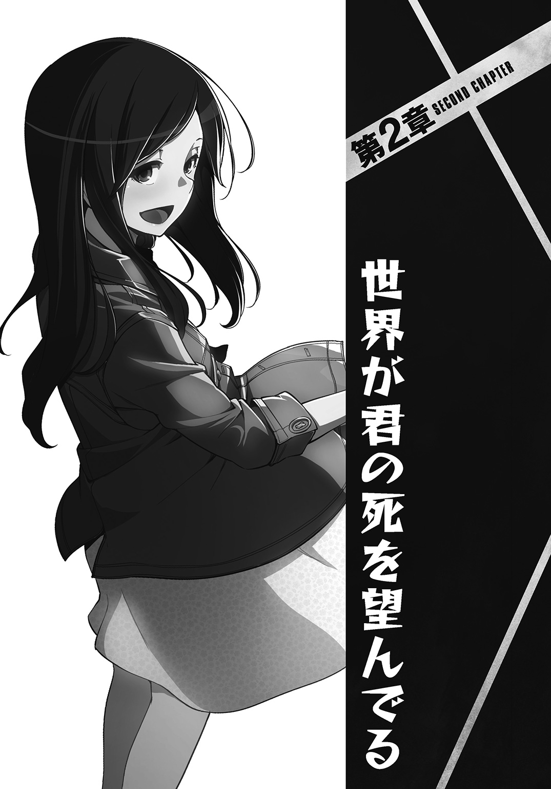

| ジョーカーズ!! | |
| ノギノアキゾウ | |
この本は縦書きでレイアウトされています。
また、ご覧になる機種により、表示の差が認められることがあります。
 ダッシュエックス文庫DIGITAL
ダッシュエックス文庫DIGITAL
ジョーカーズ!!
ノギノアキゾウ
――世界は面白がりたがっている。
そんなキャッチコピーとともに全世界で無料公開された動画投稿アプリ『Jokestar（ジョークスター）』。
現在は日本を含む多くの先進国において違法アプリに指定されているそのジョークスターに、また新たな動画がアップロードされた。
『――これは雪にゃの成長をォ、共に見守ってきた同志諸君に向けた動画ですゥ。......今回の雪にゃのスキャンダルはァ！ ファンに対する重大な裏切り行為であると俺はみなしたァ！ だからジョークスターのスキルを使ってェ、雪にゃにお仕置きをしないといけないと思うからァ！ 賛同者はウーピーボタンを押して欲しいィ！ 俺がみんなの代わりに雪にゃを懲らしめるからァ！ みんなの無念はァ俺が責任持って晴らすからァ！ 死をもってェ！』
二十代半ばの青年が、目を血走らせて視聴者に訴えかける。
即座にクラウドからのコメントが多数寄せられた。
なんだこいつｗ 支援 通報しました 雪にゃのファンです。お願いします あのアバズレマジで殺せ 支援 やっちゃえー なぁ、こういうのマジやめようぜ そうだよーやめなよー、そういうのよくないよー男子ー。ウーピーぽちー 私怨 雪菜死ね死ね死ね死ね死ね ウーピーぽちー。で、雪にゃって誰？ 声優の雪菜のことだろ まぁ清純派で売り出しといてあんなスキャンダル漏らしちゃあ、こんな香ばしいのも湧くわな...... ついでに相手の男もやっちゃってくれ。マジで許せん
ジョークスターには、『ウーピー』と『ブー』という二つの評価ボタンがある。『ウーピー』はその動画への高評価、支持、肯定を意味し、『ブー』は低評価、不支持、否定の意だ。
またジョークスターでは一日一回ガチャが引けて、超低確率ではあるが『スキル』と呼ばれる異能力が手に入る。
そしてそのスキルの性能は、クラウドの評価数に左右された。
つまりクラウドを面白がらせ、ウーピーを集めれば集めるほどスキルの性能は向上していく。
青年の動画のウーピーカウンターは、遅々としたブーカウンターとは比べ物にならない速さで回り始めるのだった。
三月末。東京都豊島区、池袋。
春休みに浮かれる若者や、時間に追われるビジネスマンが練り歩く、歩行者天国のサンシャイン60通り――その宙空を、魚が泳いでいた。
「うわ！ すごい！ 何あれ!?」
「え!? ちょ、なに!? 魚!? なんで!? 本物!?」
通行人は驚嘆と好奇にどよめき、無邪気にはしゃぐ。
色とりどり、多種多様の魚類が――いや、魚だけではない――エイやウミガメ、ペンギンやアザラシまでが縦横無尽に泳いでいた。ビルの壁面にはカニやらヒトデも這っている。
無論全て実物。映像や作り物などでは断じてない。
それはとても幻想的で、どこかイタズラめいた光景だ。
ここ池袋には、ジョークスターを用いて様々なイタズラを敢行する違法パフォーマンス集団がいる。
ＩＫＢ椿屋ポッセ――それが彼らのチーム名。
メンバー全員がスキルを有するジョークスターユーザー――いわゆる〝ジョーカー〟だと言われており、彼らの手にかかればこの通り、サンシャイン60通りも水族館に早変わり。
ここ池袋で「ポッセ」と言ったら彼らのこと。
ここ池袋で摩訶不思議なことが起きた場合、それは十中八九彼らの仕業。
そして、
「うわー、これ絶対サンシャイン水族館から連れ出してきたんだろうな......やりすぎでしょちょっと～」
ポッセと同様に池袋で――いや、ヘタしたら世界中で顔の知られた少年がここに。
周囲の反応とは正反対に、苦り切った表情で宙空を見上げている彼の名は、勝島我門。池袋を地元として生まれ育ち、この春高校二年生になる。
「また僕がターゲットにされるんじゃないだろうなぁこれ～」
我門はそう独りごち、じわりと目尻に涙を滲ませる。
なぜなら我門にとってこの光景は、不幸の幕開けを予感させるものでしかなかったからだ。
すると周囲の人間が我門に気付き、ひそひそと囁き出す。
「――ねえ、あそこにいる男の子、例のあの子じゃない？」「うお！ マジだすげー！ 初めて生で見た！」「ちょっと離れたほうが良くね？ あいつがここにいるってことは、何か起こるぞきっと」「そうじゃん！ 私達まで巻き込まれるかも！」
好奇心と期待に満ちた周囲の視線――それだけでも居た堪れない気持ちになるが、一際我門をぎょっとさせたのは、我門の足元からこちらを見上げている視線だ。
「☆＄％○＆＃！」
我門の足元に、二頭身の小人がいた。身長は一〇センチほど。謎の言語（鳴き声？）を発しながら、肩に担いだビデオカメラを我門に向けている。
この小人はクルーと呼ばれる、ジョークスターの妖精みたいなもの。動きがコミカルで触り心地もいいのでマスコットとしても人気が高いが、クルーの存在意義は他にある。
ジョークスターにアップロードされる動画はみな、このクルーによって撮影されているのだ。
裏を返せばクルーが我門にカメラを向けているということは、これから我門の身に、ジョークスターにアップロードされるような何かが起こるということだ。
（や、やばい！ 逃げなきゃ！）
我門は慌てて駆け出した。
すみませんすみませんと詫びを入れながら、人混みをかき分ける。
しかし結局、サンシャイン60通りを抜けることすら叶わなかった。
空中遊泳していた魚の大群が突如、我門ただ一人の元へ、一斉に殺到し始めたからだ。
――ビチビチビチビチビチビチビチビチビチビチビチビチッ！
「!? あ――！ なんで――!? ねぇなんで――!? どうして僕にばっかり――!? ドクターフィッシュか何か!? ――いや違うこれアジだ！ うわああああアジィイイイ！ アジゅぬるがっぺぽぁ！」
我門の絶叫が――もとい、奇声がサンシャイン60通りに木霊した。
「!? なんか服の中に入ってきた！ ああああああ！ あ!? ダメ！ そこダメな穴！ 突かないで！ うへぁああああヌルヌルするよ臭いよ怖いよお姉ちゃ―――ん！」
この場にいない姉すら呼び、魚を振り払おうと地面をビックンビックンとのたうち回る。
その甲斐あってか魚の大群は我門から離れていった。
（た、助かった!?）
しかし、
――ヒュ―――――――ン............ズドォ！
「てゅん！」
魚を追うアザラシとペンギンが、さながらミサイルのように我門の脇腹に突っ込んできた。
我門は錐揉みして吹っ飛ばされる。
「............ぐふぅ......」
そして、ピクピクと悶絶する我門を追い打つように、魚の群れが再び殺到するのだった。
「!? ぎょぉおおおおおおおおお！」
それはさながらコントかコメディーの一幕。
「――......ぷっ、あーっはっはっは！ さすがは〝世界一のビビリアクション高校生〟！」
その一部始終を観ていた周囲の野次馬たちが、どっと沸いた。
〝世界一のビビリアクション高校生〟――それが我門に冠せられた二つ名だった。
ちょうど一年前のことだ。ボタンを押した瞬間に自販機が爆発するというポッセのささやかなイタズラに、我門は巻き込まれたことがあった。
その動画がジョークスターにアップロードされたところ、我門のオーバーなビビリアクションがクラウドに大ウケ。それを機に格好のイタズラのターゲットとして我門はポッセから狙われるようになり、今やすっかり有名人になってしまったというわけだ。
「誰か......！ 助けて......助けてお姉ちゃーん！」
我門は周囲に助けを求めるが、野次馬たちは動かない。一定の距離を保ったまま、安全地帯からただ面白がって、拍手や「がんばれー」などという無責任な声援を投げてよこすだけ。
いつもこうだ。
こんな時、どんなに必死に叫んでも、自分を助けてくれる人なんて、これまで一人もいやしなかった。
「大丈夫ですか!?」
けれど、この日は違った。
「――え？」
声が降ってきた。
「摑まって下さい！」
語調こそ緊迫したものなれど、鼓膜に染み渡るような、瑞々しい耳触りの声。
同時に、視界を覆う魚の壁が引き裂かれ、真っ白で華奢な手が、我門の前に差し伸べられた。
「――......っ！」
我門は縋るように、その手を摑んだ。
するとその手は、我門のパーカーのフードの中から桜色の塊を放り捨てる。
何かと思えば、それはオキアミ団子。撒き餌などにも使われる魚の大好物だ。
無論我門は自分のフードにそんなものを入れた覚えはない。ポッセの仕業だろう。投げ捨てられたオキアミ団子を追って、魚の群れは一斉に我門から離れていく。
濃霧が晴れるようにして、視界が一気に拓けた。
するとそこに立っていたのは、キャスケットを目深にかぶった女の子。
「これで大丈夫なはずです！ さぁ、今のうちに逃げましょう！」
女の子はスカートを翻し、我門の手を引き駆け出した。
キャスケットの女の子が避難場所に選んだのは、公会堂前の中池袋公園。
宙を泳ぐ魚も人気もまばらで、喧騒とは縁遠いのんびりとした時間が流れている。
「ハァ......ハァ......久しぶりにこんなに走っちゃいました」
女の子は額の汗をふうと拭う。
ちなみに本来なら中池袋公園は、サンシャイン60通りから直進徒歩一分といった距離。しかしこの女の子は土地勘がないらしく、回り道に継ぐ回り道で五分ほど走らされた。
「......ゼェ、ゼェ......ヒュー、ヒュー......ウォェ......」
そのため我門は汗だくで息切れし、ほぼ死にかけていた。体育の成績が２なだけある。
「だ、大丈夫ですか？ それにあの、さっきのお魚たちは一体......？」
女の子は我門を心配しつつ尋ねてくる。我門は呼吸を整えて答えた。
「ジョークスターは知ってるよね？ 池袋にはＩＫＢ椿屋ポッセっていう、ジョークスターを使ったイタズラパフォーマンス集団がいるんだ。あれはそのイタズラだよ」
「......ジョークスターを使った、イタズラ......」
「？ どうかした？」
「あ、い、いえ、なんというか、ジョークスターをパフォーマンスに使うだなんて、素直といいますか、純粋な方たちといいますか」
「いっやー！ 全くもって素直でも純粋でもないけどね！」
我門は口をへの字に曲げる。ポッセのイタズラで散々な目に遭っている我門としては、ポッセが好意的に受け取られるのは面白くない。
しかしキャスケットの女の子が言わんとしていることも理解出来た。
――世界は面白がりたがっている。
そんなキャッチコピーが示すように、ジョークスターは元々面白動画を専門的に投稿するためのアプリだった。だからスキルも、何かしらのパフォーマンスや遊び、エンタメに由来したような能力が大半を占めている。
与えられたスキルで面白いことをしでかし、その動画をアップロードしてクラウドを楽しませること――それがジョークスターというアプリの本来の用途だったのだ。
しかし今となっては、そんな享楽的な使われ方をされることも少なくなった。
そういう意味では、未だ無邪気にイタズラ動画を配信し続けているポッセは、女の子の言う通り、素直で純粋と言えるのかもしれない。
「――あ、す、すみません！ 素直だとか純粋だなんて、私今無神経でしたね。そちらはイタズラされて、とても怖い目に遭われたというのに......」
すると女の子はあたふたと詫びてくる。それは真摯な思いやりであるのだろう。
しかし、だからこそ余計に我門は自分が情けなく思え、つい見栄を張ってしまった。
「べ、別に怖い目には遭ってないよ!? あれは怖がってるふりをしてただけだから！」
「怖がっている、ふり？ 演技ということですか？」
「う、うん、そう。つまり僕はその......実はポッセの一員みたいなものなんだよ......」
女の子は大きく息を呑む。
「えー!? ではあれは全て合意の上でのショー......パフォーマンスだったんですか!?」
「そ、そうだね。そうなるね」
「『助けてお姉ちゃーん！』という悲鳴も全ては台本通り！」
「う、うん......」
「周りで笑っていた方々もそれを承知のうえで見物を！」
「......ん」
「ということは私は空気を読まず、パフォーマンスのお邪魔をしてしまったわけですね!? あぁ、なんとお詫びをしたらよいか......！ ご、ごめんなさい！」
そしてわざわざキャスケットを脱いでまで、女の子は深々と頭を下げるのだった。
（うわ――――！ 胸イッッッッタ！）
我門は慌ててフォローを入れる。
「いやいやそんなことないよ！ 君が助けに入ってきてくれたおかげで、僕の情けなさがより引き立てられたから！ パフォーマンスとしては結果オーライだよ！」
「ほ、本当ですか？」
「うん。だからお礼を言わせて？ 助けてくれてありがとう。本当に嬉しかった。......本当に」
今度は我門のほうが、深々と頭を垂れた。
ひとつには、先ほどの噓への謝罪を暗に表して。
そしてもうひとつは言葉の通り。助けてもらったことへの、深い感謝と敬意を表して――。
「いえいえ、差し出がましい真似をしてしまって」
そんなさり気ない謙遜にも、耳心地良い旋律が帯びている。頰を、顎を、優しく撫で上げられたような感触すら覚え、そのままに我門は面を上げる。
そこにあるのは、これまでキャスケットのベールに包まれていた女の子の素顔。
瞬く間に、目と心を奪われた。
その透き通るような声色だとか、清楚で女の子らしい服装だとか、華奢でしなやかな体型だとか、白くなめらかな輪郭だとかから、可愛いそうな雰囲気はしていたが......その素顔は、我門の予想と期待を優に上回る美貌だった。
なるほど。こんな美少女だったのなら、キャスケットでもかぶっていなければ男に寄って来られてしまって大変だろう――。
「クルッポー」
鳩だって寄って来るだろう――。
「――......って、鳩？」
ついつい女の子に見惚れていたが、ふと気付くとおかしな状況になっていた。
どういうわけか、我門は大量の鳩に囲まれていた。
そしてそれに気付いたと同時に、鳩が一斉に我門に飛びかかってきた。
「「「「「「「「「「クルッポー！」」」」」」」」」」
「うわぁああああああああ!? 鳩が 鳩が、なんでぇ!?」
魚に引き続き、今度は鳩に集られる我門。女の子もうろたえながら確認してくる。
「これもパフォーマンスですか!?」
「!? そ、そう！ これもパフォーマンスだよビックリした!? アハハハ ハハ ハ ハハ ハハハ ハハ―――ッ!? うわぁぁあああああた、助けてお姉ちゃーん！」
「そ、そうですか！ パフォーマンスですか！ けれど、私も手にお魚の臭いがついているせいで鳩が寄ってきてしまっています。少し怖いので、もしよろしければあちらの水道までご一緒していただけないでしょうか!?」
「あ、そうか！ この鳩はそういうことね！ うん！ そうしよう！ すぐ水道に行こう！」
鳩に襲われ、女の子にそう言われるまで、我門はすっかり忘れていた。
自分は今、魚の粘膜で全身ベットベト。強烈な生魚の臭いを撒き散らしていることに――。
「......僕、まだ臭い？」
水道で全身を洗い、ずぶ濡れになった我門は女の子に尋ねた。
女の子は嫌な顔ひとつせずスンスンと臭いを嗅ぎ、柔らかく微笑む。
「いいえ、気になりませんよ」
「あ、ホントに？ よかったー」
「はい。――けれど湿気った上着では風邪を引いてしまいますから......ちょうどビニール袋がありますので、これに入れてお帰りになられてはいかがでしょう」
女の子はそう言って、ビニール袋の口を広げた。その途端、またも一羽の鳩がパタパタと我門に寄ってきた。
「............」
「えぇと......すみません。ほんの微かにですが、そのパーカーがまだ臭うかもです」
「......ありがとう。気を遣ってくれて」
我門は泣く泣くパーカーを脱ぎ、ビニール袋に突っ込んだ。
ちなみにこのビニール袋は、今しがた女の子がコンビニでジュースを買った時のもの。本人は「走ったらのどが渇いてしまって」と言っていたが、たかだか一本のジュースのために服が入るサイズのビニール袋をわざわざもらってきてくれたのだ。
「本当に、何から何までありがとう。親切なんだね。すごいよ」
「滅相もないです。ただのお節介だって、妹や弟達からよく鬱陶しがられてます」
「そう、下がいるんだ。どうりで面倒見慣れてるわけだ」
「えへへ、はい。五人います」
「五人も!? 多いね！ 六人姉弟だ」
「いえ、上にも二人いるので八人姉弟です」
「大家族！」
「その内一人としか血は繫がってないんですけどね」
「!? !?」
「けど全員仲良しですよ」
「あ、ああ、なら良かった。うん。仲が良ければ全て良しだよね。血よりも気持ちだよね」
何やら複雑な事情がありそうな家族構成に驚きはしたが、なんにせよこんな女の子を姉に持てたらきっと幸せで、頼もしいだろう――我門は心底そう思い、その眩しさに目を細めた。
すると、女の子はおずおずと尋ねてくる。
「えと、もしかして私のこと、ご存じだったりしますか......？」
「ああ違うんだ。君が僕の姉に似て――......」
似ているからつい見入ってしまっただけだよと言いかけて、我門はその言葉を呑み込んだ。
「......？ お姉さんがいらっしゃるんですか」
「う、うん......いや、ごめん、なんでもない。今のは忘れて。ともかく君とは初対面だよ。......え、初対面だよね？」
不安になって我門がそう聞き返すと、女の子はなぜかホッとし、そして嬉しそうだった。
「はい。はじめましてです。私は祈と申します。苗字です。今年高校二年生です」
「あ、同い年だ。僕は勝島我門。祈さんはこの辺の人？」
「いえ、明日池袋で用事がありまして、前乗りしてるんです。とったホテルの窓から空を泳ぐお魚の群れが見えたので、こうして出てきたという次第でして――って今にして思えばものすごく不用心ですね、私......」
言下に祈の表情が曇る。
「あ、いえすみません、こちらの話です――って、あー!? シュシュがない！」
かと思うと今度は自らの手首をさすり、何やら慌て出した。
「シュシュ？」
「髪をまとめておくやつです。くしゃくしゃした布の。手首につけていたんですが......」
「それってもしかして、あれ？」
我門はのんびりと宙を泳ぐ一匹の魚を指さした。
その魚の背びれには、祈が言うようなくしゃくしゃの布が引っかかっていた。
「あー！ あれです！」
「メバルだね。背びれにトゲがあるから引っかかったんだ」
ではいつ引っかかったのかと考えると、十中八九、祈が我門を助けようとして魚の群れをかき分けてきてくれた時だろう。
祈は上空のメバルに手を伸ばしかけたが、すぐに引っ込める。
「捕まえ――られるわけないですね。ハァ......妹達からの手作りのプレゼントだったのに......」
およそ手の届かない高さを泳ぐ魚など、捕まえようがない。
困ったように微笑む祈の口元からは、深い落胆と諦観のため息が漏れて――、
「......僕が捕まえてみようか？」
自然と、我門は申し出ていた。
「え!? どうやってですか!?」
曇っていた祈の瞳に光が差す。
しかし我門は答えに窮してしまった。正直その方法というのが、大っぴらに言えるようなものではないからだ。
「えーと......あ、ほら、僕はこのイタズラを仕掛けたポッセの一員だし！ 何とかしてあげられると思う！」
だから我門は適当にはぐらかす。
「あ......そういえばそうでしたね」
祈は納得したように頷くが、その表情は心なしかぎこちない。きっと我門の申し出が、調子のいい安請け合いに聞こえてしまったのだろう。
これはいよいよメバルを捕まえてみせないことには格好がつかない。
「今すぐにはちょっと無理だけど、明日までには何とか出来ると思う。祈さんは明日も池袋にいるんだよね？」
「は、はい。明日十三時から、アニメイトでイベントがありまして」
アニメイトでやるようなイベントに参加予定とは意外な一面だ。アニメやマンガが好きなのだろうか――と、そこまで考えて我門はふと思い出した。
「もしかして、そのイベントって『タイタン・サーガ』絡みの？」
「あ、はい、そうです」
『タイタン・サーガ』――魔法使いの人間がエルフやドワーフ、ホビットらと共に巨人退治の旅に出る、大人気ファンタジー漫画だ。テレビアニメ化はすでにされ、明日にはここ池袋で劇場版の公開記念イベントが予定されている。確か作中に登場する巨人の等身大立像も立てられるとか何とか。
「それじゃあ必ず――は言い過ぎか......多分！ 確証はできないけどもし万が一あの魚を捕まえられたら、その時間にアニメイトまでシュシュを届けに行くよ！」
決まりだ。我門にしては珍しく、強気になって胸を叩いた。
「はい。けど、無理はなさらないで下さいね？ 諦めがつくものですので......。イベント会場には、我門さんのお名前を告げれば入場出来るように話を通しておきますから。それでは」
「？ うん。それじゃあ！」
名前を告げれば云々という件が気にかかったが、それを質すよりも早く、祈はペコリと頭を下げて公園を去っていった。
「......いい子だったなぁ」
遠ざかっていくその後ろ姿を目で追って、我門は余韻に浸るように独りごちる。
他愛もない会話や、逐一自分なんかを立ててくれた気配り、雰囲気の柔らかさ、可愛さ、あの笑顔、声......そして何より、ポッセのイタズラから自分を助けてくれたこと――それらを反芻するだけで、我門の胸は温かくなる。
と同時に、まだまだ自分は祈への感謝を伝えきれていないことに、もどかしさも覚える。
（シュシュのひとつくらい取り返して、祈さんに恩返ししなくちゃ！）
そうして我門は俄然やる気を漲らせ、シュシュを引っ掛けたメバルをきっと睨み上げつつ――家に帰った。
シャワーを浴び、服を着替え、我門は二階の一室へ。
そこが我門の自室ではないことは明白。なにせ部屋の内装は、年頃の女の子のそれ。
我門は窓際の勉強机の引き出しを開け、中から一台のスマホを取り出した。
使い古された様子のそれに電源を入れ、しばしいじる。
すると我門の左手が、薄紫色の光を放ち始めた。
「――△＠％＊×♪◇？」
同時に我門の肩にひょっこりクルーが現れて、カメラを片手に何やら話しかけてくる。
「いや、今回は撮影は無し。久しぶりだっていうのに悪いね」
しかし我門がそう言うと、クルーは不満気な仕草を見せてどこかへ消えてしまった。
一方我門の左手に纏わりつく薄紫色の光は、ガラス細工のようにぐにゃぐにゃと形状を――やがては色味さえ変え、固形化していく。
鈍い鉛色の、Ｌ字型の金属――我門の左手に精製されたそれは、自動拳銃だ。
宵の口の、西池袋の乱歩通り。
帰路につく我門の足取りは、スキップでもしだしそうなほどに軽快だった。
それもそのはず。なんと我門の手には、祈のシュシュが握られているのだから。
（くふふ。祈さん、喜んでくれるかな～。くふふふふふふふ～）
アニメイトに颯爽と現れ華麗にシュシュを差し出す自分と、「まあ！」なんて驚く祈の姿を妄想し、我門は一人ニヤニヤと笑う。すれ違う主婦やサラリーマンから露骨に気味悪がられていることにも気づかないほど、我門は意気揚々と浮かれていた。
「――あ」
しかし、前方にいる一人の少女に気付いた途端、我門は甘い妄想から現実へと引き戻された。
その少女とは、褐色の肌にバッチリメイク、カットソーとショートパンツの組み合わせにファー付きジャケットを羽織ったギャルだ。
そのギャルは我門を待ち構えていたかのように腕組みして、こちらに冷ややかな目を向けている。そしてカツカツとヒールを鳴らし、我門の前までやって来ると開口一番――、
「キモいんだけど」
そう吐き捨てた。
「キモくはない」
我門は即座に言い返す。
「うざ」
「うざくもない」
辛抱強く言い返す。
するとギャルはおもむろに、鼻を摘んで吐き捨てた。
「くっっっっっっっっっさ！」
「!? う、噓だ！ ちゃんと一旦家に帰ってシャワーも浴びて着替えたもん！」
「いやまぢ魚臭い。こびりついてる。伝染るから寄んなし。悪臭撒き散らして周りに迷惑かけるくらいならあのまま魚に食べられて消えちゃえばよかったのに」
やたら毒舌なこのギャルの名は、七夕宙子。何者かといえば、我門の幼馴染だ。
「......もう今日の動画上がってるの？」
その口ぶりからするに、宙子は我門がポッセのイタズラに巻き込まれたことを知っている様子。ということは早速今日のイタズラがジョークスターにアップされているのかと思いきや、宙子は肩をすくめた。
「さあ？ まだぢゃね？」
「じゃあなんで僕が魚のイタズラに巻き込まれたことを......って、あー！ さては宙子、あの場にいたな!? 見てたんなら何で助けてくれないんだよもー！ なに!? 宙子もポッセが怖いの!? そんな女ヤンキーみたいな格好してるくせに!? この意気地なし！」
幼馴染が災難に見舞われているというのに見て見ぬふりをしていたなんて！
我門は文句をつけたが、宙子は眉一つ動かさずに切り捨てる。
「うっざ、どこが女ヤンキーだし。普通のギャル服だし。てか自分が情けないのを棚に上げて何その言い草。そもそもポッセがどんだけ悪名高いか知ってて女のウチが助けに入らないのを責めるわけ？ どういう神経してんの？ ありえねー。サイッテー」
「うぐっ」
ポッセは基本的に、怪我人を出さないよう配慮はしているようだ。とはいえ黒い噂がないわけではなく、イタズラやパフォーマンスとは無関係に彼らに襲われ、重傷を負った者もいると聞く。だから警察も彼らを犯罪集団として認定し、その実態を追っている。
そんな集団が相手とあっては、宙子が我門の救助に二の足を踏んでしまうのも無理はない。
「ご、ごめん......。――でも見てたでしょ？ 僕を助けてくれた女の人がいたんだよ」
しかし、だからこそ際立つのだ。ポッセのことを知らなかったとはいえ、助けに入ってくれた祈のすごさが。
そう我門が熱弁すると、宙子は......、
「あー......。あの子はね、うん。確かに、まぢチョーかっけーみたいな！ チョー泣けるっつーか！ 普通にリスペクト！ ヤヴァイ！」
しかめっ面から一転、興奮気味に笑顔を咲かせるのだった。
宙子は我門への当たりこそ強いが、根はこのように素直で正直だ。
「でしょ!? かっこよかったでしょ!? いやーわかってるじゃん宙子！」
「――は？ なんでお前が得意げ？」
「ごめんなさい調子乗りました」
「......にしてもさー、あんだけ素がいい子ならさー、男とかお酒とかタバコとか、そんなんどうでもいい気がするけどねー」
「ん？ 何のこと？」
「いやだからあの子のスキャンダルの話」
「......うん？」
突然何の話をしているのだろうか。我門が疑問符を浮かべると、宙子は呆れ返る。
「うわー......こいつまぢバカ。気付いてなかったんだ。お前、あの子誰だと思ってんの？」
宙子の言ってる意味はさっぱりわからないが、祈が誰かと問われたら、それはあれだ。
「ヒーローかな」
誰もが自分を笑う中、祈だけは救いの手を伸ばしてくれた。あの勇気と優しさは、まさしくヒーローだ。
我門としては上手いこと言ったつもりだったので得意げな顔をしたが、しかし、
「......ちっ、案の定だし」
宙子から返ってきたのは、心底苛立たしげな舌打ちだ。
「お前さ、〝世界一のビビリアクション高校生〟とか言われて悔しいとか情けないとか思わないわけ？」
「お、......思ってるに決まってるじゃん......」
見ず知らずの他人から笑いの的にされる、望んでもいない道化役......その惨めさ、理不尽と来たらない。
この境遇から抜け出したいと、我門は切に願っている。だからこそ、
「だったら今日、偶然、たった一回助けてもらったくらいでのぼせ上がってんぢゃねーよ。自分の力で何とかしない限り、お前はずっと〝世界一のビビリアクション高校生〟のまんまだろ」
宙子から吐き捨てられた正論は、ヒーローの登場に浮ついていた我門の胸を容赦なく抉る。
「何がヒーローだっつーの。いつまでも他人の助けを待ってんじゃねーよバーカ」
「............」
耳が痛い。返す言葉が見つからない。
「......な、なんか今日はいつにもまして機嫌悪くない？」
目と話を逸らすことしか、我門には出来ない。
「うっせ。ほっとけし。てか何その知った風な口。うざ。キモ」
「と、ところでこのシュシュ、洗って返そうと思ってるんだけど、特殊な洗い方とかするの？」
「え？ シュシュの、洗い方......？」
「あ、知らないならいいや」
「は!? し、知ってるしー！ シュシュな！ あるよ、特殊な洗い方！」
「いいよ、今更見栄とか張らなくて。宙子が家事できないことくらい知ってるから」
「おまっ、バッカにすんなし！ 教えてやるっつーの！ お前んち行くぞ！」
「いや、本当にいいってば。ろくな事にならないから。ねえ、宙子？ ――ってほら今スマホで調べてんじゃん！ グーグル先生頼りじゃん！ だったら僕にだって出来るよ！」
このあと宙子は本当に我門の家までついて来て、シュシュを洗い、ちゃっかり晩御飯まで食べて帰っていった。
そして夜更け。
我門が自室のベッドに寝転がってテレビをザッピングしていたら、ニュース番組に目が留まった。映し出されているのは、黒焦げの瓦礫の山の映像だ。
『ご覧頂けますでしょうか。こちら日野原容疑者の自宅アパートなのですが、丸々一棟焼け落ちてしまっております。この惨状は、日野原容疑者に奪われた〝アーネスト〟によるものと思われます』――都内住宅地の現場から、リポーターが中継する。
アーネストと聞いて、我門は体を起こした。
それは警察が所有する〝ジョーカー制圧用人型ロボット〟だ。
元々は軍事兵器だという都市伝説的な噂だが、実際それを一笑に付せないスペックと数々の装備が搭載されているらしく、対ジョーカーの切り札として絶大な成果を挙げている。
これを、日野原という男が、そのコントロール権限ごと奪ったそうだ。
日野原には元々、とある容疑がかかっていた。
ジョークスターに、人気アイドル声優への殺害予告動画をあげた容疑だ。
すでにその動画は日野原本人により削除されたが、削除直前には一〇万近いウーピーが集まってしまっていた。対して集まったブーは一〇〇〇にも満たず、差し引きで日野原のスキルの性能は大きく向上していることが予想された。なので日野原逮捕のためにアーネストが投入されたわけだが......逆にアーネストを奪われ逃げられた、というのが事の顚末だそうだ。
我門としては、殺害予告自体にはさして驚きはない。
『〇〇を倒したいからウーピーボタンを押してくれ』
『〇〇に罰を与えたいと思う。賛同者はウーピーをくれ』
こんな使い方は、過去世界中でいくつも例がある。軍事独裁政権下の少年が、政府の打倒を宣言する動画をアップしたところ、ウーピーが大量に寄せられてスキルの性能が劇的に向上。少年たった一人で、本当に政府軍を武力制圧してしまったことすらあった。
だから、殺害予告程度では驚かない。
しかしそんなジョーカー達に対して絶対の制圧力を備えていたはずのアーネストそのものが奪われるとは前代未聞のことで、それには我門もいささか驚かされた。
ただ何よりも我門を驚かせたのは、殺害予告を出されたというその相手――。
『殺害予告を出された人気アイドル声優の雪菜さん。所属事務所及びご本人は、公式ホームページとブログで、先日のスキャンダル騒動を全面的に否定しており――』
そんなナレーションとともにぱっと画面が切り替わる。
およそ一週間ほど前に、何者かによってネット上にリークされたという一枚の写真が映る。
それは、女の子とチャラそうなロン毛男のツーショット写真。ベッタリと抱き合う二人の服は乱れ、背後のテーブルには酒瓶や灰皿が見切れている。
どう見ても、自宅で酒やタバコをやりながらいちゃついている二人の男女の写真にしか見えなかった。さらに穿って見るなら、事前か事後の写真だった。
そしてこの女の子のほうが雪菜という名の、目下人気急上昇中の清純派アイドル声優なのだそうだ。しかも、現役の女子高生。
そのため雪菜は大炎上。スキャンダル写真は事実無根との公式発表もしたのだが、熱狂的ファンの怒りは収まらず、その急先鋒として日野原が現れたというわけだ。
（――......え？ あれ？）
そしてそのスキャンダル写真を見て、我門は飛び起きた。
ロン毛男にべったり抱きつき笑っている女の子は、見紛うことなく――。
「い、祈さん!? ――はべしゃ！」
驚きのあまりベッドから転げ落ち、我門はここでようやく知った。
自分を助けてくれたヒーローは、渦中の清純派アイドル声優だったことに。
午前二時――サンシャイン60通りの交差点に、クレーン車や大型トラックが多数集まっていた。
『タイタン・サーガ』に登場する巨人の等身大立像――その組立作業である。
深夜だというのに工事関係者だけでなく一般人の姿も多いのは、熱心なファンが詰めかけているからだ。
しかし、
「はぁ～あ、こんな立像も作ってもらえるくらい盛り上がってるのに......完璧ケチついたよなぁ」「ね。三期の制作も進んでるらしいけどまだ全然アフレコは終わってないわけでしょ？ どうすんだろうね、雪菜は」「あのスキャンダルは印象悪いよなー。実際俺も幻滅したし」「俺も」「俺もだわー。むかっ腹が立って、ついつい例の動画のウーピーボタン押しちゃったもん」
とあるファン同士の会話である。
実はこの『タイタン・サーガ』、アニメ版放送開始当時まだ無名だった雪菜がヒロイン役に大抜擢され、アイドル声優としての人気に火がついた出世作なのだ。
それだけに件の雪菜の騒動は、タイタン・サーガファンの心証にも濃い影を落としていた。
すると、
「だろォ!?」
「!?」
大きなマスクをした男が、急にそのファン同士の会話に割り込んできた。
「ほらな！ ほらな！ やっぱだ！ やっぱ雪にゃは死ぬべきだと思うよなァァア!?」
何やら喚いているマスクの男に、ファンたちは恐怖すら覚えて立ちすくむ。
直後、
――ギギギギギギギギギギギギギギギギギギギギギギギギギ！
「な、な、なんだ!?」
不穏な金属音が響き渡る。音の発生源は、どうやら巨人立像。
緊張が走り、騒然となる現場。何かトラブルだろうかと、工事関係者は状況の把握に努める。しかしすぐに、巨人立像の軋轢音は止んだ。
「な、なんだったんだ、今の音......」
ファンも戦々恐々と互いに顔を見合わせる。
そしてふと思い出し、振り返った時にはすでに、先ほどのマスク男は姿を消していた。

六時五九分――池袋サンシャインシティプリンスホテルの一室。
ベッドはもぬけの殻となっており、替わりにシャワールームに人の気配があった。
七時――ベッドに備え付けのアラームが、ピピピと鳴る。
「はいはいはい」
するとシャワールームからパジャマを着た少女――祈雪菜が出てきて、バスタオルで髪を拭きながらアラームを止めた。
（......あんまり眠れなかったな......）
昨晩は午前一時を過ぎても寝付けず、今朝は今朝でアラームが鳴るよりも早く目が覚めてしまった。おかげで頭も体もだるい。
雪菜は小さくため息をつき、何の気もなしにテレビを点ける。すると画面には、焼け落ちたアパートと『警察関係者に死傷者多数』のテロップが映し出された。
はっと息を呑み、慌ててテレビを消す。
「ふっ......ふっ......」
一瞬で心拍数が跳ね上がり、呼吸も乱れる。
目を閉じて、深呼吸をし、再び目を開けると、真っ黒のテレビ画面には、沈痛な面持ちで下唇を嚙む自分の姿が映っていた。
八時五十分――雪菜はキャスケットを深くかぶり、ロビーへ降りてチェックアウト。ラウンジを見渡すと、一人の男性が雪菜に軽く手を上げた。マネージャーの石渡だ。
雪菜はこくりと大きくつばを飲み、そして爽やかな笑顔を浮かべた。
「おはようございます！ 石渡さん」
「おはよう雪菜。今日も元気だね」
「はい。いいお部屋を取って頂いたのでぐっすり眠れました。昼は青空、夜は夜景で、窓からの眺めが素晴らしかったです」
一音たりとも濁りない、一言たりとも澱みない、清涼な声音と流麗な呂律......ゆえに石渡はまんまとその言葉を鵜呑みにして、安堵し破顔するのだった。
「そう？ ならよかった。いやーけど本当、雪菜は見かけによらず図太くて助かるよ。普通の女の子だったらヒステリー起こして仕事をうっちゃってもおかしくないのにさ」
「............」
雪菜は曖昧に微笑んで相槌を打つ。一方石渡は力説を続けた。
「踏ん張りどころだよ雪菜。日野原の件で何日も家に帰れてない社員がたくさんいる。身の安全を考えてホテル暮らしをさせてるけど、それだってタダじゃない。みんな雪菜のために身を削ってくれてるんだ。そういう人達のためにも頑張らなきゃだよ」
雪菜は表情を引き締め、今度は神妙に頷いた。
重々わかっていることだから。
「それにこういう事態が起きるのは、人気の裏返しだから。人気っていうのは誰もが手に入れられるものじゃない。喉から手が出るほど売れたいと願い、努力しても、手に入れられない声優はゴマンといる。雪菜はとても恵まれてるんだ。そういう人間は、夢破れた人の分まで頑張らなくちゃいけない。わかるよね？」
わかっている。己の責任なら充分に。
しかも雪菜は元々、声優を夢見ていたわけではない。石渡からのスカウトをきっかけに、声優になればアニメ好きの妹や弟が喜ぶかもしれないという、そんな軽薄な動機でなったのだ。
その申し訳なさが、雪菜の責任感をより強固にしている。
だからこそこうして笑うのだ。
「ええ、わかっています。心配しないで下さい。私、これくらいへっちゃらですから」
たとえ事実無根のスキャンダルで世界中から非難され、ファンから命を狙われようとも。
たとえ警察関係者に、死傷者が出ようとも。
「うん。その意気その意気！ ......ま、これは雪菜の自業自得でもあるしね......恋愛は禁止だってあれほど口を酸っぱくして言ってきたのに......」
「い、石渡さん！ ですから私には身に覚えがありませんと何度も――！」
「あ、や、今のは冗談！ そんなに怒るなってば」
冗談とはいえあまりにもデリカシーに欠けていたので、さすがの雪菜も口を尖らせた。
突如ネットに流布された例のスキャンダル写真――写っている女性の顔立ちと、何より妹たちお手製のシュシュが写っているのを見る限り、確かにそれは自分に違いなかった。
しかし写真の男性には一切見覚えがなく（というか髪型や角度のせいではっきりとどんな顔かはわからない）、またあのように懇ろになる間柄の男性など、雪菜には今も過去にも一人もいない。お酒もタバコも当然しない。
つまり、あれはまったくもってデタラメな写真。合成やコラージュの類であるはず。
しかしそれは、真実として世の中に受け入れられてしまった。
ネットは雪菜への誹謗中傷で溢れかえった。
ついには日野原のような人物まで現れて、殺害予告動画へのウーピーは――殺害への賛同の声は、一〇万を超えた。
「――そうだ、石渡さん。この後のアニメイトでの握手会、もし勝島我門さんという方がいらっしゃったら、当選券なしでもお通しするよう手配して頂けますか」
雪菜はふと思い出し、石渡に言う。
「カツジマガモン......？ 誰？ 知り合い？」
「はい。ちょっとしたご縁で昨日お近づきになりまして」
「うーん。あんまり感心しないな。そんな素性もわからない人間を招き入れるのは」
「大丈夫です。我門さんはそういう人ではないですから。よろしくお願いします」
石渡は難色を示したが、雪菜はやんわり自分の希望を押し通した。
それは、シュシュが手元に戻るなら是非とも回収したいから。
またあの我門ならば人畜無害だろうという妙な信頼感もあったから。
それに加え、我門が自分に似ていると思ったから。
（......けどきっと、来てくれないだろうな......）
我門が来るとしたら、空飛ぶ魚からシュシュを取り返した場合。
しかし正直雪菜には、あの我門という少年にそんなことが出来るとは思えなかった。
だからきっと、彼にはもう会えない。残念だけれど、仕方がない――。
「わかったよ。カツジマくんね。それじゃ行こうか」
雪菜は石渡とともに、ホテルを後にした。
警察官や警察車両の異様な多さを横目にしつつ、我門はサンシャイン60通りへ向かった。
交差点に、布で覆われた巨大な何かがそびえ立っている。ビル九階分はあろうか。
あれが等身大の巨人立像のようだ。まだイベント開始まで一時間以上あるが、すでに巨人立像足元のステージ前には見物客が詰めかけている。我門もその後ろについた。
前から四、五列目くらいの位置。ここからなら、背の低い我門でもステージがよく見える。雪菜の姿をちゃんと見たかったので、早く来て正解だったとホッとする。なにせ時間を追うごとに見物客はどんどん増え、我門の背後には黒山の人だかりが形成されていくのだ。
場の人口密度が増し、足の踏み場を譲り合ったり、ちょっと肩を押しのけられたり、
「いやだよもう～。なにこれバーゲン？ バーゲンなのかい？」
――ギュ～ッ！
「いだだだだ！ お、おばあさ～ん!? 杖！ 思いっきり僕の足に杖突いちゃってます！」
この混雑に巻き込まれたおばあさんに、杖で足を突かれたり......。
押し合いへし合いしているうちに、イベント開始十分前――気づけば我門は見物客の最後列にまで押し流されていた。
「!? うえええ!? あれー!? なんで!? せっかく早く出てきたのに!?」
『――みなさーん！ こーんにーちはー！ 本日は劇場版〝タイタン・サーガ〟公開イベントにお集まり頂きありがとうございます！』
十時――街頭のスピーカーから女性の声が弾ける。拍手と歓声が波打った。
その明るく耳触りの良い声には聞き覚えがあった。
『本日の司会進行役を務めさせて頂きます、エレオーネ役、雪菜と申します。よろしくお願いします。さて早速ですが、監督にもご登壇願いましょう！ か～んとく～！』
そう、雪菜だ。我門はその姿を一目見ようと必死に背伸びした。しかし、
（......まったく見えない......！）
我門は己の不運と背の低さに悔し涙を流した。
ただ姿こそ見えないが、声音を聞くだけで雪菜が笑顔を振り撒いているのが目に浮かび、我門の頰もつられて緩む。
なんて勇敢で肝の据わった女の子なのだろうと、感服してしまったのだ。
とても命を狙われている女の子とは思えない。
「雪にゃ～！ 頑張ってー！」「俺達は応援してるぞー！」
あちこちで、雪菜への熱い声援を送る人がいる。ネット上で大バッシングされているとはいえ、さすがにこういった現場に駆けつけるのは雪菜のことを擁護するファンのようだ。
雪菜への声援を聞くと、なんだか我門までホッとしてしまう。
『――それでは、作中に登場します巨人の、等身大立像をご覧頂きましょう！ どうぞ～！』
雪菜の掛け声とともに布が外され、見物客はどよめき、そして大いに沸いた。
「でっか！ 怖っ！」
人というよりも猿に近い顔面に体型、唇からはみ出た牙、異様に肥大化した筋肉、長い腕、短い足――ついにお披露目された巨人立像は圧倒的スケール感で、しかもやたら質感がリアルなので我門は足がすくんだ。
「な、な、なぁ!? な～にかねあの巨人は!?」
――ギュ～ッ！
「ひいぎぃぃぃ！ だからおばあさん、杖ぇぇえええ！ 足に穴開く！」
隣のおばあさんも腰を抜かしかけていた。
同時刻、買い物客で賑わう池袋駅西武デパート。
「ママー、もうあきたー。ちがうところいこうよー」
「ちょっと待って！ ――あ、遠く行っちゃダメよ、みいちゃん。迷子になるから！」
婦人服売り場にてママさんがセール品を漁り、その子供が店先のショーウィンドウの前で大人しく待っていたりするのもお決まりの光景だ。
するとみいちゃんという女の子の隣に、すっと一人の男がやって来た。マスクをしたその男は、ショーウィンドウに飾られたマネキンを凝視している。
「――きゃははははは！」
みいちゃんも、マスク男の視線の先を追い......そして無邪気に笑い出した。
「お待たせ～。って、何をそんなに笑ってるの？」
買い物を終えたママさんは、何やら一人で楽しげに笑っているみいちゃんに尋ねる。そしてふとショーウィンドウの中を見て、眉をひそめた。
「......何このマネキン」
女性を模したそのマネキンは、がに股で腰を深く落とし、両手の指先を頭頂部に添えるという、おどけたポーズをとっていた。
それは、関節が可動しないタイプのマネキンであるにもかかわらず......。
劇場版『タイタン・サーガ』の公開記念イベントはつつがなく進行し、何事も無く終了した。
その後適当に時間を潰し、我門はアニメイトへ向かう。
このあと十三時から雪菜の握手会とちょっとしたミニライブが開かれるらしい。つまるところ雪菜がシュシュの受け取り場所として指定してきたのは、その握手会だったのだ。
アニメイトの入り口には門番のように警察官がいて、客一人ひとりをチェックしていた。その物々しさは不安を煽るが、これだけ厳重な警備がなされているのなら、雪菜の身の安全は約束されたようなものだろう。
警察官のチェックをクリアし、我門は店内へ。
また彼女に会える。話せる。きっとシュシュを喜んでもらえる――期待に胸が膨らむ一方で、階段を上がっていくごとに妙な緊張もまた芽生えてきた。
雪菜は大人気アイドル声優だ。昨日のような馴れ馴れしい態度は許されない。無礼があったら剝がしのスタッフや古参のファンから袋叩きに遭うかもしれない。
そんなことを考えれば考えるほど緊張は増し、
――グギュルルル......。
「はう......！」
腹に来て、我門は慌ててトイレの個室に駆け込んだ。我門はあまり腹が強くない。
（......ふー、せっかくだし予習でもしとこうかな......）
便座に腰掛け、スマホにイヤホンを挿しこむ。流れてくるのは、透き通るような声質が魅力的な歌――雪菜の楽曲だ。雪菜の仕事を一切知らないまま本人に会うなんて無礼かなと思い、昨晩慌ててダウンロードしたのだ。
（とりあえずこれ聴いとけば話題にも困らないよね）
そうして雪菜の曲を予習しながら、我門は腹痛が引くのを待った。
そんな些細な行動が、不幸の幕開けであるとも知らずに――。
最初にその騒動と鉢合わせたのは、池袋駅東口前を警ら中の警察官だった。
一階パルコの出入口から、大勢の客が悲鳴を上げて、我先にと逃げ出していくのだ。
弾かれたように警察官は現場へ駆け寄り――そして固まった。
「――な、なんだこれは......」
そこにいたのは、おそらく店内に飾られていたであろうマネキンの群れ。
マネキンが、人間のように自立歩行しているのだ。しかも手には、値札のついた包丁や鈍器になりそうな調理器具などが握られており、さながら暴徒のよう。
すると警察官の無線に連絡が入る。
『――こちら明治通り西武デパート前、こちら明治通り西武デパート前！ 西武デパートより凶器を持ったマネキンが出現！ 凶器を持ったマネキンが出現！ 数は多数！ 応援求む！』
パルコだけではない。西武デパートや東武デパート......その他池袋中の服飾店からも歩くマネキンが現れたのだ。
摩訶不思議な現象に慣れっこの池袋の人々とはいえど、それが凶器を伴っているとなれば話は別。池袋駅東口は騒然となった。
かたやマネキンの群れは、逃げ惑う周囲の人間は気にも止めない。信号すら無視し、車が流れる明治通りを渡り出す。車に跳ね飛ばされてバラバラに砕けるマネキンもあれば、逆にマネキンを避けようとして事故を起こす車両もある。
人々の悲鳴、車の衝突音、けたたましいクラクション――
「止まれ！ 止まれー！」
そして警察官の怒声にも、マネキンは耳を貸さない。あまつさえ、行く手を阻もうものなら躊躇なく凶器を振りかざす。
そうしてただひたすら、みな一様に、マネキンの群れはサンシャイン方面へと侵攻していく。
「......っ！ こいつら、目的はアニメイトにいる例の声優だ！ これは日野原の仕業だぞ！ 食い止めろ！ アニメイト周辺にも人員を配置するように指示しろ！ 大至急だ！」
警察官たちは、早々にこのマネキンの正体と目的を看破した。
アニメイト九階イベントホール――パーテーションで仕切られた控え場所。そこで握手会の開始を待っていた雪菜と石渡のもとに、アニメイトの店員が慌てて駆け込んできた。
「失礼します！ あ、あの、ちょっといいですか!?」
店員は雪菜を一瞥し、気まずそうに逡巡した後、石渡にのみ何かを耳打ちする。
その様子から、悪い知らせであろうことは雪菜にも容易に察せられた。
「......し、信じられない話だけど、凶器を持ったマネキンがここに押し寄せてるそうだ」
石渡の言葉に、雪菜は耳を疑った。マネキンが動いているということだろうか。
確かに信じがたい話だが......しかしジョークスターのスキルがあれば――それを所持している彼ならばきっと、そんな超常現象も実現可能なのだろう。
「日野原さんですね」
「ああ、おそらく......。ほんの店先で、なんとか警察が食い止めてるらしいけど......」
石渡は言葉を濁し、目を泳がせる。どう行動するべきか決めあぐねているようだった。
「......でしたら、店内にいるお客さんと店員さんの避難を最優先にお願いします」
なので雪菜はぐっとお腹に力を込めて、石渡にそう告げた。
「え？ ゆ、雪菜は？」
「私はここに残ります。狙いが私ということでしたら、今下手に外に飛び出すほうが危ないでしょうし、周囲に迷惑も掛かります。それに警察の方々もその方が守りやすいと思うんです」
すると、雪菜は確かに見た。その提案に、店員が安堵と感謝の表情を浮かべたのを――。
だから石渡にも、笑って言える。
「石渡さんも、お客さんの避難誘導を手伝ってあげて下さい。私は一人で大丈夫ですから」
「え、あ、そ、そう!? じゃあ雪菜は、騒ぎが落ち着くまでここでじっとしてるんだよ!? あとで必ず迎えに来るからね！」
そう言い残し、石渡は店員とともに飛び出していった。
それからほんの一、二分後――非常ベルが鳴り響き、店内放送と店員たちの指示により避難誘導が始まった。
「............」
階下に遠ざかっていく喧騒を耳で追い、雪菜は自分の震える肩を抱く。
やがて非常ベルも止んだ。ついさっきまで雪菜のファンたちで賑わっていた九階イベントホールが静まり返るまで、さほど時間は掛からなかった。
すると耳につくのは、ビルの外の騒ぎ。凶器を持ったマネキンというのは、池袋の往来に多大な混乱をもたらしているらしい。人々の悲鳴や怒号が、ここにまで聞こえてくる。
我門はわなわなと手を震わせて、耳にしていたイヤホンを外した。
「そ、んな......噓、でしょ......？」
絶望に声が上ずる。嫌な汗が、頰を伝って滴り落ちる。
「う、うわああああああ！ だ、だ、誰か助けて！ 誰かー！ お姉ちゃ～ん！」
自分が今危機的状況にあることを悟った我門は、たまらず絶叫した。
「噓でしょ～。なんで......なんでこんなことになるんだよ！ ――紙が無い！」
我門が駆け込んだ個室トイレは、紙が切れていたのだった。
「うぅ～。僕いっつもこんなんだよ～。何なんだよも～。早く誰か来て～。助けて～」
誰かがトイレに入ってきたら、恥ずかしいけれど紙を調達してきてもらおう――そう思って我門はじっと待っていたのだが、なかなか人はやって来ない。
それどころか、
（......？ なんか、いやに静かじゃない？）
店内放送や客の活気すら聞こえてこないことに気がついた。
不審に思った我門は、やむなくトイレットペーパーの芯とウォシュレットの併用で危機的状況を緊急回避し、トイレを出た。
そして売り場で呆然と立ち尽くす。そこには誰もいなかったのだ。客はおろか、店員すら。
そう、我門は音楽を聞きながらトイレの個室にこもっていたせいで、まったく気づいていなかったのだ。
客も店員も、すでに店外へ避難していることに――。
「......僕が買い支えないとなぁ」
しかしそんなこととはつゆとも知らない我門は、この現状を、単に客足が遠のいて店員も暇してバックヤードに引っ込んでいるのだろうと結論づけたのだった。
店内の時計を見ると、雪菜の握手会まであと数分。我門は急いでエレベーターを呼び、一気に九階にまで上がった。
売り場はあれほど閑散としていたが、きっとイベントホールは雪菜のファンで賑わっていることだろう――我門は足を踏み入れる。
『〝劇場版 タイタン・サーガ〟公開記念 祈雪菜ライブ＆握手会』と銘打たれた看板、小さいながらも歌って踊れるだけのステージ――会場の準備はばっちり整っている。
が、
「――......ぐすっ......」
そこにいたのは、たった一人――ステージに腰掛け、肩を震わせ泣いている雪菜だけ。
「......え!? もしかして、握手会に来た人ゼロ!?」
握手会を開催しておいて一人も来なかったらそりゃあ切な過ぎて泣く。
何も知らない我門がそんなことを口走ると、雪菜ははっと顔を上げ、涙を拭い目を剝いた。
「が、我門さん!? どうしてここに......早く逃げて下さい！」
「え？」
「今このビルは襲われてるんです！ お客さんも店員さんもみんな避難したんですよ！」
「......えぇっ!?」
今度は我門が目を剝く番だった。
我門と雪菜が再会を果たしていたその時、アニメイトビルの周辺は混乱のピークを迎え、そして収束に向かおうとしていた。
マネキンの侵攻を阻む、警察官の防衛戦――そこに機動隊も合流し、応援に加わったのだ。
アニメイトに残るという雪菜の判断は、結果として正しかった。結局警察側は、マネキンの一体足りともアニメイトへの侵入を許さなかったのだから。
しかし、
「――まァ、マネキンなんてしょせん陽動なんだけどねェ」
この混乱のせいで、等身大巨人立像はすっかり人々の注目から外れていた。
だから立入禁止のチェーンを何食わぬ顔でくぐり抜け、巨人立像のつま先にまで近づいていく男の存在を、周囲の人間は気にも止めなかった。
その男が、目下指名手配中の殺人犯――日野原その人であるにもかかわらず......。
日野原の胸ポケットでは、スマホが妖しげな薄紫色の光を放ち、その画面上には発動中のスキル名が躍っていた。
『百人形夜行』――それは、人型の物を自在に操れる能力。
ウーピーをろくに集めていない初期性能では、せいぜい手のひら大の人形を操るのが関の山だった。しかし、雪菜殺害を掲げ、一〇万を超えるウーピーを集めてのけた今、日野原はこれだけの数のマネキンを操れるようになり、それだけにとどまらず――。
「えええええ!? 凶っ、マッ、ン、雪菜、狙っここここ、押し寄、ってええええ!?」
「はい、そうです。凶器を持ったマネキンが、私を狙ってここに押し寄せてきているそうです」
自分が置かれている状況を今はじめて知らされた我門は、一瞬にして青ざめた。
「な、なら早く逃げないと！ 一緒に逃げようよ！」
「狙いは私です。一緒に逃げては我門さんにもご迷惑が掛かりますので、私はここに残ります」
「え、で、でも......こんなところに一人で危なくない？ 怖くない？」
「お気遣いありがとうございます。けれど大丈夫です。怖くなんかありません。私はここでマンガでも読みながら、騒動が収まるのを待ちますよ」
いたずらな笑みを雪菜に返され、その逞しさに、度胸に、我門は隔絶すら覚える。
これが彼女がヒーローたる所以なのだろう。
きっと自分なんかの心配など、余計なお世話でしかないのだろう――。
「そ、そう？ じゃあ、僕、行くね！」
「はい。お気をつけて」
ならばと我門は踵を返し、雪菜を残して避難しようとする。
「――あ、シュシュ」
しかし肝心のシュシュのことを思い出し、我門は再度踵を返した。
これだけは返しておかねばと、ショルダーバッグの中に手を突っ込み、シュシュを握る。
その瞬間、
――ベキベキベキベキ！
雪菜の背後の壁に、クモの巣状の亀裂が走り、
――ズゴォォン！
爆砕した。
「!?」
壁面が崩れ落ち、瓦礫がごろごろとホールに転がる。粉塵が外気とともに押し寄せる。
そしてその煙幕を裂いて、ふたつの影がぬうと伸びてきた。
何かと思えばそれは、巨大な手。
状況の理解が追いつくよりも早く、その巨大な手は我門と雪菜をそれぞれ鷲摑みにして、崩れた壁面の向こう――ビルの外へ。
「っ......！」
「うえあららららららぁ～!?」
雪菜は息を呑み、我門は絶叫する。
アニメイトビルの壁に穴を開け、中にいた二人を摑み出したのは、なんとタイタン・サーガの巨人立像だ。そして、
「――お、正解は右手かァ。気の利いたお迎えだろうォ？ 『タイタン・サーガ』の作中でも、こういうシーンあったよねェ。これ、その再現ンンンン」
その巨人立像の肩には、日野原が乗っていた。
「あふ！ おおおおおうふ！ は、はな、放して―――――！」
「............」
依然喚き続けている我門に、日野原は鬱陶しげな一瞥をくれる。
すると巨人立像の両拳が、ゆっくりと開かれた。
（!? 逃してくれる!? どこかに下ろしてくれる!?）
しかしそう期待したのも束の間、我門が乗っている左手だけがゆっくり傾いていく。
「!? ちょちょちょ～!? すみませんすみませんすみません！ やっぱり放さないで！」
手のひらから滑り落ちそうになり、我門は必死に巨人立像の指にしがみつく。巨人立像の身長は九階建てビルにも相当しているのだ。そんな高さから落ちたら命はない。
「うるさいんだよォオ！ じゃあ黙ってろよォオ！」
「！」
そして日野原に一喝され、我門はもう何も言うまいと自らの唇を固く嚙み締めた。
「日野原、さん......？」
一方で雪菜が、震える声で呼びかける。
すると、
「俺の名前を呼ぶなァ！」
「!?」
瞬発的に、日野原は激昂した。
「そりゃちょっと前まではさ、イベントに通い詰めて、名前を覚えてもらえて、認知されたことを誇りに思ってたよォ。けど今は雪にゃが俺の名前を口にしても媚びてるようにしか聞こえねーよォ！ 何も嬉しくねーよォむしろ辛いんだよォ！ そんくらいわかれよなァ!? どんだけバカなんだよォ！」
愛憎のファン心理。第三者の我門ですらが身の竦む、アンビバレントな罵倒。
ならば当事者の雪菜にはなおのこと......その表情に、苦痛と困惑が広がる。
「なぁ雪にゃァ、お前何してんだよォ。あの写真ンンンッ......！」
「あ、あれは、公式でも発表しました通り事実無根で――」
「噓だァ！ 事実だあれはァ！ 今にして思えばあの写真が出回るちょっと前から違和感があった俺だけはちゃんとそれに気付いてたァ！ いつもはもっと歯を見せて笑うような場面でも控えめだったりしたのはタバコで黄ばんだ歯を隠すためだったんだろォ!? 夜に更新されるブログに限って文章が短いのは酒飲んでたからだろォ!? 男に抱かれてたからなんだろォ!? もうクロじゃねぇかァ！ 何まんまとバカ男にたぶらかされてるんだよお前もバカかよ！ 清廉潔白であるがゆえの雪にゃだろ!? そんな汚れちまってどうすんだよォ！」
「............っ」
絶句する雪菜――我門も庇ってやりたい気持ちとは裏腹に、口を挟む余地がない。
すると、言うだけ言って落ち着いた日野原は、とんでもないことをしれっとのたまう。
「ハァ、けどまぁ大丈夫。ちゃんと手は考えてあるから。俺調べたんだよォ。人体ってさァ、全ての細胞が二年半で入れ替わるんだって。新陳代謝ってやつだ。知らなかったろォ？ つまりバカ男の体液が塗りこまれて穢れたその血も内臓も骨も筋肉も、二年半あれば綺麗さっぱり新品になるんだよ。だからこれから、外部との接触を一切断った清潔な場所に連れて行くから、そこに二年半の間籠もって、バカ男に穢されたその体を清めてさァ。そのあと死のうよ」
「......え、な、何を、言ってるんですか......？」
本当に、何を言っているのか。
「大丈夫ゥ。ちゃんと俺が付きっきりで、食事の世話も下の世話もするから問題ないよォ」
正気の沙汰ではない。想像しただけでも身の毛がよだつ。
「や、やめてください......そんなの、い、いやです......」
「はぁぁぁ!? バカかよ！ やめねえよォ!? 俺はお前を殺すんだよォ！ 必ずゥ！ だって俺は『雪菜を殺せ』っていう世界の声の代行者だからァ！ こうしてこんなデカイ人形を動かしたのだって、俺一人の意志じゃない！ 世界がお前の死を望んでるんだよォ！」
「......いや、死にたくなんかない......放して......！ 放して下さい！ 誰か......誰か助けて！」
（――......え？）
我門は愚かにも、間抜けにも、「一体誰の声だろう？」なんて一瞬思った。
「なんで、私、何もしてないのに......こんな、目に......うえぇえ......嫌ぁ......助けて、誰かぁ......！」
無論それは雪菜の叫びなのだけれども、雪菜がそんな、なりふり構わずボロボロと涙を流し喚くだなんて想像だにしていなかったのだ。
命を狙われながらも笑顔を振りまいていた勇敢さなど欠片もない。
自分に救いの手を差し伸べて、優しくしてくれたヒーローの姿など見る影もない。
そこにいるのは、ただの一人の怯える少女だ。
（！ 馬鹿か僕は！）
その光景は我門の網膜から脳へ、そして脳から心臓へ、刺すような痛みを伴い走り抜ける。
（どこが勇敢!? どこがヒーロー!? 雪菜さんはただ、強がっていただけじゃないか！ 無理をしてただけじゃないか！ あれは、あれは――！）
誰かの助けを必要とする少女なのだと、我門はこの時、ようやく気付いた。
『止まれ日野原！ 止まらなければ撃つぞ！』
何十台という警察車両が巨人立像を取り囲み、拡声器越しに警察官ががなりたてる。
しかし日野原は――巨人立像は、どこ吹く風で歩を進める。一歩ごとに地面が揺れる。
止まる気配はなしと見たか、警察は一斉に拳銃を発砲。機動隊員も短機関銃で巨人立像の脚や胴体を狙う。
ばらまかれる銃弾。飛び飛ぶ炸裂音。
放水車なども登場し、巨人立像の足元を掬うように高圧の水流が放たれた。
しかし、どれもこれもが蟷螂の斧。巨人立像からしたらヒト一人など蟷螂どころか蟻にも等しく、車はオモチャにしか見えない圧倒的な質量差。
そればかりはいかんともしがたく、埋めがたく、覆しがたく......
「あーもー、うざいうざいィィ。死にたくなければどけってばほらァァ！」
日野原のいら立ちと呼応して、巨人立像は足を払う。ただそれだけで警察車両は軽々吹き飛ばされ、ひしゃげ、山となり、スクラップ工場さながらの無残な光景を築く。
無論怪我人も多数。あちこちに警察官の血飛沫が散り、灰色の路上を真紅に彩る。
「......げて下さい......逃げて下さい......！」
雪菜の瞳からは、自分のために傷つく警察官への罪悪感が雫となってこぼれた。
もはや警察は同僚の救助や応急手当てに手一杯で、巨人立像に立ち向かえる状況ではない。
雪菜の救出及び日野原の逮捕――そんなのは最早絶望的、絵空事にすら思われた。
「頑張れーおまわりさ～ん！ 立ち上がれー！」
しかしその時だ。
「負けるなー！ 巨人をやっつけろー！」「摑まってる二人を助けてあげて！」
そんな声援に最も驚き困惑したのは、声援を送られた当の警察官たちだった。
みな逃げていなくなっていたのに――というか、避難させたはずなのに、ビルの隙間や屋上から、ひしゃげた警察車両の陰から、どこからともなくぽつりぽつりと一般人が現れて、警察に声援を送っているのだ。
『危ないですから避難して下さい！ 離れて！』
そのありがた迷惑にいら立ちを隠せず、警察官ががなる。
しかしどうにも様子がおかしい。いや、明らかにおかしすぎる。警察を応援する一般人は、避難するどころかどんどん増えていくのだ。
「「「「Ｐ、Ｏ、Ｌ、Ｉ、Ｃ、Ｅー！ ＰＯＬＩＣＥ☆ ＤＯ ＩＴ！ ＹＥＳ☆ Ｈｏｏ！」」」」
しまいにはどこからともなくポップなＢＧＭが流れてきて、チアリーダーが踊り出したり、
「「「「「押忍押忍押忍押忍！ らっせーらーらっせーらー！ お巡りさんらっせーら！」」」」」
学ランを着た応援団が現れて和太鼓を叩き、野太く雄々しく応援し出す。
紙吹雪が舞い、マーチングバンドまで現れて、さながらパレード。
日野原も、雪菜も、警察も、誰もがポカンと固まった。
先ほどまでの緊迫感を挫くような、ミスマッチで不可解なお祭り騒ぎ。
そんな中、我門一人だけが勘付き、慄いた。
「うわぁ、これ、この感じ......あの人たちだ」
『さ、下がりなさい！ 危ないから！ 下がれー！ 下がれと言ってるだろうがコラぁ！』
はっと我に返った警察官が再度怒鳴る。
その瞬間、ピタリとお祭り騒ぎが止んだ。針を落とす音すら聞こえそうな、不気味な静寂。
あんなにも楽しげに騒いでいた全員が揃って口を閉ざし、怒鳴った警察官の方を一糸乱れぬタイミングで一斉に振り向いた。
たじろぐ警察官――チアリーダーの女の子が、悲しげに言う。
「そんなぁ、私達は一生懸命応援してるだけなのに、どうしてそんなに怖い顔をするの!?」
『は、はぁあ!? あんた何言って――』
「ひどい......ひどいよ！ 私達はお巡りさんに頑張って欲しくて、良かれと思ってやったことなのに、怒るなんて......！ ......嫌い。警察なんて、大っ嫌い！」
――ドゴオオォォン！
突如、まだ無事だった警察車両が爆発した。
「!? な、何事だ!?」「離れろ！ 車両に爆弾か何か仕掛けられてるぞ！」
次々上がる火柱。暴力的な熱波が吹き荒れ、路上をかき乱す。
警察官も機動隊員もさすがに混乱に陥り、蜘蛛の子を散らすように緊急避難。
お祭り騒ぎをしていた一般人たちも、キャーキャー楽しそうにはしゃぎながらどこぞへ姿を消していく。
一体何が起きているのか。日野原と雪菜はこの混乱を眺め、呆然とする他ない。
一方この騒ぎが何者の仕業なのか、我門だけはわかっていた。
そう、ここ池袋で摩訶不思議なことが起きた場合、それは十中八九彼らの仕業――。
我門の視線が、一人の若い男に留まる。
その男は、逃げ惑う警察や一般人の流れに悠然と逆らい、巨人立像に真正面から歩み寄ってくる。
その行動も行動なら、出で立ちもまた妙だった。シンプルなブラックスーツを羽織っているが、その下のシャツは毒々しい総柄で、大きく開けており、ネクタイ代わりにバカでかいゴールドチェーンを首から下げている。それだけでも堅気でないことは一目瞭然だが、極めつけは紳士然としたアンティーク調のステッキと、浅く斜めかぶりにした頭の王冠。
「あっはっはっは！ や～実に愉快だ！」
警察車両がもうもうと煙を上げて燃える最中、その王冠の男はパチパチと手を叩く。
「眉間に皺を寄せて真剣になっている人間を見るとついついおちょくりたくなる。ましてやそれがポリスメンとあらばなおさらだ。いや、我が輩もポリスメンとは馬が合わなくてね。君がポリスメンを相手に大立ち回りを演じているのを見ていたら、ついつい便乗したくなったというわけさ」
王冠の男は人を喰ったような笑みで、巨人立像の足元から気さくに日野原に話しかける。
「なんだァ？ お前」
日野原は訝しみ眉間に皺を寄せたが、王冠の男は取り合わず、一方的になお喋る。
「ただねぇ、我が輩にはポリスメン以外にもおちょくりたくなるタイプの人間がいるのだ。それはだね、人の遊び場でお人形遊びなんてして、その遊び場の王様よりも目立っちゃうようなタイプ」
「......俺のことかァ？」
「いかにも」
「ってー♪」
最後のそれは誰の声だったのか。
可愛らしい掛け声がどこからかしたかと思うと、
――ズドォォン！
爆音と共に、巨人立像の左肘が弾け飛んだ。
「！ なんだァ!?」
危うく巨人立像の肩からずり落ちそうになって、日野原は泡を食う。
しかし誰よりも驚かされたのは我門だ。
なにせ巨人立像の左肘から先が千切れて吹っ飛んだのだ。つまり左手のひらに乗っていた我門もまた、巨人立像のさらに頭上、上空へと身を投げ出されていた。
「――え、あ？ 噓でしょ？ これ、ねえ......！」
鳥になったように池袋の町並みが一望できたのも、浮遊感を味わえたのも、ほんの一瞬。
その浮遊感は悪寒に転じ......我門は重力のままに自由落下していった。
「えあひぇいいいいいぁぁぁぁあああ!? 助けてお姉ちゃ―――――――――ん！」
グングン迫り来る地面。予感ではなく、死の確信。
走馬灯なんてものは見えなかったが、周りのものがスローモーションになり――視界の端で不思議なものを捉えた。
女の子が駆け上がってくるのだ。
何もないはずの宙空を、坂道でも駆け上がるかのように、Ｔシャツにホットパンツという姿の女の子が必死で走ってくるのだ。落下する我門の元へ、一直線に――。
それが何者なのかはわからない。フクロウを模した仮面をかぶっているから。
しかしなにはともあれ、フクロウ仮面の女の子は我門の手を取り――一緒になってフリーフォール。
二人揃って地面に叩きつけられるかと思いきや、そうはならなかった。
――ザッパァァアン！
実際にそういった音が聞こえたわけではない。けれど我門の脳内では、そんな瑞々しい擬音が再生された。
「......な、何これ!? 水の中にいるみたい！」
水なんてどこにもない。呼吸だって普通に出来る。
けれど今我門の全身を撫でる感触は――自由落下の勢いを殺し、ゆっくりと降下していくこの感覚を形容するとしたら、二人は目には見えないプールに飛び込んでいた。
「............」
地上二メートルくらいの位置で、フクロウ仮面の女の子は我門の手を振りほどく。
すると我門を覆っていた水のような感触はフッと消失し、我門は王冠の男の側に落とされた。すなわち、死の垂直落下から、生還した。
そしてフクロウ仮面の女の子はくるりと宙返りすると、再び空中を駆け上がって、ビルの向こうへと姿を消す。
「――んん!? 雪にゃ!? おい、お前ら一体何してるゥゥゥゥァアア！」
異変は同時進行的に起きていた。
雪菜がいる巨人立像の右手――そこにはいつの間にか、フクロウ仮面の男が一人と、体長３メートルはあろうかという黒狼が一頭。
「あ、ヤバい！ バレたアル！」
フクロウ仮面の男はこそこそと雪菜に手を貸し、黒狼の背中に乗せてやっていた。
「逃すかァ！」
日野原が叫ぶと同時に、巨人立像は右手を握りしめる。
しかしすんでのところで雪菜を乗せた黒狼は跳躍。
巨人立像の太腿、ふくらはぎと三角跳びして着地し、風のように走り去った。
「雪にゃァ!? くっ！ くそォ！」
日野原は青筋を立てて拳を握り、連動して巨人立像もギチギチと右手を握りしめる。
フクロウ仮面の男が手の中にいるというのにだ。
あまつさえ悔し紛れに、巨人立像は右手の中身を思いっきり地面に叩きつけた。
――バゴォン！
凄まじい音と衝撃。アスファルトは大きく陥没し、放射線状に亀裂が走る。
人一人が、握り潰され、叩きつけられたのだ。原形を留めていないことは必至。目を背けたくなるような光景を思わず想像してしまい、我門は吐き気を催したが、しかし、
――......ガラガラガラ......。
その陥没した箇所から、アスファルトの破片を払い落とし、フクロウ仮面の男が這い出てきた。どういうわけか怪我一つないようで、スタコラサッサと逃げていく。
「！ お前らもジョーカーだなァ!? くっそくっそ一体どういうスキルだァ!? なんで俺の邪魔をするゥァ！」
日野原は忌々しげに地団駄を踏んだ。
すると王冠の男が、いたずらっ子を諭すような微笑みでもって告げた。
「ここ池袋は我々の遊び場でね。好き勝手されるのはいい気がしない」
「遊び場ァ!? さっきから聞いてりゃなんだよそりゃア！ お前ら一体何者だァ！」
「我々は『ＩＫＢ椿屋ポッセ』。最高にファンキーでヒウィゴーな、知らなきゃモグリのイタズラ集団さ」
キュルキュルキュルキュル......金属質なキャタピラの音。
メキメキメキメキメキメキ......煤けた警察車両がひしゃげる音。
音のするほう、警察車両を踏み越え現れたのは、なんと戦車。しかもただの戦車ではなく、幼い子供がクレヨンで描いたような、丸っこいフォルムの可愛らしい戦車だ。
そして砲塔の横には、これまたフクロウ仮面をかぶった女性が腰掛けていて――、
「ってー♪」
先程も耳にしたその可愛らしい掛け声が、「撃て」の合図。
――ズドォォン！
そのフォルムには似つかわしくない、腹の底から震えるような重厚な発射音。
巨人立像の頭部が粉々に吹っ飛んで、ガクンと体ごと仰け反った。
「ちぃッ！」
頭が吹き飛んだ瞬間に、巨人立像はただの立像に戻ったらしく、四肢が硬直。
周囲のビルを巻き込みガリガリと削りながら、そのまま仰向けに倒れていった。
ズンと大地が揺れて、土埃が舞う。巨人立像の頭部の破片が、バラバラと辺りに降り注ぐ。
警察ですら手に負えなかった巨人立像を、日野原を、倒してしまった。
あの、ＩＫＢ椿屋ポッセが――！
「――断っておくが、おちょくりはしたものの敵対の意志はない」
「え？」
王冠の男がおもむろに言う。自分に向けられた言葉かと我門は一瞬思ったが、王冠の男の視線は、土埃の煙幕へと向けられている。
「それをよく理解した上で、今日のところはとっとと失せたまえ」
すると煙幕の向こうに、人影が二つ現れた。一人は日野原だとわかる。けれどその傍らに立っているのは誰だろう。その人影の顔面に揺らめく、赤い光は何だろう。
その時びゅうと風が吹き、土埃のカーテンを翻す。
そこに覗き見えたのは案の定日野原と、そしてその隣――黒い光沢を放つ、滑らかな金属装甲をまとった人型の機械――ジョーカー制圧用人型ロボット、アーネストの姿だ。
我門は再び身を強張らせる。巨人立像は破壊できたが、まだ日野原は健在。それも、最大の切り札アーネストを有したまま――。
「......あー、また集まってきちまったなァ」
しかし、日野原はそうぼやいた。遠巻きに鳴るパトカーのサイレンが、徐々に大きくなっている。
「......出直すゥ」
そしてその一言を最後に、日野原とアーネストは土埃に紛れるように消えてしまった。
入れ違いで増援部隊が到着し、大勢の警察官が拳銃を抜いて我門達を取り囲む。
「日野原を追え！ 追跡しろ！ それとそこの王冠を被ったお前！ 動くな！」
有り様からして我門が騒動に巻き込まれた被害者で、佇まいからして王冠の男が只者ではないことを察したのだろう。警察の銃口はすべて、王冠の男に向いている。
「『動かないで頂けますか？』だろうに。やれやれ、これだからポリスメンは」
王冠の男はステッキを持ったまま、ため息混じりに両手を上げた。
元々腰を抜かしていた我門だったが、安堵感が押し寄せて、さらにへなへなと脱力する。
今度こそ本当に、危機を脱したのだ。
「た、助かったぁ～......」
が、
――ゴンッ。
「んがっ!?」
鈍い音とともに、我門の頭部を衝撃が襲う。
そこら中に降り注いでいる巨人立像の破片のひとつが、不運にも我門の頭に直撃したのだ。
「!? だ、大丈夫か君！」
警察官たちが慌てて駆け寄ってきたが、すでに我門の意識は遥か彼方に飛んでいた。
「くくく！ あ～っはっはっは！ 見たかねポリスメン！ こんなにも笑いの神から贔屓にされた少年は他にいないぞ!? 君らも仕事など忘れて素直に笑えば？ ハハハハ！」
王冠の男は手錠を掛けられながら、呵呵と笑う。そしてパトカーに押し込まれる直前、何か悪巧みを閃いたらしく、その快活な笑顔はイタズラめいたものに変貌した。
「さすがは我が輩の配下だ。彼のことも丁重にもてなすのだぞ、ポリスメン？」
「え？」
我門を手厚く介抱していた警察官たちは、その一言にぎょっと固まった。
そして我門に向けられていた同情的な眼差しは、明らかに疑いのそれへと変わるのだった。
畳の匂いにハッとして、我門は目を覚まし飛び起きた。
巨人に襲われるだなんて悪い夢と思いたかったが、頭に走る痛みがそれを許さない。
しかも我門に振りかかる災難は、すでに新たな局面を迎えていた。
敷かれた畳、窓のない部屋、そして、鉄格子――我門が目を覚ましたその場所はなんと、牢屋の中だった。
「............」
我門の瞳から、すーっと涙がこぼれ落ちた。
かと思うとおもむろに、鉄格子に体当たりをかます。鬼気迫る勢いで、一度ならず何度も。
しかし体当たりなどで牢が開くはずもなく......やがて我門は鉄格子にすがりつき慟哭した。
「うあああああああ噓だ！ 噓だ―――――！ ひぃぃぃぃぃぃぃ！」
自分は今、被害者として保護されているのではなく、騒動に関与がある容疑者として拘束されている――そのことを悟った我門は、不安と恐怖に駆られて震え上がった。
「あーっはっはっは！ いい！ すごくいい！ 言葉よりも先に体当たりを繰り出すとは、さすがＩＫＢ椿屋ポッセの名誉ターゲット！ 〝世界一のビビリアクション高校生〟の名をほしいままにする勝島我門君だ！」
背後から声がした。すっかり気が動転していて気付かなかったが、そこには畳んで積まれた布団があって、それをソファ代わりに座する者がいた。
「もっとも、掃いて捨てるほどいる池袋の群衆の中からひと目で君という逸材を見出した我が輩の慧眼こそが真に称賛されるべき点であることは言うまでもないけどね」
王冠こそかぶっていないが、この人を喰ったようにニヤけた面――ポッセのあの男だ。
「イタズラを通しての交流は長いものの、こうして面と向かって言葉を交わすのは初めてだな。我が輩の名は汐王。ＩＫＢ椿屋ポッセのリーダーにして、池袋の王様だ。こうして謁見の機会に恵まれたこと、光栄に思ってクラスメイトにドヤ顔で自慢するといい」
この男が、長く自分を苦しめてきた集団のリーダー――ついに相まみえたが、聞きたいことや言いたいことがありすぎて、我門は言葉に詰まる。
「ちなみに今この状況、なぜ君がブタ箱に入れられているかというとだ。我が輩がポリスメンに、君もまたポッセの一員だと吹き込んだからだ」
「え!? な、なんでです......!?」
「いや、面白いかと思って咄嗟にね。案の定面白くて満足してる。あっはっはっは！」
（えええええええ!? ひ、ひど！）
面白半分でそんな噓をつくなんてさすがはポッセのリーダーだ。マジで洒落になっていない。
ただでさえポッセには積年の恨みがあるのだ。だからここはガツンとその怒りをぶつけ、鬱積を晴らす絶好の機会だった。
が、
「あ、アハハ」
我門は引きつった愛想笑いを浮かべるのだった。
この汐王という男、ヘラヘラしてるが上背は高いし服装も服装だしで何気に怖い。
するとそんな我門に、汐王は物足りなさそうな表情を浮かべる。
「さらにちなみに言っておくと、結果的に我が輩は君と雪菜ちゃんの窮地を助けた形になったが、あれもタイミングを見計らっての登場でね。実はもっと早く割って入ろうと思えば入れたのだ。けれどあえてそうしなかったのは、せっかくだから君のビビリアクションを目一杯堪能してからでも遅くはないだろうと考えたからだ。あっはっはっはっは！」
そんな理由で助けに入るのをわざと遅らせるなんて最低だ。人間性を疑う。
が、
「え、あ、そうだったんですか......アハハ......た、楽しんでもらえましたか......へへへ」
やっぱり我門は卑屈な愛想笑いをぶら下げるのだった。
「......何が面白い」
「え!?」
しかしそれはかえって逆効果だったらしい。
「何を笑っているのだ。うん？ 愛想笑いなんていらないのだよ。ここは我が輩のイタズラに激昂し、抗議し、突っかかってくる場面だろう。日頃の鬱憤だって溜まっていよう？ 今こそそれをぶつけるチャンスではないか。なのになぜ君は愛想笑いなどというクソくだらないリアクションでお茶を濁してしまうのだ？ 我が輩は、怒りをぶつけてきた君をさらにおちょくることを楽しみにしていたというのに、肩透かしもいいところだ」
（ええええええええええええええええええ!?）
つい先ほどまでの上機嫌から一変、汐王は不機嫌の極地に振り切れた。
「はぁ～あ失望した。幻滅した。白けた。ガッカリ。まさかこれほどまでに意気地のない少年だったとは。やはり我々は面識を持つべきではなかったか。一方的にターゲットにし続けるのが正解だったのだな。失敗した。ああ失敗だ。......もういいから隅っこで小さくなっていたまえ。可愛さ余って憎さ百倍というやつか、途端に君が目障りに思えてきた」
（ひ、ひどい！ なんて身勝手な人だ！）
なぜ自分はこんなに叱られているのだろうか。遣る瀬無い思いを抱えたまま、我門は言われた通りに牢屋の隅で膝を抱える。
しかし、これだけは聞いておかねばならない。
「あ、あの、すみません、一つだけいいですか？ 雪菜さんがどうなったか知りませんか？」
「我々とは違い被害者として丁重にポリスメンに保護された」
（そっか......よかった......）
ほっと胸を撫で下ろす我門。すると汐王もまた、はたと思いついたように尋ねてきた。
「おっとそうだ。肝心なことを聞きそびれるところだった。君はあの雪菜ちゃんのために、魚からシュシュを取り返していたね」
我門はぎょっとし、警戒心を露わにする。
「ど、どうしてそれを......？」
「彼女の介入は予想外のハプニングではあったが、あれはあれで楽しめた。だから君と彼女がその後どうしたのかも、こっそり見学させてもらっていた。君がスキルを――それも、二つのスキルを駆使して魚を捕まえてのけたところもね」
汐王の瞳に、鋭く獰猛な輝きが灯る。かたや我門は目を泳がせる。
「スキルはガチャによって得られるが、一度スキルを手に入れるとガチャを回せない仕様になっているはずだ。そしてジョークスターは一人につきワンアカウントしか取得できないし、本人にしかログイン出来ないよう、人智を超えたセキュリティシステムが張られている。つまり、ありえないのだ。一人の人間がスキルを二つ持つことなど」
「............」
目を逸らし、口籠もる我門。いよいよ汐王はぐっと前のめりになった。
「己の特異性に自覚はあるようだね。なあ、君はどうやってスキルを二つも手に入れた？」
冷厳としたその問いかけからは、何が何でも我門のスキルの謎を吐かせようという、燃えるような執念と好奇心が感じられた。
まんまと我門はその威圧感に呑まれ、額にじわりと冷や汗を浮かべる。
「......そ、それは......」
「うむ」
しかし、
「秘密です」
我門はきっぱりと言い切った。
「......思いの外思い通りにならない少年だな、君は」
その態度に汐王は面食らったようだった。しかし機嫌を直したようにニヤリと笑い、おまけに何やら不穏なことまで言い出した。
「だがその返答は、君にとって最悪の選択であったと言わざるをえない。君の失敗は、我が輩がどれだけその秘密を熱望しているかを読み違えたことだ」
――ガチャ。キィ......。
突然、ドアが開く音がした。ここは留置所の牢の中。ドアといったら鉄格子の開閉口しかないはずなのに――部屋の奥を振り返り、我門は目を瞬かせた。
そこには、子供の落書きのように歪んだ木の扉があった。そしてその扉を開けて中に入ってきたのは、サングラスを掛け、インカムをした、ＳＰのような黒服が二人。
「!? なななな!?」
「「お迎えに上がりました。我らが王、汐王様」」
黒服二人は恭しく汐王に頭を下げて、王冠とステッキを差し出した。その言い草からして、彼らはポッセの構成員らしい。
「さぁ、ヒウィゴーの時間だ」
汐王は王冠を洒脱にかぶり、気取ってステッキを小脇に挟んで、襟を正す。
そして黒服にエスコートされ、木の扉へと歩を進める。木の扉の向こうから流れてくる新鮮な空気――どうやら直接外へと繫がっているらしい。
「......ん？ 外？ って、え!? ま、まさか脱獄するつもりですか!?」
「ああ。君と一緒にね」
すると外からまた数人の黒服が入ってきて、我門ににじり寄ってくる。
「......は!? ちょ、ちょ、ええ!? いやいやいや僕は結構ですよ!? だ、だって一緒に脱獄なんてしたら、それこそポッセの一員だって誤解されちゃうじゃないですか！」
我門はギョッとし後ずさる。汐王は鷹揚に頷いた。
「それが狙いだ。だって君が二つのスキルの秘密を教えてくれないものだから」
「！ イヤァアアアアアアアア！ 助けてお姉ちゃ―――――ん！」
血の気が引いて、我門は鉄格子にしがみついた。それを黒服が無理やり引き剝がしにかかる。我門は両足を引っ張られ、体が浮いて鯉のぼりみたいになっていた。
「！ そう！ そのリアクションだよ、我が輩が君に求めていたのは！ やっと本調子を見せてくれた！ やはり君は最高だ！ あっはっはっはっは！」
我門の握力では黒服には到底敵わない。
あえなく我門は黒服に引きずられ、木の扉の向こうへと姿を消した。
留置所の畳にくっきりと、抵抗の爪痕を残して――。
山手通りを快調に流す、ハマーＨ２リムジン。問答無用の高級車だ。
ゴージャスにイルミネイトされた後部座席のその広さ、快適さは最早〝部屋〟。革張りシートは抜群の座り心地で、ドリンククーラーまで備えてある――のだが、そんなリッチな後部座席で、我門は頭を抱えてガタガタと貧乏揺すりをしていた。
「終わった終わった終わった終わった終わった終わった......僕の人生完全に終わった......」
車内には、警察に取り上げられていたはずの我門の所持品が一式揃っていた。どうやったかは知らないが、全て取り返してくれていたらしい。
そのことには感謝だが、それでも自分の身元は確実に警察に割れてしまっている。
なにせ我門は〝世界一のビビリアクション高校生〟として有名になりすぎたため、ポッセとの関与を疑われて事情聴取を受けた過去があるからだ。
つまり今回の件で決定打。きっとポッセのメンバーだと完璧に誤解されてしまっただろうし、脱獄犯として認知されてしまっているはずだ。
今頃警察から家や学校に連絡が行ってたりするのだろうか。そうするとやはり学校も退学処分になったりするのだろうか。そしてその後は刑務所送り......？
「......ほんと洒落になってないですって......どう責任とってくれるんですか」
「責任と新聞と年齢。我が輩、この三つは決してとるまいと決めているのだ」
「――汐王様、池袋警察署からの撤退、総員無事完了したそうです」
運転手が言う。インカムで他の黒服と連絡を取り合っているようだ。
汐王は鷹揚に頷く。
「結構。それで、彼女は？」
「サンシャインに宿をとっており、既にそちらへ戻ったようです。護衛も何も無しで」
「む。まだ池袋にいるのか......。事務所の人間は引き取りに来なかったのか？」
「みたいです」
「なるほど。よろしい。ならば我が輩自らヒウィゴーだ。ホテルまで車を回してくれ」
「あの......」
嫌な予感のする二人の会話に、我門がおずおずと割って入る。
「なんだね我門くん。君を降ろすつもりはないよ。スキルの秘密を明かしてくれるまではドライブに付き合ってもらう。稚内に着くまでには君の気が変わってくれることを願うよ」
「いえ、そうではなくて、今話してた〝彼女〟って......」
「ああ、雪菜ちゃんのことだ」
汐王の首肯に、我門は血相を変える。
「!? え、じゃあ雪菜さんは、警察から帰らされたんですか!? せっかく保護してもらったのに護衛も付けてもらえないで!? どうして！」
「さぁ～あ？ 我が輩、ポリスメンとはとんと馬が合わないもので、彼らの考えなど皆目見当もつかんよ。......ただまぁ我が輩がポリスメンの王だったとしても、結果的には同じ選択をしたろうね。だって日野原を捕まえる手立てなんてないし、これ以上部下や懐に被害が出たら嫌だし」
「そんなっ――」
馬鹿なと続けようとしたが、我門は呑み込んだ。汐王に食って掛かっても仕方がないことだし、きっと、実際、そういうことなのだろうから......。
けれど、我門は知ってしまっている。
雪菜が誰か助けてと泣き叫んでいたことを。
雪菜には誰かの助けが必要であることを。
だから今雪菜が独りでいると思うと、いてもたってもいられない気持ちになる。
しかしすぐに我門は思い出した。
「......あ、そうか。だからこれから汐王さんが、ホテルに行くんですね!? 雪菜さんのことを守るために！」
ホテルまで車を回してくれと、汐王は黒服にそう言っていた。
希望に胸が躍った。
自分にとっては天敵とも言える汐王のことが、この時ばかりはヒーローに見えた。
汐王は――ポッセは、実際にあの巨人立像を一蹴し、日野原を追い返してのけたのだ。だからきっとポッセなら、雪菜のことを守ってくれる！
そんな我門の希望を――汐王は優しげな笑みとともに叩き割った。
「何を言ってるのだね君は。我が輩は彼女に、池袋からの即刻退去を命じに行くのだよ」
「え!? ......ど、どうして！」
「彼女がいたらまた日野原が池袋に来るだろう。迷惑だ。これ以上我が輩の遊び場を荒らされてはかなわん。だから彼女にはお引き取り願うのだ」
「そうじゃなくてっ......日野原を倒せばいいじゃないですか！」
「はっは。気軽に言ってくれる。日野原が奪ったアーネスト、あれが日本の科学界機械工学界の暗部の粋を結集して開発された軍事兵器だという噂は知っているかね？ それは真実だ。我が輩の武闘派な知り合いも、何人かアーネストによってお縄になってしまった」
「いや、でも......巨人立像を倒したポッセなら......」
「勘違いされては困る。我々はあくまでイタズラ集団だ。スキルを使って、ただただ面白おかしいことが出来ればそれでよし。自らの戦力に対する意地やプライドなどは持ち合わせてはいないのだよ。喧嘩を売る相手だってそりゃもう慎重に選ぶ主義でね。巨人立像なら勝算も十二分にあったから茶々を入れたが、アーネストは無理だ」
言下に汐王が指を鳴らすと、車内に埋め込まれたいくつもの液晶モニターが一斉に灯る。
映し出されたのは、夜の駐車場の映像。頭上をコンクリートで覆われているので、高架下か立体駐車場の類だろう。
そんな場所で、二つの影が対峙していた。
一人はタンクトップにニッカポッカを穿いた、肉体労働者といった風体の青年。
そして対するもう一人――いや、一体は、滑らかなシルエットでありながら、常人よりも一回りほど大きな体格を有する人型のロボット、アーネスト。
「これって......！」
「ああ。アーネストによるジョーカーの捕り物を隠し撮った、超貴重映像だ」
元の映像からしてそうなのか、液晶モニターをミュートにしているのか、音声はない。
そのため、青年がスマホをいじりながらアーネストに対して何か吼えたものの、その内容はわからなかった。
しかし青年がジョークスターを起動させたことはひと目で分かった。スマホの画面が、薄紫色の妖しげな光を放ったからだ。
同時に、青年の右腕も青白く光った。
それは茫洋とした光ではなく、幾筋もの小さな稲妻。
そう、青年の右腕には電気が走っていた。暴力的な電光が、バチバチと脈打っている。
「スキル名『静電撃』。元々は静電気を起こすだけのささやかなスキルだったが、彼はその使い方が実に上手でね。君も見たことがあるのではないか？ 満員電車のつり革と手すりに一斉に静電気を発生させ、乗客を揃ってビクンと跳ねさせる動画だ」
「あ......」と我門は口に出す。それは傑作と謳われる有名イタズラ動画のひとつで、実際我門も観たことがあったし、確かにかなり笑えた。
「あの動画で大量のウーピーをカウントしてね。彼は『静電撃』の性能を飛躍的に向上させた。そうしてさらに派手な動画の投稿を重ねていき、ウーピーを集め......その結果が、あれだ」
青年が電気の纏った右腕をふるう。
直後、アーネストに巨大な稲妻の槌が落ちた。
「おぷしっ!?」
音もないのに雷轟が聞こえた気がして、我門は体をのけぞらせる。一時映像はホワイトアウトし、ノイズが走る。その電撃の凄まじさが画面越しでも伝わってくるようだ。
「驚くのはまだ早いぞ。彼の真骨頂はここからだ」
青年の右腕から伸びた幾筋もの電撃が、辺りに停められた車に、触手のように絡みつく。
かと思うと、十数台の車が、浮いた。
そしてカメラでは追い切れないほどの速度で、四方八方からアーネストに突っ込んでいく。
アーネストは避けられもせず、まともに衝突。
鉄鋼の車が、丸めたチラシのようにグシャグシャの一塊と化した。
「応用の効く、実にヒウィゴーなスキルだ。我が輩は彼の『静電撃』が、数ある中でも屈指の戦闘向けスキルだと思っている。彼自身もそのことをよく理解していてね。己の信念に基づいて、まさしく雷神のような暴れっぷりを見せてくれたものだ」
最初は静電気を起こす程度だったスキルが、ウーピーを集めることでこんなにも強力な性能になるのだ。つくづくジョークスターというやつは驚異で、脅威だ。しかし、
「惜しいジョーカーを亡くした。本当に......」
汐王のもの寂しげなつぶやきと同時に、ひしゃげた車の塊が真っ二つに割れた。
中から出てきたのは、無傷の、ピカピカの装甲のままの、アーネスト。
その右腕には、先ほどまではなかった大ぶりのブレードが生えていた。
「外面装甲は特殊タングステン合金。その下には各ユニットを保護する緩衝材としてハイパーゲルを使用。人工筋肉にはカーボンナノチューブ――この三つが驚くほどに頑丈でね、ご覧のとおりダメージを一切通さない。そして見たまえ、あの鉄くずの塊の綺麗な切断面を。右腕に装備された超振動ナイフという代物の切れ味たるや、金属やコンクリートも豆腐同然らしい。また左腕には銃器まで仕込まれていて、ゴム弾と榴弾が発射可能だ」
アーネストにかすり傷ひとつつけられなかったことに狼狽し、後ずさる青年。
直後、青年が手に持っていたスマホが、煙を上げて破裂した。
「え!? 今のは......!?」
それと同時に、青年が纏っていた電気もふっと消失してしまう。
「アーネストの背中、少し膨らんでいるだろう？ あの中に高性能レーダーが搭載されているらしくね、半径二〇〇メートル以内にあるケータイ端末の位置を正確に把握できるそうだ。そして、敵性認定した端末には『ヒートエンド』と呼ばれる特殊な電波を送り、負荷をかけることで、端末そのものをアボン出来る」
超常的な異能力をもたらしてくれるジョークスターだが、弱点はある。
スキルというのはジョークスターアプリの起動をもってのみ使用可能なのだ。
つまり、アプリを起動していない、端末の電源を入れていない、そもそも端末が壊れてしまった――こういった場合にはスキルは発動出来ず、ジョーカーは無力となる。
そしてアーネストは、任意的にそういった状況を作れてしまうのだ。
絶対的防御力を誇る装甲や、何でも切り裂いてしまう刃や銃器に加え、端末破壊のレーダーまで搭載した人型ロボットなんて......、
「か、勝てるわけない......」
思わず我門はそう零してしまった。
はっとし、慌てて口を塞ぐも遅く、汐王は肩をすくませる。
「そうだろう？ 勝てるわけないのだよ。白状すると、昼間アーネストが姿を見せた時の我が輩、内心ドッキドキ」
そしてそう冗談めかしたあとに、聞き捨てならないことを口にした。
「そもそも勝てる勝てない以前に、我が輩は日野原に同意見なのだ」
「――え？」
「ジョークスターの登場によりこの世界は、意見の数を、ダイレクトに、実現可能な力として変換出来るようになった。実に民主的ではないか。だから彼女を殺すという日野原の意見が支持され、それが実現可能な力としてあるならば、彼女はきっとその力に殺されるべきなのだ。それが世界の選択というやつなのだよ」
「！ 違いますよっ！」
さすがの我門も声を荒げる。しかし汐王は即切り返す。
「違わないさ。善悪は関係ないのだ。それがどんなに間違っていたとしても、この世界は数こそが力で、力は正義だ」
「......っ」
汐王の言葉には揺るぎがない。
そして我門は我門で反論の言葉を見つけられない。それが悔しい。
けれど我門が知る限り、あの日野原に対抗できる人物といったらやっぱりポッセの面々しか思いつかない。だからどうにかして、汐王に動いてもらえないだろうか。
何か、何か交渉材料は――。
「......秘密を、教えると言ってもダメですか？」
我門は汐王の顔色をうかがいつつ、ポツリと言った。
「なに？」
汐王は興味を惹かれたようだった。我門は光明を見出し畳み掛ける。
「交換条件です。雪菜さんのことを助けてくれたら、僕がスキルを二つ持っている理由をお教えします。それでもダメですか」
我門の提案に、汐王は身を乗り出す。食いついた――そう思った。しかし、
「ダメだ。命あっての物種と言うだろう。我が輩の命とは釣り合わない」
それはただの思わせぶり。汐王はつれなく切り捨てた。
「......っ！」
「くははっ」
そして悔しがる我門を、嗜虐的な一笑に付す。
なんて人が悪い――さすがに憎たらしくて、我門は汐王を睨みつける。
すると、汐王はそんな我門の表情にこそ満足したように頷き、続けた。
「だがそうだな、こういうのはどうだろう。君がスキルを二つ持っている理由を交換条件に、君のスキルアップに我々ＩＫＢ椿屋ポッセが全面協力するというのは」
予想の斜め上をいく提案に、我門は一瞬呆けてしまった。
「え？ それって......」
「スキルを二つも持っているというのに、なぜ我々に頼ろうとするのか。そこまで雪菜ちゃんを助けたいのなら、君自身が日野原を仕留められるほどに強くなれと言っているのだよ」
喉元に刃物を突きつけられたような気がした。
本当に、なんて意地悪な人だろう。
自分がどれだけ情けない男か、なぜ〝世界一のビビリアクション高校生〟なんて呼ばれているのか、そのことを一番よくわかっているのは汐王のはず。
なのにこの僕に雪菜を守れというのか。
この僕に強くなれというのか。
そんなことをそそのかすなんて、それこそ質の悪いイタズラか悪ふざけだ。
「あと雪菜ちゃんを匿う場所くらいは提供しよう。サービスだ。警護の義務は負わないが」
汐王はニヤニヤと、試すような目で付け加える。そして我門が脂汗を額に浮かべ押し黙っている内に、車はサンシャインの地下駐車場へと滑り込んでしまった。
運転手の黒服が、汐王側の後部座席ドアを開ける。
「さぁ、どうするかね？」
自身と雪菜の命運を左右する選択を迫られ......我門は――。
雪菜が警察署から帰らされたのは、午後七時を回った頃だった。
それまで事情聴取を受けていたわけだが、特に警察が関心を持っていたのは、雪菜を巨人立像から救い出した巨大黒狼と、フクロウ仮面の男について。
彼らはＩＫＢ椿屋ポッセの構成員らしいのだという。
とはいえ雪菜に答えられることなどほとんどなかった。あの黒狼も、巨人立像から離れたところで自分を降ろしてくれたかと思うと、すぐにどこかへ走り去ってしまったから......。
「――そうですか、わかりました。それでは今後の対応は追って連絡いたしますので、今日のところはこれで結構です。何かございましたら、いつでも警察までご連絡下さい」
そして事情聴取が終わった途端、刑事さんからそう言われてしまった。
「え？」
さすがの雪菜も思わず声に出し、目を丸くしてしまったものだ。
そしてばつが悪そうなその刑事さんと入れ替わりで、石渡が現れた。
雪菜は安堵の溜息をついた。
石渡が無事でよかった。この後のことも石渡が何かしら手配してくれるだろう――そういう安堵だったが、石渡は申し訳なさそうに言った。
「ごめん。まだこっちは事情聴取が終わりそうもないし、事務所と今後の対応も決めなくちゃならないから、先にホテルに帰って待機してて......？」
「......え、あ、はい......」
石渡は目も合わせてくれず、雪菜は一人ホテルへ戻った。
追って石渡からメールが入りはしたが、そこに書かれていたのは明日以降の仕事の全キャンセルの知らせと、引き続きホテル待機の指示。
文面は事務的にして簡素。具体的な対策もなければ、雪菜を気遣う言葉も無し。
薄々と感づいていたことが、確信に変わってしまった。
自分は警察からも事務所からも見放されたのだと。
「............」
雪菜はへなへなとベッドに腰を下ろし、途方に暮れた。
けれど警察や事務所に対して怒りや恨みなどの感情は湧いてこない。自分を守ろうとしてくれなければ誰も傷つかなくて済むから、それはそれで喜ばしいことだ。
兄妹たちからは家に帰って来いというメールも届いていた。
そうしたい衝動に強く駆られる。しかしそれは、家族を危険に巻き込むことになる。
だからすんでのところで自制し、『ありがとう。けど安全な場所に隠れてるから平気だよ』と返信しておいた。
このホテルが安全な場所かどうかは甚だ疑問だけれども。
怖くて怖くて仕方がないけれども、そうする他ない。
だって理不尽だけど、残酷だけど、声の大きい方へ、多き方へ、世界は傾くようになっている。
あのスキャンダル写真は事実無根だけど、この際そんなのも関係ない話。
ただただこの世界は、そういう風に出来てしまっている。
だから自分は、その理不尽や残酷さにせめて家族を巻き込まないように、大人しく世界の声に身を委ね、世界の声の代行者たる日野原に、殺される他ないのかもしれない――。
――コンコンコン。
ビクリと雪菜の体が跳ね上がる。誰かが部屋のドアをノックしている。
「は、はい！」
雪菜はそろそろとドアから一定の距離を取る。
「ルームサービスです」
ドア越しにそう聞こえた。声音からして少なくとも日野原でないことはわかったが、警戒は解けない。むしろ訝しむ。
（ルームサービス？ そんなの頼んでないけど......）
部屋を間違えているのではないだろうか。雪菜は恐る恐る、ドアの覗き穴に片目を凝らす。
するとそこには、予想だにせぬ人物が立っていた。
「ワンコインで十五分間、懺悔聞くけど、どうする？」
白のローブに、イバラの冠をかぶった髭面長髪の男――イエス・キリストが立っていた。
「!? キリストご本人が懺悔のルームサービスを!?」
シュール過ぎる光景に雪菜が面食らうと、見覚えのある少年がキリストを押しのけて、覗き穴に現れる。
「お、驚かせちゃってゴメン！ 僕だよ！ 勝島我門！」
「!? 我門さん!?」
雪菜は急いでドアを開け放つ。するとそこには我門とキリストと、そして王冠をかぶった男が黒服を従え、廊下にずらりと並んでいた。
「ご、ごめんね。こんな妙なイタズラして。僕は止めたんだけど、汐王さんが雪菜さんの緊張をほぐすためにも絶対こうした方がいいって言うから......」
我門はキリストを追いやりながら、雪菜に謝る。今のはイタズラだったらしい。しかしイタズラ云々よりむしろ、我門の存在自体に雪菜の緊張はほぐれた。
我門の安否を警察に聞いてもなぜか答えをはぐらかされていたので、雪菜は我門のことも心配していたのだが――、
「よかった。我門さんもご無事だったのですね」
「うん。まぁ、怪我とかはないよ。......社会的には致命傷を負ったけどね......」
我門は苦笑いを返してくる。
社会的致命傷とはなんだろう。そして何の用があって訪ねてきてくれたのだろう。
雪菜が尋ねようとすると、王冠の男が割って入ってきた。
「ご機嫌いかがかな、マドモアゼル」
「あなたは、昼間の......！」
「うむ。その節はお世話したね。君には自己紹介がまだだったか。我が輩はＩＫＢ椿屋ポッセのリーダーにして池袋の王様、汐王という。さて唐突なのだがね君、即刻荷物をまとめ、この部屋を引き払いたまえ」
「......あの、それはどういう......」
汐王の出しぬけの命令に雪菜はうろたえたが、我門が汐王を押しのけて続ける。
「説明不足だよね。ごめん。あのさ雪菜さん、迷惑でなければ、僕が雪菜さんのことを守るよ。僕が日野原を倒す」
「......え？」
予期せぬ人物からの予期せぬ申し出に、雪菜は一瞬放心する。
正直のところ、我門がそんな勇ましい台詞を口にする人だとは思っていなかったから、冗談か気休めなのかとすら思った。
けれど我門の瞳には、ブレや、曇りが、一切ない。
「............っ」
つい、縋りたくなる。
が、雪菜はぐっと思い止まり、余裕の笑顔を作ってみせた。
「......ありがとうございます。けど大丈夫ですよ。昼間はちょっと失敗してしまいましたが、私こう見えて鬼ごっことかかくれんぼとか子供の頃から得意だったんですよ。ですから......」
「笑わないで」
我門はピシャリ、雪菜の口上を遮る。
「無理をしないで。もう聞いてるから。『誰か助けて』っていう君の本音を」
雪菜ははっと息を呑む。
巨人立像の手のひらで、もうダメだと思った時、確かに自分は助けを乞い、泣き叫んだ。
あれは噓偽り、虚勢、遠慮――それらが一切混じっていない、純粋な心の叫びだった。
「......あ、あれは、噓です。演技です。ああやって同情を誘えば日野原さんも逃してくれるかと思ったから......」
「ははは、うっそだ～。あれは本気だったね。しょっちゅうべそかいてる僕が言うんだから間違いない」
「............っ」
「そうそう、噓といえばさ、僕も雪菜さんに噓をついてたんだ。実は僕はポッセの一員なんかじゃなくて、ただ一方的にイタズラのターゲットにされて笑い物にされてたんだ」
「......はい。薄々わかってました」
「ああ、やっぱり？ それでね、ずっと怖い思いをしてたんだ。辛くて、苦しくて、誰も助けてくれなくて、世界中が敵だと思ってた。......けど、君だけは救いの手を差し伸べてくれた」
「......そんな大それたことじゃないです」
「それがすごく嬉しかったんだ」
「やめてください」
「だから――」
「っ！ 違うんです！ 私が我門さんを助けたのは、純粋な善意なんかじゃありません！ 助けを求める我門さんの姿が、私の気持ちを代弁してるように見え――......」
そこで雪菜の言葉は詰まる。我門が穏やかに微笑むのを見て、己の失言に気付いたからだ。
「うん。ほら、やっぱり雪菜さんも誰かに助けてほしかったんだ。だから僕を放っておけず、助けてくれた。だったら次は、僕の番じゃない？」
「............っ」
糊塗していたものが、剝がれ落ちる。我門の前ではこれ以上、強さを繕えない。
「君がそうしてくれたように、たとえ世界を敵に回しても、今度は僕が君を助ける」
こんなにも信用できる言葉はない。
けれど、それでもまだ雪菜は思い止まる。
「......わ、私と我門さんの時とでは状況も危なさも全然違います......ダメです......」
「そうかもね。けど、受けた恩は大きくして返さないとカッコがつかないし、これくらいでちょうどいいよ」
「あの人......日野原さんはちょっとおかしいです！ 平気で人を傷つけます！ 我門さんだって殺されちゃうかもしれないんですよ!?」
「うん。そうだね。けどまぁ誰かさんのせいで脱獄犯に仕立てあげられちゃって僕の人生終わったようなもんだし、だったらいっそ誰かのために使ってもいいかなって。あ、それと僕はポッセの一員ではなかったんだけど、縁あってこうして本当に手伝ってもらえることになったから、心強いでしょ」
「けど、でも......！」
雪菜は我門を引かせる理由を探した。我門を危険に巻き込むことに、どうしても抵抗があったから。
「............」
すると我門はおもむろに、雪菜の手を取った。そして肩にかけていたショルダーバッグを漁り、何やら取り出して雪菜の手に押し付けた。
ふわふわの、触り慣れた布の感触。
「あ、これ、私のシュシュ......」
信じられない。我門は本当に魚から取り返してくれたのか。
きっとそんなこと出来ないと、自分は高をくくってしまっていたのに――。
「............」
我門は力強い眼差しで、雪菜の目を見つめてくる。
そして口元に浮かべた我門のその勝ち気な笑みは、言葉よりも雄弁だ。
我門は全てを覚悟の上で自分を守ると、自分になら出来ると......否、やってみせると、そう言ってくれているのだ。
「......ふ、う、ふい―――――......」
気の抜けたような声が、雪菜の唇から漏れる。
同時に瞳からは、涙がこみ上げ溢れ出る。
嬉しくて、ホッとして、ありがたくて、雪菜はその場でさめざめと泣いた。そして涙と一緒に、雪菜を思いとどまらせていた虚勢だとか、我門への遠慮だとかも流れ落ちていく。
すると心の中に残ったのは、守られる側としての覚悟。
この人についていこう。この人となら、たとえ死んでも後悔はない――。
「――ぐすっ。この身、この命、我門さんにお預けします」
雪菜は深々と頭を下げた。
固唾を呑んで見守っていた汐王や黒服たちが、拍手喝采で我門と雪菜を囃し立ててくる。
そしてその騒ぎを聞きつけたホテルマンに叱られつつ、雪菜は部屋を引き払うのだった。
「それではこれから我々の城へご案内しよう」
そう言って我門と雪菜が連れて来られたのは、西池袋のラブホ街。まさしく中世西洋のお城を思わせる外観の、一棟のラブホテルの前だった。
悪ふざけもいい加減にしてくれと、我門は雪菜を庇うように抗議したが、汐王はくすくす笑いながらホテルの裏口へ回る。
するとそこには最上階への直通エレベーターがあった。それで最上階――七階へ上がると、高級マンションのショールームのような空間が広がっていた。
「「「「「「「「「「お帰りなさいませ。我らが王、汐王様」」」」」」」」」」
ズラリと壁際に並んだ黒服が、汐王に恭しく頭を下げる。
啞然とする我門と雪菜。
「ふふふ、遠慮することはない。我が家のようにくつろいでくれたまえ。おっとただしこの場所のことは他所に漏らしてはならないよ。親兄弟にも内緒だ。いいかね」
汐王は二人の反応に満足気だ。
床材はピカピカの、白い大理石スラブ。左右に個室がいくつもある長い廊下の先は、バドミントンでも出来そうなくらい天井が高くて広々としたリビング。緩やかにカーブした階段が吹き抜けに伸び、これまた広そうな二階ロフト部へと架かっている。
大きな窓から見える景色もすごい。池袋一丁目の雑多な夜景もさることながら、着目すべきはその広いバルコニー。デッキチェアとパラソルが並び、なんとプールまで完備されていた。
「汐王さんって何者なんですか？ プール付きのペントハウスって......」
「だから王様だと言っているだろう。王たるものが下々と同レベルの生活でどうする」
我門はその財力にも圧倒されたが、極めつけはこれだった。
ふとリビングのディスプレイラックに目をやると、とんでもない写真が飾られていた。
「!? うわ！ レミ・ガイヤールとツーショット撮ってる！」
レミ・ガイヤール――過激なイタズラパフォーマンスを敢行することで世界的に有名な、フランスのお騒がせ男だ。そのレミ・ガイヤールと汐王が、親しげに肩を組んでいる写真だ。
「ああ、表敬訪問したのだよ。彼は我が輩の心の師なのでね」
「うあああぁぁぁ考えうる最悪の組み合わせだ！ 絶対その場に居合わせたくない！」
そうして我門が慄いていると......
「汐王ぉぉぉぉおお！」
「ん？」
――メキィ！
怒声とともに一人のギャルが、汐王の側頭部に飛び膝蹴りを叩き込んだ。
「「「「「「汐王様ぁぁぁああああ!?」」」」」」
汐王はふっ飛び、壁に激突。黒服たちを慌てさせる。
何事かと我門と雪菜は固まったが、その飛び膝ギャルの顔を見て、我門はさらに固まった。
「こんのクソバカ！ なに我門まで連れて脱獄してきてんだよ！ これでもうあいつ、後戻り出来なくなっちゃったぢゃん！」
「やれやれ。痛いじゃないか、宙子」
汐王はケロッと起き上がり、不平を漏らした。飛び膝ギャルこと、七夕宙子に。
「そ、宙子!? どうしてここに!?」
「宙子は我が臣下、ＩＫＢ椿屋ポッセの一員である」
「ええええええええ!?」
「......ちっ」
さらっと明かされた驚愕の事実。宙子はばつが悪そうに舌打ちする。
「じゃあ今まで宙子が僕をターゲットにしてたってこと!? 何それひどい！ なんでそんなことするんだよ！」
宙子がポッセの一員だったなんて無論初耳だ。一緒になって「ＩＫＢ椿屋ポッセって怖いね」「うんまぢ怖い」なんて会話もしてたくらいなのに！
我門が非難がましく喚くと、宙子は開き直って怒鳴り返してきた。
「仕方ないぢゃん！ お前がどうしようもないビビリなのが悪いんぢゃん！」
「なにそれ!? 一応何だかんだ友達だと思ってたのに、宙子、ふつーにいじめっ子じゃん！」
「いじめちげーし！ 試練だし！」
「!? イミフっ！」
「あのぉ......」
おずおずと雪菜が割って入り、我門に「こちらはどなたでしょう？」と目で尋ねてくる。
かたや宙子も宙子で雪菜の存在に目を丸くした。
「ちょーちょーちょい待った。汐王、これどういうこと。なんでこの子までここにいんの？」
「うむ、まぁかくかくしかじかで、我門くんが雪菜ちゃんを日野原から守ると決意した。そこで我々は、我門くんのお手伝いをしてやろうというわけさ」
「我門が、この子を守る......？」
宙子は信じられないといった顔だ。
「な、なに。おかしい？」
ガラでもないことは百も承知。だから宙子に馬鹿にされるかと思い、我門は身構えた。
しかし意外にも宙子は馬鹿になどせず、ただ我門を呆然と見つめ、
「いや、おかしくはないけどさ。......そっか。ようやくか」
そうつぶやいて、あまつさえほんのちょっとだけ、優しく微笑むのだった。
「......けどやっぱり、ウチぢゃなかったんだ......」
そしてそのあと、なぜかほんのちょっとだけ、寂しそうに視線を伏せた。
「？」
「あ、あの、祈雪菜と申します。ご迷惑をお掛けしますが、よろしくお願いします」
機を見て雪菜が、宙子に頭を下げる。
「ああ、うん......こっちこそよろしく。ウチ、七夕宙子。我門の幼馴染。――てかさてかさ、間近で見るとより一層かわいいね！ 顔ちっちゃ！ ヤヴァイんだけど！」
すると宙子もカラッとした笑顔を浮かべ、いつもの調子に戻るのだった。
「ねぇねぇ声優ってぶっちゃけどれくらいお金もらえんの!? ウチ少女漫画すっごい好きで結構読んでるんだけど、雪菜ちゃんは少女漫画の声優はやらないの!? やってよー！」
実はポッセのメンバーだったり、さっきの微妙な反応の意味も気掛かりではあるが、宙子は宙子か......我門は妙にほっとする。
「そ～ら～こ、そんなグイグイいくなよ。雪菜さん困ってるだろ」
「......は？ なに我門、早速騎士気取り？ キモ」
「ぐぅ......」
「ごめんねー雪菜ちゃん。ウチすぐテンション上がっちゃうんだー」
「!? 謝ってんじゃん！ 自分でも悪いと思ってるんじゃん！」
「お前に指摘されることがムカつく」
「ぐぅぅぅ！」
「......ぷふっ。あははは」
我門が下唇を嚙んで唸ると、雪菜は思わず噴き出してケラケラと笑い出す。
「いえいえ、宙子さんとはもっともっと仲良くなりたいです。私からもどんどん質問しちゃっていいですか？」
その笑顔にキュンときたらしく、宙子は雪菜の手をぎゅっと握りしめるのだった。
「......ヤッバ。雪菜ちゃんまぢいい子。色々話聞かせてよー。ウチも話すから。我門のこととかも知りたいでしょ？ ......あ、けどこれからボディガードしてもらうって男の情けない話なんて、不安になるだけだし聞きたくないか。幼稚園児にカツアゲされた話とか、鏡に映った自分を幽霊と勘違いして気絶した話とか、おとぼけキャラでお馴染みの某落語家をぶちギレさせて殴られた話とか。あとはえーっと、こいつの姉ちゃんの雅――」
「!? こ、こら宙子！ 余計なこと言うなって！」
「はい、是非聞かせて下さい」
「！ 雪菜さん!? 聞いちゃダメ！」
基本的に我門には恥ずかしい過去か情けない過去しかないため、我門は宙子の口を塞いだ。
だってせっかくの雪菜の笑顔を不安で曇らせたくなんてないから。
この笑顔を守りぬきたいと、改めて今、心の底からそう思ったから――。
アジトで一夜を明かした翌朝、我門はリビングのソファに身を沈めていた。
枕が変わるとうまく寝付けないので眠気眼だが、その視線は如才なく、キッチンに立つ雪菜の姿を追いかけている。
アジトには何人もの黒服が常駐しているようで、我門が目を覚ました時には彼らが掃除や洗濯、朝食の支度を始めており、雪菜もそれに混じっていたのだ。
匿ってもらっているのだからそれくらいは――ということらしい。
雪菜のほうはぐっすり眠れたようで、昨晩よりも顔色は良く、活き活きとしている。
また世話焼きなところも存分に発揮し、我門が昨日の服のままで起き抜けてきた途端、
「そのお洋服はお洗濯しますので、こちらに着替えて下さい」
と、ブラックスーツの一式を用意しておいてくれた。ブラックスーツは黒服たちのユニフォームなので、アジトに大量のストックがあるらしい。
（あ～......雪菜さんっていいお嫁さんになりそう）
可愛い女の子の家事姿というのは実に眼福だ。手際の良さがまた輪をかけて美しい。洗濯機や掃除機や包丁と格闘し、人をハラハラドキドキさせるだけの宙子とは大違いだ。
「ふぁ～......。ふゅ～、おはよー」
我門が雪菜の観察にかまけていると、女の人がのそのそとリビングに現れた。
口調や声音が妙に甘ったるくて子供っぽい。ぐしぐしと顔全体をこするその仕草も子供っぽい。おまけに着ている縞模様のパジャマもそこはかとなく子供っぽい。
しかしその子供っぽい尽くしの女の人は、歴とした大人の女性。パジャマが張るくらい胸は豊かで、身長も我門の頭半個分くらい大きい。グラマラスなモデル体系だ。
昨晩は見なかったが、この人もアジトで寝泊まりをしているポッセの一員のようだ。
「お、おはようございます」
我門はさっと立ち上がり、頭を下げて挨拶。
すると、女の人は驚きと好奇心に彩られた笑みを咲かせ、我門を指差した。
「あれー!? ビビリのおにーちゃんだ！ なんでなんで!? うしおー!?」
そしてドタバタとロフト階へと上がっていき、まだ寝ていたらしい汐王を引っ張って戻ってきた。
「ほらみて！ ビビリのおにーちゃんがいるの！ なんで!? ほんもの!?」
「ふわ～ぁ。......ああ、少しの間生活を共にすることになった。小遣いを貰ったり、パシリに行ってもらったり、妹分として存分に可愛がってもらうといいぞ。くあら」
汐王は眠たそうにしながらも、くあらという名のその女の人の頭を優しく撫でる。
直後、くあらは目を輝かせ、ラグビーよろしく我門にタックルをかましてきた。
「どふぅ!?」
そのままソファに我門を押し倒し――なんと馬乗り状態に。そして無遠慮に、我門の顔や体をベタベタと触ってくる。
「きゃはははは！ わービビリ、はじめてさわった！ ねぇ～ビビリなんかやって～？」
「び、ビビリじゃなくて、勝島我門です！」
「がんも!? きゃはははは！ がんもおにーちゃん！」
我門は頰をグニグニとつねられながら、しかし全神経は股間に集中していた。
（!? わわわわ！ や、柔らか――――！）
くあらは我門の下腹部に尻餅をついている。だから伝わってくる、肉々しい感触。挙句くあらはキャッキャとはしゃぎ、我門の腰上でドスンドスンと跳ね出す。
その度に「グヘッ、グヘッ」と我門の息は止まる。股間は疼く。サラサラの長髪が我門の鼻先をくすぐり、あま～い香りがする......正直、かなりヤバい。いい意味で。
「あ、あの、我門さんが苦しそうなので、その辺で......」
見かねた雪菜がすっと寄ってきて、我門に助け舟を出してくれる。
「ぇ......ぁ、ぅ......」
するとくあらは急におとなしくなって我門から降り、汐王の背後に隠れてしまった。
「......こっちのおねーちゃんはしらない......」
その仕草、表情......まるで人見知りをする子供のようだ。
正直我門は、この子供っぽい言動や雰囲気をキャラ作りとしてやっているのかなと最初は思っていた。しかしどうも、そういうのとは違うらしい。
「汐王さん？」
雪菜に目で問われ、汐王は答える。
「この子の名はくあら。見ての通り肉体年齢は二十歳なのだが、精神年齢及び知能は四歳児並みでね。そのつもりで面倒を見てやってくれたまえ」
「えと、それって、どうしてですか？」
次いで我門が詮索するも、ピシャリと汐王に言われてしまった。
「それは君が知らなくてもいいことだ」
なるほど触れてはいけないことだったかと、我門は口をつぐむ。雪菜もただ一言「そうですか」と頷いただけで、汐王の背中に隠れるくあらに柔和な笑みを向けるのだった。
「こんにちは、くあらちゃん。私は祈雪菜。ゆきちゃんって呼んでね。よろしく」
子供に話しかけるように、自分より年齢も背も上の相手に話しかける雪菜。
「ほらくあら、新しいお姉ちゃんだぞ」
汐王もまた優しい声音で背中を押すと、くあらは恐る恐る顔を覗かせる。
「ふゅ......あたらしいおねーちゃん？ あたらしいおねーちゃんは、くあらにイジワルしない......？」
「しないよー。くあらちゃんと仲良しになりたいな」
「そらこおねーちゃんはくあらにイジワルする......」
「あいつ......」
我門は額を押さえる。自分にイタズラを仕掛けるわ、くあらにイジワルするわ、とんだ黒ギャルだ。宙子はアジトに泊まらず家へ帰ったので今はいないが、あとで厳重注意しておこう。
「私はイジワルしないよ」
雪菜が微笑むと、くあらは汐王の背中からそろそろと出てきて、ぽつりと呟いた。
「......ゆきちゃん」
「なーあに、くーちゃん？」
リズムを利かせて雪菜も返す。するとたったそれだけで、くあらの表情が一気に晴れ渡った。
「くーちゃん!? くーちゃんってくあらのこと!?」
「そうだよー。かわいいでしょー」
「かわいい！ くあら、くーちゃん！ ......ゆーきちゃん！」
「な～あに、くーちゃん？」
「きゃはははははは！」
不思議なもので、名前を呼び合っただけで雪菜はすっかりくあらの心を開いてしまった模様。
「あ、くーちゃん目ヤニがついてるね。お顔洗いに行こうか」
「いく！」
そして雪菜はくあらと手を繫ぎ、洗面所へと連れて行ってしまった。
まるで姉妹、もしくは母娘......その面倒見の良さとくあらの扱いの手練れには、我門だけでなく汐王も舌を巻いていた。
「これは驚きだ。ああ見えてくあらはとても人見知りなのだが」
「雪菜さんは妹弟が多いらしいですからね。それでくあらさん――くあらちゃん？ も、ポッセのメンバーなんですか？ ジョーカー？」
「いかにも。イタズラ盛り、かわいい盛りさ。――さて、ではさっさと朝食を済ませよう。早速君のスキルのお披露目会をしようではないか。間近で見たい」
我門は気を引き締めて頷いた。
朝食後、我門たちはバルコニーのプールサイドに出た。
汐王とくあらは興味深そうに、雪菜は固唾を呑み見守る中、我門は二台のスマホを両手に持つ。汐王が貸してくれたこのスマホには、ジョークスターがインストールされている。我門の自前のスマホには、実はインストールされていないのだ。
我門は両機のジョークスターを立ち上げ、アカウントとパスコードを入力し、ログイン。
妖しげな薄紫色を基調としたトップ画面。投稿された動画のサムネイルがズラリと並ぶ。それをタップすれば動画が見られる。ウーピーかブーか評価も下せるし（ただし各動画につき一日一回まで）、コメントも自由に投稿できる。とてもシンプルな動画投稿アプリだ。
また、ガチャでスキルが手に入れば『チャンネル』と呼ばれる機能も開放される。このチャンネルを通じて、ジョーカーはスキルの発動及び動画の撮影、編集、投稿が出来るのだ。なので大抵のジョーカーは常時このチャンネルを立ち上げておき、いつでもスキルを発動出来るようにしている。
ちなみにこのチャンネル機能が開放されると、ガチャボタンは消える仕様になっている。
つまりスキルは、いちアカウントにつきひとつしか手に入れられないということ。
それが鉄則。ルール。
しかし、何事にも例外はある。
「スキル、発動させます」
我門はスキルの発動ボタンを押し、スマホを二台ともポケットにしまった。
両手が空き、我門は右手の親指をビシッと汐王に立てた。
するとその親指が、みるみる巨大に膨れ上がる。
「きゃはははは！ がんものおとうさんゆび、おっきくなっちゃった～！」
「!? が、我門さん!? 大丈夫ですか!? すごい腫れてます！」
くあらが笑い、雪菜は慌てふためくが、よくよく見るとそれは親指ではない。
つるつるの、丸みを帯びたフォルム――風船だ。我門の親指から、風船が膨らんでいるのだ。
我門は親指からその風船を外すと、吹き込み口を結んでくあらにプレゼントした。
「これは僕のスキルのひとつ、『風船道化師』。体中の至るところから風船を出せるんだ」
「はぁ、風船を......。可愛らしいスキルですね」
「ふむ。では次」
汐王に促され、今度は左手をかざす。すると左手が薄紫色に光り――自動拳銃が現れた。
「!? く、くーちゃん！ こっちに来て！」
「ふゅ？」
雪菜はくあらの手を摑まえて、我門に近づかないようにと抱き寄せる。
驚きを通り越して怯えさせてしまったようだ。我門も慌てて釈明する。
「ち、違うんだ！ これすっごいリアルな造形だけど、『タマなし銃士』っていうスキルで、ただの水鉄砲なんだ！」
「へ？ 水鉄砲？」
きょとんとする雪菜の前で、我門は拳銃のマガジンを抜いてみせる。
すると不思議なことに、プールの水が渦を巻いてそのマガジンへと吸い込まれていった。
我門は再びマガジンを装塡し、引き金を引く。
すると銃口からは弾丸などではなく、ピュ～と申し訳程度の水が飛び出た。
「あ、本当ですね......」
雪菜はそれが安全なものと知りホッとしたようだったが、しかしすぐに、なんとも言えない微妙な微笑みを浮かべた。汐王が目ざとくそれに気付く。
「おやおや？ 雪菜ちゃん、君は今不安を覚えたね？ 『風船と水鉄砲なんかでどうやって私のことを守ってくれるんだろう......』と。顔にそう書いてある」
「！ そ、そんなことないですよ!?」
雪菜は慌てて否定するが、図星だったことはバレバレだ。
「『ハァ～ア、どうして私、こんなショボいスキルのジョーカーについてきちゃったんだろう。ドヤ顔で風船と水鉄砲なんて披露してバッカじゃないのこいつ。一人でバルーンアートでも作ってろウジ虫！ 水鉄砲なんてドンキで売っとるわボケ！』と。顔にそう書いてある」
「そんなこと微塵も思ってないですから！ 冗談はやめて下さい汐王さん！」
「............っ」
「あー、がんも、プルプルふるえて、なきそう」
わかってる。自覚してる。日野原から守ってみせるなんて大見得を切ったくせに、その対抗手段として披露されたのが風船と水鉄砲じゃ、誰だって不安にもなる。
けれど、それにしても汐王は意地悪だ。ただ単に水鉄砲と風船を出すだけのスキルではないことを、すでに汐王は知っているはずなのに――。
「雪菜さん、あくまで今見せたのは『風船道化師』と『タマなし銃士』の初期能力なんだ。けどスキルの性能っていうのはウーピーを集めることで向上させることが出来る。僕のこの二つのスキルも、すでにちょっとだけウーピーを集めて性能を向上させてあるんだよ。見てて」
我門はそう言って、手のひらを空に向ける。すると色とりどりの風船が、ポンポンポンポン手のひらから飛び出して、上空へと舞い上がった。
青空に浮かび風に揺れる風船は、まるでシャボン玉のよう。
くあらがはしゃぎ、雪菜と汐王は目を細める。
我門は風船に狙いを定めると、水鉄砲の引き金を引いた。
――パァン！ パァン！ パァン！
乾いた炸裂音ではない。それは、液体が弾けたような銃声。
そしてその銃声の数瞬遅れで、
――パァン！ パァン！ パァン！
高さ十数メートルほどにまで上昇していた風船が三つ、立て続けに割れた。
「え!? もしかして、水鉄砲で撃ち抜いたんですか!? この距離を!?」
「うん。水鉄砲の出力を上げたんだ。ある程度コントロールできるんだよ。っていっても、人をどうこうするほどの威力はないけどね。せいぜい痣ができるか、魚を気絶させるくらい」
説明している間に、我門の手から再び風船が膨らみ出す。それは先程よりも一回りほど大きな風船で、我門の手を離れると、ひとりでに膨張しながらゆっくり上昇していく。
そして上空三メートル、大きさは人一人がすっぽり入れそうなくらいにまでなったところ、
「みんな、耳を塞いで、もうちょっと離れて」
汐王以外の全員が我門の指示通りに動いたその直後、
――ドパァァン！
「キャア！」
巨大風船は破裂し、物凄い音と爆風がバルコニーを吹き抜けた。
雪菜とくあらが悲鳴を上げるのも無理はない。プールの水面にさざ波が立ち、近くにあったパラソルは重りごと傾ぐ。窓ガラスが揺れ、確かな風圧に体が押される。その衝撃は、単なる風船の破裂とは一線を画していた。
「今のは普通の風船よりもずっと強度のある風船で、破裂した時の衝撃もすごいんだ。シュシュを引っ掛けて泳いでたメバルも、こうやって風船でビックリさせて追い込んだんだ」
「な、なるほど」
驚かせてしまったことは申し訳ないが、少しは安心してもらえたろうか。
「これから汐王さん達に手伝ってもらって、もっともっとウーピーを集める。そうすればもっともっとスキルは強力になる。そのスキルで日野原を――アーネストを何とかしてみせる」
汐王曰く、数ある中でも屈指の戦闘向けスキルである『静電撃』、それを有したジョーカーすらアーネストには敵わなかった。それなのに、自分なんかにあのアーネストをどうにか出来るだろうか――正直、確信はない。勝算だって見当もついてない。
けれど、やるのだ。雪菜を守るために――。
「......はい。汐王さんがああ言っただけで、私は我門さんのことを信じていますよ」
雪菜は我門の意気込みを汲んだように、落ち着き払い、慎ましく目礼した。
かたや汐王はつまらなそうに口を尖らす。
「いやはや、まだ何を成し遂げたわけでもないのに強固な信頼関係で何よりだ。――しかし、やはりそのスキルのダブル所有は魅力だな。しかもジョークスターがインストールされている端末が二台あれば、二つのスキルを同時に発動できるのだな？ 素晴らしい。是非欲しい」
あくどい笑みを浮かべながら汐王がぱちんと指を鳴らすと、バルコニーから玄関まで黒服がズラリと列を成し、道を作る。
「それじゃあ雪菜さん、行ってくるね」
「はい。私はここでお帰りをお待ちしています」
雪菜は日野原に命を狙われている身。自由に出歩かせるのは危険なので、お留守番。
いってらっしゃいませと、黒服が一斉に頭を下げる。
一緒になって雪菜も頭を下げたことを我門は知るよしもないが、ともあれウーピー集めのイタズラをしに、我門は汐王とくあらとともに、池袋の街へと繰り出した。
「というか汐王さん、僕らもこんな堂々と歩いて平気ですかね......」
清掃工場のそばの歩道橋を渡りながら、我門は不安げに言った。そういえば自分たちもまた警察に追われる身だという事実を思い出したのだ。
「だから変装用にとレイバンを渡しただろう？」
確かにサングラスを渡され、装着もしている。しかし自分みたいなちんちくりんがこんなブラックスーツにサングラスだなんて、逆に目立ちはしないだろうか。
「汐王さんも、その柄シャツにステッキ――せめて王冠だけでも脱ぎません!?」
我門も我門だが、汐王の格好はことさらひどい。警察に見つけてくれと言っているようなものだ。しかし、
「やだ。我が輩が王冠を脱ぐのは誰かに王位を継承するか、帽子の試着をする時だけだ」
「帽子の試着って！ 脱ぐハードルめっちゃ低いじゃないですか！」
「何時の時代も池袋には王様が必要なのだよ。わかるだろう？ だから脱がない」
謎のこだわりには呆れるが、まあこの人のことだ。最悪警察に追いかけられてもまんまと逃げおおせるだけの自信と方策がきっとあるのだろう。
三人は池袋の東口エリアに足を踏み入れる。
「さあ、ここが我門くんの遊び場であり修行場だ。まだまだ君のスキルは性能が低い。だから地道なイタズラを重ね、こつこつウーピーを集めようではないか。なに、イタズラのアイディアとＩＫＢ椿屋ポッセの看板は貸してやる。それでいくらか下駄にもなろう」
「はい、助かります。......ところで、汐王さんとくあらちゃんのスキルってなんなんですか？」
明治通りの横断歩道。歩行者信号が青になり、一斉に通行人は歩き出す。
その人混みに紛れながら尋ねてみると、意外にも汐王はすんなり教えてくれた。
「我が輩のスキルは『星の数程いる群衆』。あらゆるモブを生み出せる能力だ」
「モブ？」
「人の姿形をし、我が輩の命令に忠実に従う人形――いわばエキストラだな」
その説明で、我門はすぐにピンときた。
「まさか、汐王さんが率いてる黒服の人達って......」
「左様。あれは全て我が輩が作り出したモブだ。人間ではない。包丁で刺しても血も流れない。消滅はするがね。おっと試すなよ？ モブは一日に一体しか作れんのだ。こつこつ増やしていったモブを無意味に消滅させるのは勿体無い」
あの黒服、妙に統率が執れていて変わった人達だとは思っていたが、まさか人間ではなかったとは。あんなものを生み出せてしまうだなんて便利なスキルだ。
「実はたった今も君は目の当たりにしているよ」
「え？」
汐王はおもむろに、パチンと指を鳴らした。
その瞬間、一緒に横断歩道を渡っていた周囲の人間が――性別も年齢も背格好も人種すらもバラバラの、たまたまそこに居合わせた人々が、ピタリと動きを止めてしまった。
「え!?」
〝立ち止まった〟のではない。
一時停止ボタンでも押されたように、歩行動作の途中でフリーズしたのだ。
無論我門や汐王やくあらは普通に動ける。というか、横断歩道を渡っていた半数近くの人間は普通に動けている。しかしだからこそ、普通に動けている通行人たちはその光景に驚き、訝しんだり、思わず笑ったり、覗きこんだり......。
汐王は再度指を鳴らす。
すると止まっていた歩行者は、何事もなかったかのように一斉に動き出した。まるで再生ボタンでも押されたかのように――。
「池袋中そこかしこにいるのだよ、我が輩のモブは」
まさか付き人として従えているだけでなく、一般人を装って街中に紛れ込ませていたとは。
「そのモブって、何人くらいいるんですか？」
「んー、企業秘密だが、三桁は越えるとだけ言っておこうか」
しかも、大勢。
汐王の息のかかった存在がそこら中にいるのだと考えると、なんて嫌なスキルだろう。
「......そういえば、見知らぬ主婦から急に赤ん坊を抱かされたと思ったら、人攫い扱いされて、一〇〇人くらいの同心やら侍やら忍者に追い掛け回されたことあったなぁ......あれ、汐王さんのモブだったんですね？」
「そう！ ちなみにあの時使った十手も刀も手裏剣も全て本物だったのだぞ！ 我が輩はディティールにこだわるのでね」
「知ってますよ！ 邪魔な自転車とかガンガン一刀両断してるの見て戦慄しましたからね！」
「ふふふ。さて、くあらのスキルに関してはまた追々。今この場で見せられるようなものでもないのでね」
「？ みせれるよー？」
「ノンノンくあら、人前でジョークスターは使ってはいけないと、いつも言っているだろう？」
「あー。そうだったねー」
優しくくあらをたしなめながら、汐王は路肩へ立って片手を上げる。すると通りを流していた一台のバイクが急に進路を変えて、汐王のもとに滑りこんできた。
運転手は、何の変哲もない普通の男。これもまた、汐王のモブ。
「ということで我門くん、早速我が輩と君とでセッションしようではないか」
我門と汐王による、イタズラ動画の撮影が始まった。
路上喫煙禁止を啓発するステッカーや看板が目につく、東口五差路の交差点――スカした格好をして髪型もバッチリに決めた若者が、信号待ちの間にタバコに火をつけ吸い始めた。周囲の人間が眉をしかめるのもお構いなしで、若者は紫煙を吐き出す。
すると、そんな若者の真正面に、二人乗りをしたバイクがキキッと停まった。
直後、
――ドパァン！
「ごぼぁ!?」
タバコをくわえていた若者の顔面に、ソフトボール大の水の塊が叩きつけられた。
若者はずぶ濡れとなり、無論タバコの火も消える。一体何が起きたのだろうと、まさしく冷水を浴びせられたように啞然とし、間抜け面を晒す。セットした髪型も台無しだ。
若者の視線は、バイクのタンデムシートに座る男に注がれた。ブラックスーツにフルフェイスメット。その頭頂部には、カメラを若者に向けているジョークスターの妖精、クルー。そして一際目を引いたのは、男の手に構えられた拳銃。
バイクの二人組は何を言うでもなく、濡れネズミとなった若者をその場に残して走り去る。
それはあっという間の出来事だった。
周囲の人達は、若者のひどい有様にこっそりとほくそ笑んだ。
「ざまぁみろヤニカス」と。
「――い～っひっひっひ！ また一人撃ってやりました！ 面食らってましたよ！」
バイクのタンデムシートに跨った我門は、意地汚い高笑いを上げ、ヘルメットの中のインカムに話しかける。
『うむ、順調だな。その調子でどんどん路上喫煙者の消火活動に勤しみたまえ』
別地点にいる、インカム越しの汐王の声もまた、愉しげに弾んでいた。
路上喫煙者への、水鉄砲によるドライブバイ――それが汐王が我門に授けてくれたイタズラのアイディアだった。
「いやー早く動画をお見せしたいです！ みんなすっごくいいリアクションしてて、超笑えますから！ ふひひひ！ それにしても汐王さんってタバコ嫌いなんですか？ こんなイタズラを思いつくなんて」
『いいや、我が輩は喫煙者だぞ。おまけに路上喫煙もガンガンしまくる。歩きタバコは気持ちが良いのだ。――あぁ、だが人混みではしないし、吸い殻のポイ捨てもしないぞ？ あれはよくない。ガムやツバを吐き捨てる輩の気も知れない。彼奴らには水鉄砲ではなく実銃でのドライブバイを推奨する。やってしまえ、我門くん』
「そっすね～。実銃出せれば撃ってやるんですけどね～。あっはっはー！」
『クラウドは懲罰の要素が含まれている動画を好む。ましてや昨今は嫌煙がトレンド。路上喫煙者なんていうのはクラウドの嗜虐心をくすぐり、また自身の加虐性を正当化しうるうってつけのターゲットだ。これはウーピーが集まるぞ』
言下にジッポライターの金属音と、煙を吐き出す音が聞こえた。
汐王自身も路上喫煙者だというのに、他の路上喫煙者をダシにしてまんまとウーピーを稼ごうというのだから悪知恵の働く人だ。
『それにしてもなんだね、我が輩としては君のその豹変っぷりのほうが気にかかるのだが。思った以上にノリノリではないか』
汐王の声音に僅かな戸惑いが滲む。この我門のテンションの高さからすれば無理もない。
汐王の言う通り、実は我門は今、このイタズラを楽しんでいた。これまで散々イタズラのターゲットにされてきたからか、自分がイタズラをする側に回っているのが気持ちいいのだ。
「いやー、誰かにイタズラするのって最高っすねー！ イケイケドンドンでガンガン行きましょう！ いーひっひっひー！」
『......うしお？ がんものおにいちゃん、なんかおかしいよ......？』
くあらが怯えたように口を挟むくらい、我門は大いに増長していた。
「――あ！ 汐王さん、またターゲットを発見しました！ 撃っちまーす！」
『......楽しんできたまえ』
場所は春日通り。路肩に駐車している白のセダン。
窓から運転手の右手がだらりと垂れていて、その指先には火のついたタバコが......地面には数本の吸い殻が散乱している。
「それじゃあ行くよクルー！ しっかり撮っといてね！」
「〆◎！」
頭上では、クルーが紙飛行機に乗ってカメラを回しており、「任せとけ！」とばかりに親指を立てる。その紙飛行機が何なのかとか、詳しいことは誰にもわからない。クルーは妖精なので、基本何でもありだ。
バイクはセダンに忍び寄り、運転席にピタリと横付けして停車。
（喰らえ！ 池袋の空気と道路を汚す悪徳路上喫煙者め！）
我門はノリノリで、超至近距離からセダンの持ち主に水鉄砲をぶっ放した。
――ドパァン！
消えるタバコの火、ずぶ濡れになる運転手と車内。
（んほおおおおお！ このイタズラ気持ちいぃ！）
スカッとした。得も言えぬ興奮と快感にゾクゾクした。
が、
「......なんじゃあワレぇ......」
「あ」
一瞬にして血の気が引いた。
相手は高級そうなスーツや腕時計を身に纏い、体格もどっしりとした強面の男性――どっからどう見てもヤクザだった。
「ぶっ殺されたいんかぁ!?」
「うわああああああ！ ば、バイク出して！ 早く早く！ ご、ごめんなさいぃぃいい！」
「ああ!? 待てやゴラァ！ 只で済むと思ってんのかぁぁぁあああああ！」
急発進で逃げる我門たちのバイク。猛追してくるヤクザのセダン。
春日通りで繰り広げられるカーチェイス。
「うわあああああやっちゃった！ 調子乗った！ 助けてお姉ちゃ――――ん！」
『騒がしいな。どうした？』
汐王からの通信に我門は泣きつく。
「や、や、ヤクザにドライブバイをかましちゃいました！ 追いかけられてます！」
『あっはっはっはっはっは！ ヒウィゴーなトラブルじゃないか！ クルーに言って、しっかりカメラに収めるんだぞ。その絵はオチに使える』
「そんな呑気なこと言ってる場合じゃないですぅぅぅううああああああん！」
『君が身の程も弁えず調子に乗るのが悪い。心よりザマァ申し上げる』
「ぐぅぅううう！」
ぐうの音も出ず、我門は呻く。やはり柄にも無いことはするものではない。
『ふふふ。仕方ない。逃走の手助けをしてやる。ドンキの立体駐車場に逃げ込みたまえ』
汐王の指示通り、バイクは北池袋のドンキの立体駐車場へ。セダンもしつこく追ってくる。
『そのまま最上階まで』
「どこにいるんですか!? どうすればいいんですか!?」
我門は叫ぶ。もうこのスロープを上がりきったら最上階――つまりは行き止まり。バイクを乗り捨て店内に駆け込むかしない限り、逃げ場はない。
『床に注目』
言われるがままに、我門は床に視線を落とす。そして訝しむ。
「......ケーキ？」
一瞬だったが確かに見た。床にはチョークか何かで大きなケーキの絵が描かれていたのだ。子供の落書きのように拙いものであったが、それこそ車一台分くらいありそうな、まん丸のホールケーキ――バイクはその絵の上を走り抜ける。
一拍の間を置いて、ヤクザのセダンもまたそのケーキの絵に差し掛かる。
『そう！ ケーキなのー！』
くあらが元気よく言った。
するとその瞬間、床に描かれたケーキの絵が、淡い紫色の光を放ちながら膨れ上がり、巨大な実物のケーキとして――子供らしくて拙い絵をそのまま立体化したような、歪でファンシーなフォルムのケーキとして突如出現した。
「!? なんじゃこりゃああああああ!?」
ヤクザにしてみれば、生クリームで塗装されたスポンジケーキの壁が突如現れたのだ。
ブレーキも間に合わず、ヤクザのセダンはケーキの中に突っ込んだ。
――ズモモォン！
衝突音というよりも、埋没音といったほうがいいような音が立体駐車場に響く。
我門を乗せたバイクもようやく停まり、その摩訶不思議な光景に釘付けとなった。
「知っているかね？ 傾向として、ヤクザは甘いモノを好むそうだ。獄中生活を送ると甘い食べ物を口にする機会がめっきり減ってしまうからね、その反動で外に出てから甘味の虜となるそうだ。というわけで気を利かせてケーキを振る舞ってやった。気が利くだろう？ 巨大なケーキに飛び込むなんて、きっと獄中で妄想した夢に違いない。夢を叶えてやったわけだ。あっはっは。もっとも、このケーキは味気もなくクソ不味いのだがね。あっはっは」
振り返ると、汐王とくあらが揃って得意げな顔でそこにいた。
「このケーキくあらがかいたんだよ！ じょうず!?」
くあらは褒めてほしそうに自己申告。我門はピンときて、ヘルメットのシールドを上げた。
「うん。すごく上手だよ。......くあらちゃんが描いた絵は、実物化することが出来るんだね？」
「......じつぶつか？」
「左様。くあらのスキル名は、『非騙し絵』。くあらが描いた絵を実物化するスキルだ。――ありがとうくあら。くあらのおかげで、我門のお兄ちゃんは豊島清掃工場に燃えるゴミとして出されずに済んだ」
「うん！ けどくあらは、もえるがんももみたかったよ？」
「!? どういうこと!?」
「がんも、もえてもおもしろそう」
「くあらちゃん、無邪気にギョッとすること言わないで！」
「ふふふ、くあらのスキルは生物の実物化は出来ない。生物を描いても、出てくるのはぬいぐるみや模型だ。食べ物もそれらしく実物化出来るが、とても食べられた味ではない。また基本的にくあらの絵に準拠するので、実物化した物がどうしても可愛らしくなってしまうのはご愛嬌さ」
「そうですか。それじゃああの巨人を倒した戦車とか、留置所からの脱獄の時に現れた扉とかってくあらちゃんのスキルだったんですね。ありがとう、くあらちゃん。......それと前、路上に巨大な蟻地獄の絵を描いて僕を突き落としたことあったでしょ......あれもくあらちゃんのスキルだったんだね......。めちゃくちゃ怖かったよ......」
「それにしても君、我が輩のスキルを見た時もそうだったが、意外と驚かないね」
「そりゃそうですよ......。僕は汐王さん達のスキルでイタズラされまくってきたんですから......。どんなスキルを持ってる人がいるのかくらい、大体の予想はついてます」
「あは」
あは、ではない。どれほど怖い目に遭わされてきたことか。
我門は汐王にジト目を向けるが、汐王はどこ吹く風。
「さて、では次のイタズラに移ろうではないか。水鉄砲の次は風船だ。何しようかなー？」
目をキラキラさせながら、次のイタズラを考え始めるのだった。
水鉄砲ドライブバイに引き続き、我門は『風船道化師』を使用したイタズラを敢行した。
イタズラの内容は至ってシンプル。我門が風船を作り、それを汐王のモブに頼んで街行く人々に配って回ってもらった。特に、顔が可愛くてスカートを穿いた女子中高生を重点的に。
女子中高生は喜んで風船を受け取ってくれる。
しかし周囲の人間のギョッとした表情や、おもむろに陰ったりすることでようやく気がつくのだ。もらった風船が、どんどんどん膨れ上がっていることに――。
「え!? なになに!? 何これ!?」
人間動揺すると、「風船を手放す」という単純な最善策すら行動に移せなくなるらしい。
女子中高生はひとりでに膨らんでいく風船に為す術もなく右往左往。
周りの人々も逃げるように引いていき、そして、
――パァン！
「キャア！」
巨大な風船は破裂。鼓膜を劈く音とともに風が吹き荒れ、女子中高生は悲鳴を上げ、スカートがふわりと翻った。
「――......ハァ、やれやれ見たかね。これまた色気のない下着だったな」
「......汐王さん、これはさすがにマズくないですか!? 性犯罪臭が半端ないです！」
とか言いつつ、我門もまたカメラを構えるクルーとともに物陰からガン見している。
「ウーピーが欲しければなりふりを構うな。おぼこを気取るな。懲罰と並んでクラウドが好む要素......それはズバリ、エロだ。ＪＣだ。ＪＫだ！ 見ろ」
――パァン！
――キャア！ ......何これ～。も～う！
「可愛らしい女子中高生が小動物のように体を縮こませるあの姿。下着！ そそられるだろう？ いかにもムッツリ日本男子にウケそうだろう？ ウーピーがっぽり間違いなしだ」
我門はごくりと生唾を飲む。良心とか道徳心とかを抜きにして、正直に言ってしまえば......このイタズラ、めっちゃ良い。イタズラという言葉にすら卑猥な響きが宿り、とても興奮する。
「......そ、そうですよね。ウーピーを獲得するためには、手も汚さなくちゃですよね！」
「そうともさ。だからどんどんやりたまえ。なんなら爆風で服を全て吹き飛ばすくらいのことをしてみてはどうかね？ ――さぁほら、早速君の風船を持ったギャルがやって来た。やってしまえ我門くん！」
「はい！」
人混みの頭上に浮かんだ風船が、向こうからやって来る。
我門はその風船を勇んで膨らませ始めた。
しかし風船の持ち主は、一直線に我門たちの方へと近づいてきて――、
「よっ、はかどってる？」
宙子だった。
「かわいい女子高生に風船渡して、破裂させるドッキリやってるらしいぢゃん。んふふ～」
「............」
宙子は上機嫌で、『かわいい』という言葉にアクセントを置き、フリフリと風船を揺らす。
我門は、膨らませかけていた風船を急速に萎ませた。
「うん。そうだよ。だから返してよ、風船」
「は、ハァァアア!? ちょ、何それまぢ失礼！ ウチはかわいくないっての!?」
「いやいやいや！ 違うでしょ！ 友達だから動画でパンツを晒されないように気を回してあげただけじゃん！」
妙な受け取り方をされたので我門は弁解したが、かえってそれがマズかった。
「――は？ パンツ？ 何お前、風船の破裂に驚く女の子のリアクションを撮ってたわけぢゃねーの？」
（あ、やばい！ 藪蛇!?）
一瞬にして凍てつく宙子の声音と表情......。
「お前、正直に答えろよ？ 女の子の下着、撮ったの？」
「ご、ごめんなさ――」
――メリッ！
言い終える前に、宙子の靴裏が我門の顔面にめり込んだ。
「ばぶしゅあ......！」
鼻血を噴き出しながらのけ反り倒れる我門。
「宙子は足癖が悪いよな。我が輩もよく足蹴にされる。我が輩がおおらかな王様だからいいものの、本来なら不敬罪だぞ」
「サイッテー！ まぢサイテー！ お前まぢで一回死ね！」
「け、蹴ることないだろ！ ......っていうか宙子、なんで浮いてんの？」
尻餅をついて目線の高さが下がり、我門はそれに気付いた。
宙子の足が、地面に着いていない。三十センチくらいの高さで浮いているのだ。まるで透明の踏み台の上にでも立っているように、しっかりと――。
我門が指摘すると、はっと我に返った宙子は周りの目を気にし、慌ててその透明の踏み台から地面に跳び降りた。
我門が目で説明を求めると、宙子はややばつが悪そうに言う。
「......今のがウチのスキル、『無に触れし所業』。人には見えないし触れられもしないものを生み出せる能力。例えば何もない場所でもそこに段差があるとイメージすれば、今みたいにそれに登れる。坂道があるとイメージすれば、空に駆け上がっていくことも出来るし、水があるとイメージすれば空を泳ぐことも出来んの。で、基本的に生み出したものはウチにしか触れないんだけど、ウチの体に触れてれば、他の人も一緒になって生み出したものに触れる。あと動物は、ウチが触れてなくてもウチが生み出したものに触れるかな。汐王が言うには、『そこにそれがあるって心の底から信じ込めれば触れる』ってことらしいけど......難しいことはウチにもよくわかんない。そんなとこ。わかった？」
なるほど。サンシャイン60通りが水族館になったり、墜落死しそうになった時に目に見えないプールが現れたりしたのは、宙子のスキルだったわけだ。
我門は理解した。しかし、納得出来ないこともあった。
「なんで、今まで教えてくれなかったの？」
気心の知れた幼馴染であるにもかかわらず、我門はずっと知らされていなかった。
宙子がポッセの一員であることも、スキルを有するジョーカーであることも......。
そして宙子自身もそれを負い目に感じているらしく、視線をそらす。スキルの説明を口早に、並べ立てるようにしていたのも、そういう心理の表れだったのかもしれない。
が、すぐに宙子は非難がましい目を我門に向けるのだった。
「だってウチがスキルを手に入れたの、雅の件で大変だった時期だし......」
「............」
胸がチクリと痛む。
雅――その名前を出されてしまっては、我門にはもう何も言えなかった。
「てか今そんなことどうでもいいし！ お前、今撮った女の子の動画全部消せよ！」
そして我門と汐王の努力も虚しく、せっかく撮り溜めた女子中高生のパンチラ動画は泣く泣く削除させられる羽目になってしまった。ただし、
「てかそういうヨゴレな動画こそ、汐王のモブを使えばいいぢゃん」
「ああ、なんと嘆かわしい！ 我が臣下がそんなつまらないことを言うとは！ それでは我が輩が面白くないではないか。モブとはいわば我が輩の分身。我が身も同然。異性の下着を身につけた自分の姿に興奮できるかね？ 否、我が輩そこまで変態じゃない」
「......は？ あんたが面白がれるかどうかなんて関係ないんですけど」
「いやしかしだな」
「いやしかしぢゃねーし。やれ」
「......臣下の諫言に耳を傾けることもまた、名君の条件か」
有無を言わせぬ威圧感により、汐王は女子中高生のモブを召集。我門がその子らを相手に風船イタズラを仕掛け、無事パンチラ動画を撮影することが出来たのだった。
「......なんか今僕たち、すっごい不毛なことしてません......？」
「......君のせいだぞ......」
朝からイタズラ動画の撮影に没頭し、昼過ぎ――ようやく遅めの昼食だ。
「くあら、ハンバーバーたべたい！」
「くあらはハンバーガーを食べたいそうだ。買ってきてくれたまえ我門くん。ハリアップ」
「は、はい、わかりました！」
我門はナチュラルにパシらされ、ラビ前を小走りで行く。
その途中、少し寄り道をしてサンシャイン60通りに入ってみた。
抉れたビルの壁、砕けて散乱したガラス、絵の具を垂らしたように散った血痕......日野原の襲撃からまだ一夜しか明けていないため、未だその傷跡は生々しい。特にアニメイト周辺の破壊の跡は、騒動の深刻さと被害の大きさを物語っていた。
フラッシュバックする巨人の脅威、日野原の狂気......我門は身震いしかけたが、恐怖心が蘇ってしまわぬ内に、意識的にその場に背を向けた。
マックで買い物をし、汐王達が待つ南池袋公園へ引き返す。その際東口五差路を通りかかったのだが、我門は胃が痛くなるような状況に鉢合わせてしまった。
「――献血のォー！ ご協力をォー！ お願いしやぁぁあす！」
サンシャイン60通りの入り口にあるビルには、献血ルームが常設されている。その献血ルームの看板を持った熱心なスタッフが呼び込みをしているのは馴染みの光景だ。
看板を見ると、Ｏ型とAB型がピンチで、Ａ型とＢ型が超ピンチらしい。......まぁこの看板がピンチでない時などないのだが、それはともかくとして、
――ドン。
献血スタッフの肩と、道行くガラの悪い若者の肩がぶつかった。
「――ってえな。こんなとこで突っ立ってんじゃねぇよ、邪魔くせえ」
若者は、その外見に似つかわしくスタッフに悪態をつく。
我門は肝を冷やした。我門は人の罵詈雑言が苦手だ。たとえそれが自分に向けられたものでなくても足がすくんでしまう。
ましてやそれが、二人のガラの悪い男の諍いとあらばなおさらだ。
そう、若者のガラが悪ければ、よくよく見ると献血スタッフもまた、若くて相当ガラが悪い。
上下黒のジャージにアッシュカラーのソフトモヒカン。出で立ちはいわゆるオラオラ系。そしてその相貌は、獰猛なイヌ科を彷彿とさせる鋭さだ。
実はこの献血スタッフ、池袋では二つ名までついているちょっとした有名人だ。
だから我門にはわかっていた。この諍いが、どういう結末を迎えるかを――。
「――......よぉ。よーよーちょっと待てやコラ」
案の定、献血スタッフは若者の肩を摑んで引き止めた。
若者もまた睨みを利かせながら振り返るも......目に見えてたじろいでいた。
献血スタッフの静かなる威圧感は、若者のそれを遥かに上回っていたからだ。
「......な、なんだよ」
「お前血液型何？」
献血スタッフはおもむろにそう問う。
「は、はぁ？」
「お前みたいな血の気が多い奴は献血で血を抜いた方がいい。俺もよくそうする。おかげで俺はいつもこころおだやか、れいせいちんちゃく、にこにこげんきんいっかつばらいだ」
（最後の方棒読みなんですけど。こめかみにめっちゃ血管浮いてるんですけど。明らかに心穏やかじゃないんですけど！）
献血スタッフは声音こそ抑えているが、頭に血が上っていることは一目瞭然だった。
「そういうわけで、献血いかがっすか。おにいさん」
その迫力に気圧されたかけた若者だったが、ぐっと眉に力を込め――
「はぁ？ 献血？ 馬鹿じゃねーの。誰がンなたりーことするかよ。ペッ」
献血の看板に、ツバを吐きかけた。
次の瞬間、我門の目には、その看板がふっと消えたように見えた。
――バキャァン！
音が先に聞こえた。
次いで粉々に砕け散る看板と、その看板の柄をバットのように振り抜いた献血スタッフと、顔面から血を噴き出して宙に舞う若者を見た。
「ぶばぁ――!?」
献血スタッフが若者を看板で殴り飛ばしたのだと、我門は数瞬遅れで理解する。
周囲の通行人は悲鳴を上げ、巻き込まれないようにとその場からそそくさと離れていく。
我門もそうしたかったが、足がすくんで動けなかった。
若者はどさりと地に倒れ、顔面から血を流す。
するとそれを見た献血スタッフはわなわなと震え出した。若者の胸ぐらを摑み、無理やり上体を起こして怒鳴る。
「!? お、お前、血が流れてるじゃねーか！ なんて勿体無いことを......！ こんの大バカヤロウがぁぁああああ！ 無駄な血を流してんじゃねぇぇえええええ！ お前が流すその血で何人の命が救われると思ってんだゴラァァァァアア！」
自分で流血させておいて、なんという言い草か。
献血スタッフはぐったりしている若者を軽々肩に担ぎ上げる。
「テメェみてーな馬鹿は一回失血死寸前まで血を抜いて、血の尊さを知る必要があるな！ 一名様ご案内！」
そしてほとんど拉致の勢いで、献血ルームの入っているビルへ向かうのだった。
「......うわー、久しぶりに見たな。〝求血鬼〟の横暴」
ポッセを筆頭に、池袋には他にも頭のおかしな連中が多くいる。
その内の一人が今の献血スタッフ、通称〝求血鬼〟。
ほとんど恫喝に近い方法で街行く人々に献血を求めたり、今のように自らがぶっ飛ばした血の気の多い輩を半強制的に献血させたりする、過激派献血スタッフだ。実際我門も目をつけられて献血させられたことがある。
自業自得とはいえ求血鬼に喧嘩を売ってしまった若者の無知と不運に同情しつつ、今日は自分が絡まれずに済んだなと、我門は胸を撫で下ろすのだった。
が、安心したのもつかの間、求血鬼はピタリと立ち止まって振り返る。
我門とばっちり目が合った。
「よぉ。お前も来い」
（ええええええ!? その肩に担いでる人だけじゃ物足りずぅぅぅう!?）
どうやら自分もまた、求血鬼による血のカツアゲに遭ってしまったようだ。
「ぼ、僕の血液型は今日比較的ピンチじゃないご様子のＯ型ですし、時間も無いですし......」
ビクビクしながら我門は答える。
マックの袋を持ち上げて、「これからこれ食べるんです！」アピールも忘れない。
すると求血鬼は、思いがけないことを口にした。
「そういうこっちゃねえ。そのマックの袋、これから汐王と食うんだろ？ 俺もこいつを献血にぶち込んだらもう仕事あがるからよ、うちのビルで食ってけ。汐王もこっちに呼んでやっから」
「――......え？ な、なんで汐王さんのことを......」
我門はぽかんと口を開ける。
求血鬼は若者を担ぎ直して答えた。
「俺もポッセの一員だ。名前は狐囃子清澄」
そしてよろしくの一言もなく踵を返し、ビルへ入っていった。
ビルの屋上で待つこと数分、本当に汐王とくあらが狐囃子とともにやって来た。
「――そういうわけで、宙子のせいで我が輩はモブを相手にパンチラ動画を撮影するという、ひどくお間抜けな作業を強いられていたのだよ。ヒドいとは思わないかね？」
「あ！ くあらいいことおもいついた！ コバヤシがパンツみせれば!? きゃははは！」
「んなこと死んでもゴメンだ馬鹿野郎」
ちなみに姿が見えない宙子はというと、雪菜の様子を見にアジトの方へと向かったそうだ。
「しかしちょうど良かった。清澄はまだ見ていないだろう。我門君のスキル同時展開を。なかなか興味深いぞ」
汐王は配管に腰掛け、くあらのためにハンバーガーの包装を剝いてやりながら言う。
我門もまた少し離れたところに座り、ハンバーガーにかぶりつきつつも、いつでもスキルを披露できるよう心構えをしておく。しかし、
「あー？ へー。そうかよ」
狐囃子は生返事。我門のスキルになど興味はないようだった。
（......っていうよりも、なんかちょっと機嫌悪い？）
我門はなんとなく居心地の悪さを感じ、萎縮しつつハンバーガーを頰張る。
すると狐囃子はガシガシと頭を搔き、おもむろに声を荒らげた。
「それはそうとよー、納得いかねーんだよなぁ！ おい、ビビリ！」
「は、はい！」
危うくハンバーガーを落っことしかけた。我門はビッと背筋を伸ばす。
「テメェに確認しておきたいことがある。あの日野原ってのと事を構えるってことはよ、当然痛い思いをするだろうし、死ぬかもしれねーってことだぞ。分かってんのか？」
それは、自問自答もした問い。そしてすでに、乗り越えた問い。
「は、はい」
だからつっかえながらも、我門は頷く。すると一際、狐囃子は声を荒立てた。
「じゃあ勝てる見込みはあんのかよ！ 相手はあのアーネストだぞ!? 俺ぁなぁ！ 無駄な血を流すやつが大嫌いなんだよ！」
今にも飛びかかってきそうなその勢いに、我門は座っていながらに腰を抜かしかけた。
けれど、狐囃子の言葉の意味をよくよく吟味すると......
（あれ？ この人言葉遣いは荒いけど、もしかして僕のことを心配してくれてる......？）
我門は一瞬そんな解釈をしたが、しかし、
「無駄な血流して死ぬくらいなら献血で失血死しろよ！ 血がもったいねぇだろが！」
「そういうこと!?」
全然違った。どれだけこの人は献血させたがりなのだろうか。
「日野原と殺し合いして、何が何でも自分は生き残る覚悟があんのか！ あァ!?」
「あ、あります」
「......そうか。よし。そのハンバーガー一旦置いてちょっと立てオラ」
狐囃子は我門に歩み寄ってきて、配管から立ち上がらせる。
一体何をするのだろうと、我門が疑問に思ったその矢先だった。
ズンッ――と、我門の腹を突き抜ける衝撃。
「――......ウボェ！」
胃が潰れそうになり、逃げ場を失った内容物が喉をせり上がって口からビチャビチャと吐き出される。
〝痛み〟というよりも、〝苦しみ〟を濃縮させたような感覚。
何の前触れもなく放たれた狐囃子の鋭く重いボディブロー――それが我門の腹に深々と突き刺さったのだ。
くの字に折れ曲がった我門の体から狐囃子が拳を引き抜くと、我門は吐瀉物のうえに崩れ落ちる。呼吸が出来ず、体を丸める。
そんな我門に対してもなお、狐囃子は加撃を止めない。エナメルスニーカーのつま先で、甲で、踵で、我門の背中を、肩を、太腿を、蹴り上げ、踏みつける。
もうあと一撃でも喰らったら、きっと骨が、体が、バラバラに砕けてしまう――そんな恐怖を伴う激痛が、何発も何発も間断なく我門の体を襲う。
「無駄な血が流れるのは大嫌いなのではなかったのか？」
汐王は止める素振りも見せず、その様を傍観している。
「うしおー、ピクルスたべてー」
こんな事態に慣れっこなのか、目の前で陰惨な暴力が繰り広げられているというのに、くあらはモグモグとハンバーガーに夢中だ。
「――腹と腕と脚を蹴ってる分には血は流れねーだろ。内出血するだけで」
やがて汐王の問いに答えると共に、狐囃子は足蹴を止めた。
「............っゲホッ、ゲホッ！」
ズタボロで咳き込む我門......それを狐囃子は無感情に見下し、言った。
「お前、ろくに喧嘩もしたことねーだろ。いいか。それが痛みだ。しかもいっっっちばん軽いやつ。殺し合いの痛みはもっと痛え。それでもお前は戦えるのかって聞いてんだ」
「......！」
狐囃子がなぜこんな凶行に及んだのか――体中に走る激痛のせいで思考は散漫だが、それでも我門は理解した。
狐囃子は、我門の覚悟が本物かどうかを試しているのだ。
「ったく、汐王もわりーぞ。ちゃんとこういうこと確認しとかねーとよぉ、いざって時に逃げるぜこいつ。こいつがどれだけビビリでヘタレかは、俺らが一番知ってることだろうが」
「ふふ、別に逃げても構わんさ。何か勘違いしているようだがね清澄。我々は日野原とは戦わんよ。我々が請け負ったのはあくまで我門くんが強くなるためのお手伝いだ。サービスでアジトに置かせてやってはいるが、雪菜ちゃんの警護の義務だって負っていないし、いざとなったら雪菜ちゃんを日野原に差し出したって構わない立場だ。我々は」
「あ？ そうなんか？ ......んだよ。早とちりしちまったぜ。なら別にいいんだけどよ」
そう、狐囃子も、汐王も、くあらも、宙子も、雪菜を守る義務は負っていない。そんなことをする義理もメリットもない、ただの部外者だ。
だから――
「......ません......」
「あ？」
だからこそなのだ。
「逃げませんよ......」
ガクガク震える膝を無理やり起こし、軋む全身の骨に鞭打って、我門は立ち上がった。
「無駄な血は、流しません。流させません。......僕の血も、雪菜さんの血も......！」
どんなに痛くても、我門は立ち上がって、雪菜を守ってやらなければならなかった。
自分は狐囃子達とは違い、雪菜に救われた恩があって、それを返す義理があるから。
そして何より雪菜という女の子のことを、自分は大好きになってしまったから――！
だから我門は歯を食いしばって立ち上がり、狐囃子を真正面から見据えた。
「ふ......ふ......」
「............」
浅くか細い我門の呼吸音が、二人の間の沈黙を埋める。
心の奥底まで覗きこむように、狐囃子もまたじっと我門を見つめていたが、やがて狐囃子の全身から、薄紫色の湯気のようなものが立ち上る。
何らかのスキルを発動させたのだと、我門が察したその瞬間、狐囃子の全身が飴細工のようにぐにゃりとひしゃげ、再造形。さっきまで狐囃子だったその飴細工は体積すら増し、質感を変え、毛皮を生やし、巨大な黒狼へと姿を変えた。
『自在変幻』――それが狐囃子のスキル名。自身の姿形を自在に変えられる能力。
「ガルルルゥゥゥアアアアア！」
我門など一口で食い千切れそうなほどに大きな顎、ずらり並ぶ鋭い牙。
その咆哮の大きさたるや、きっと地上の人間にも届いたことだろう。突風のような息が我門の全身を叩く。
腹の底から怖気を引きずり出される迫力だ。
ちょっと前までの我門だったら、即失神するか、「助けてお姉ちゃーん！」というお決まりの台詞を喚いていたことだろう。しかし、
「ふ......ふ......」
我門の呼吸に変化はなく、その瞳の真っ直ぐさも、輝きも、怯懦に揺らぐことはなかった。
「......はんっ。俺ら的にはすっかりつまんねー男になっちまったな」
黒狼はそう吐き捨てると、再び飴細工のようにぐにゃりとひしゃげ、元の人間の姿に戻る。
「悪かったな。文ちゃんっつー名医が献血ルームにいっけど、診てもらうか？」
そのぶっきらぼうな表情からは一切謝罪の気持ちは伝わってこなかったが、なんとなく、認めてもらえたのだろうなということは伝わった。だから、
「いえ、へっちゃらです。このくらい」
あえて我門は見栄を張った。
すると狐囃子ははじめてニヤリ、獰猛に口端をつり上げる。
そこで我門は得心した。なるほど、これこそが正しい見栄の張り方だったのかと。
イタズラ動画の撮影を終えてアジトに戻った頃には、すっかり日も暮れていた。
「ハァ、疲れた......」
単純な疲労に加え、狐囃子から受けた折檻だ。やっぱり見栄など張らず、狐囃子が薦める名医とやらのお世話になるべきだったかと今更後悔。
すると出迎えの列をなす黒服の間から、エプロン姿の雪菜が現れた。
「お帰りなさい！ 晩御飯のご用意も出来ていますけど、お風呂を先になさいますか？」
さながら新妻の如きその甲斐甲斐しさに、我門は救われたような気がして頰を緩ませる。
「上着も預かりますよ――ってどうしたんですか、そのお怪我は!?」
かたや我門からボロボロの上着を受け取った雪菜は、開けたワイシャツから覗く我門の素肌に目を剝いた。遅れて出迎えに来た宙子もまた、ぎょっとして言う。
「うっわ！ 汚っ！」
「汚いってヒドいな......もっと他に言い方あるでしょ」
我門の体中には、ワイシャツの上からでもわかるほどの青あざが咲いている。
思いの外深刻そうな顔をする雪菜......それが嬉しい半面、あまり心配をかけたくもなくて、我門は笑ってはぐらかす。
「これはちょっとその......イタズラでしくじっちゃって」
「......そうですか。ではお先にお風呂へ」
すると雪菜もそれ以上詮索してはこず、凜として我門を風呂場へ誘った。
そして宙子はというと、ソファでふんぞり返っている狐囃子に、背後から声をかけた。
「......清さーん、我門やったのって、もしかして清さん？」
「おう」
「『おう』ぢゃねーよ」
――ゴスッ！
宙子は見えない段差に上がって、狐囃子の脳天にかかと落としを叩き込んだ。
「うごっ!? っつっ！ 何すんだテメェ！」
「別にいいぢゃん。血が流れたわけでもないし」
宙子は猛烈な怒気を静かな視線に乗せて、皮肉とともに狐囃子を睨む。
するとさすがの狐囃子も舌打ちして、すごすごと引き下がるのだった。
一方脱衣所では――、
「――......あの、いつまでそこにいるの？」
一向に脱衣所から出ていこうとしない雪菜に我門は尋ねる。
「遠慮なさらずお脱ぎ下さい。お背中お流ししますから」
「!? いやいやいや！」
何を言ってるんだこの子はと、冗談かとすら我門は思ったが、雪菜は大真面目だ。
「お怪我の容態も確認します。お背中はご自身では見えませんもんね？」
「大丈夫だから本当に！ っていうか何その看護師ばりの落ち着きっぷりは！」
男の裸に対するこの恥じらいの無さ......兄弟が多いがゆえだろうか。しかし雪菜がよくても我門は困るので、脱衣所から退場頂き、一人で風呂に入っていった。
「............」
脱衣所から追い出された雪菜は、すぐに自分のスマホに飛びつき、熱心に何かを調べ始める。
あまりにもその様子が真剣だったので、宙子は尋ねた。
「雪にゃん、何調べてるの？」
「我門さんのために打ち身に効く民間療法を」
（か、甲斐甲斐しい～。女子力たけ～）
画面から顔も上げずに答える雪菜に、宙子は内心で感心半分呆れ半分の感嘆を上げた。
するとくあらがとてとてとやって来て、宙子の服の裾をちょいちょいと引っ張った。
「そらこおねーちゃんもおフロはいる？」
この言い回し、おそらくくあら自身がお風呂に入りたいのだろう。たまに宙子はくあらの入浴に付き添ってやるので、誘いに来たようだ。
「えー？ あー後でね」
しかし今は我門が入っているし、何より宙子自身風呂に入るつもりはない。メイクを落としたくないので。すると、
「......またイジワル......」
くあらはしゅんと唇を尖らせ、トボトボと廊下へ消えていった。
「えー......？ 意地悪なんかしてないのになぁ......」
「宙子さんって、くーちゃんのこと苦手なんですか？」
「いや苦手ってかさ......逆に雪にゃんはよくそんな簡単に順応出来てるよね。なんか、どう接していいかわかんなくね？ 『年上!? 年下!? どっち!?』みたいな」
「あはは、そこは割り切りですね。あとは慣れ――」
――うへぇぇえええああああああへへえぇぇぇええええ!?
突如風呂場から上がる、我門の奇声。
雪菜と宙子はギョッと顔を見合わせて脱衣所へ。するとそこには見覚えのある女性服や下着が散乱していて......雪菜と宙子は慌てて風呂場のドアを開け放つ。すると案の定、
「がんもー、つめてー」
真っ裸のくあらが、湯船に入ろうとしているところだった。タオルも何も持たず、前も隠さず、すでに我門が浸かっているその湯船に。
「く、くーちゃんダメ！ くーちゃんはあとで私が一緒に入ってあげるから出なさい！ ......もう！ 体は大人の女性なのに！」
「ブ～。くあら、おこられるのきらい～」
「私も怒るのは嫌いよ。けど、くーちゃんにもっともーっといい子になって欲しいから叱るの」
雪菜は慌ててタオルを引っ摑み、くあらの体にかけて連行していった。
「............」
そして湯船の隅っこで、顔を真っ赤にして固まっている我門。
心は子供だが体はオトナの――しかも肉感的に成熟したオトナの女の何もかもを見てしまったのだから、そんな反応も致し方ないところ......のはずなのだが、
「......清さーん、なんで我門のこと生かしといたのー？ まぢもうこいつ殺っちゃってー」
「!? なんでだよ！ くあらちゃんが勝手に入ってきちゃっただけなのに！」
なぜか宙子から責められ、我門は地団駄を踏むのだった。
夕食を終えて一息ついていたところ、我門は汐王にバルコニーへ連れ出された。
「さて今日の動画、評判はどうかね。アップロードしてからもう四時間ほど経過したはずだが」
ジョークスターは非常に便利なツールだ。撮影のみならず、動画の編集作業もクルーがやってくれる。イメージを伝えれば、その通りにシーンを繫ぎ合わせたりＢＧＭや効果をつけたりしてくれるのだ。
水鉄砲ドライブバイと風船爆弾パンチラの動画も、我門はそれぞれクルーに頼んでダイジェスト形式での動画にしてもらった。そしてその際、とある注文をつけていた。
まずは自分の身元を隠すべく、顔にはモザイク、声にはエフェクトをかけること。
ジョークスターは違法アプリなので投稿者の素性がわからないようにするのは基本中の基本だし、何より我門は〝世界一のビビリアクション高校生〟だ。イメージが悪い。
そしてもうひとつは、ＩＫＢ椿屋ポッセのロゴマークであるフクロウを、動画の先頭に表示してもらうこと。そうすることでクラウドの関心を引こうというわけだ。
我門は二台のスマホでチャンネル画面を確認。そこに表示されているのは投稿した動画の再生回数と、ウーピーとブーのカウント数、そしてクラウドから寄せられるコメント――。
「――......どんなもんでしょう」
我門はニヤリと笑い、汐王にもスマホを見せた。
「うむ。悪くない滑り出しだ」
たとえるならば、ウーピーはＲＰＧで言うところの経験値だ。それが一定の数値まで集まると、スキルは次のレベルへとアップする。
そして我門に集まったウーピーは、それぞれ一〇〇〇を超えていた。わずかながら寄せられているブーを差し引いても、我門のスキルのレベルアップに足る数だ。
ただし我門に集まったコメントは......、
オチのヤクザワロタｗｗｗ お、ポッセに新入り？ マヌケな奴だｗ パンチラとかバカだろこいつｗｗｗ くっだらねｗ
ネタとして笑われている感が否めなかった。
「......結局ですか。素性を隠してるのに僕は結局人に笑われるんですか！ 僕も外国人から『Hoo! Cooool!』みたいな反応されたかったのに！ カッコイイ感じがよかったのに！」
「贅沢を言うものではない。君のその、隠しても滲み出る道化気質は天性のものだ。ともあれスキルの性能は向上しているはずだ。早速試してみたまえ」
我門はぶーたれつつ、まずは『タマなし銃士』を発動。
これまでは拳銃型の水鉄砲であったが、今回現れたそれは片手に収まらない。
１メートル以上はある筒状の銃――木製のストックがレトロな雰囲気を醸し出す、ボルトアクションライフルだ。
「うおおおおお!? すごい！ カッコイイ！」
「ほう。なるほど。面白い。ちょっと試し撃ちしてみたまえ。差し当たって、あのビルの外階段に、調理服を着てタバコをふかしている男がいるだろう？ 彼が的だ。届くかね」
汐王が指し示したほうに目を凝らす。そこには、いかにも仕事の休憩中かサボりといった風情でタバコをふかす、調理服の男がいる。
距離にするとざっと一〇〇メートルといったところか。拳銃型の水鉄砲ではまず命中しない距離だ。けれど、このライフル型なら――。
新しいゲームやスマホを買った時のようなワクワク感。我門はライフル型水鉄砲のボルトを引く。開いた薬室にプールの水が渦を巻いて吸い込まれていき、装塡完了。
屋上の縁でライフルを構え、照門を覗きこむ。
フルパワーがまだどんなものかわからないので、威力は控えめに――調理服の男が口元にタバコを持っていくのに合わせて引き金を絞った。
――ドンッ！
想像を上回る銃声と反動――つまりは想像を上回る出力、威力で銃口が跳ね上がる。
同時に調理服の男はタバコどころか体ごと吹っ飛んで、階段の下へ転げ落ちていった。
「おうわああああああ!? や、や、やばい！ やり過ぎた！」
「はははははは！ 実に強力ではないか！」
「笑い事じゃないですよ！ し、しし死んでないですよね!? あの人！」
ここから見えるのは調理服の男の足だけで、それはピクリとも動かない。
「安心したまえ。彼が死んだところで悲しむ人間はいないし、我々には懇意にしている顧問闇医者もいる。死体の後始末もばっちりだ。あっはっはっは！」
全然安心できない。我門の顔から血の気が失せる。ただでさえ脱獄犯という身分なのに、逃走中に人殺しなんてしたらいよいよ絞首台行きだ。
「ま、冗談はさておき、本当に安心したまえ。実は彼もまたポッセの一員でね。いかなる肉体的損傷も負わない、不死身のアクションスタントスキル『死亡遊戯』の持ち主なのだ」
「え？ ――あ、そういえば心当たりが......」
アニメイトでの騒動の時、巨人立像に握り潰され地面に叩きつけられてもピンピンしている男がいた。
「彼の名はセンロン。中華料理屋で働く不法滞在の中国人だ。――くくく、そら見ろ。足がピクピクと痙攣し始めた。君に負けず劣らずな面白リアクションを演じているだろう？」
なるほど。一見ヤバそうなリアクションだが、あれはそういう演技なのか。ならば安心だ。
「それにしてもだ。今朝からずっと思っていたのだが、君、射撃の腕がいいな？ いくらスキルで水鉄砲が使えるとはいえ、射撃の腕前まで向上したわけではあるまい？」
「えへへ。実は前から銃は好きで、エアガンとか集めてたんですよ」
蒐集もしていたし、公園で一人空き缶を並べて、射的なんかもよくやっていた。近所の人に「銃を持った不審な男がいる」と通報されてはお巡りさんから説教を食らったりもしたものだが、そのお巡りさんよりもよっぽど自分のほうが射撃がうまい自信がある。
「ふむふむ。ほうほう。なるほどなるほど。いやね、スキルはガチャによりランダムで与えられるとされているだろう？ 我が輩はその説に懐疑的でね。スキルが持つ特性と、本人の資質や個性、生育環境などが密接に関連しているように見受けられるケースは多いのだよ。我が輩の経験上ね。いやはや実に興味深い。やはりスキルというのは〝付与〟ではなく適性を照らした上での何らかの〝覚醒〟と見たほうが正しいのでは――......」
ぶつぶつと考察に耽ってしまう汐王。
一方で我門は、まだ調理服の男――センロンが気になっていた。それが演技だというのならいい加減起きてきてもよさそうなものなのに、相変わらずここから見える二本の足だけがピクピク痙攣し――今、完全に動かなくなった。
「......あ、しまった。センロンは仕事中スマホの電源を切る悪癖があるのだった。あいつ今、スキルを発動させていないからきっと生身だ」
「えええええええええええ!?」
「......安心したまえ。彼が死んだところで悲しむ人間はいない」
真顔でとんでもないことを言う汐王。我門は慌ててセンロンの元へ向かった。
「お客がたくさん来て忙しくなたから、サボてタバコ吸てたネ。そしたら頭にすごい衝撃が来たヨ。視界は真赤、星も散た。祖国の国旗みたいだたヨ」
「本当にすみませんでした......」
「んーんー。気にしないヨロシ。悪いの、汐王ヨ。いつもそう」
雑居ビルの外階段。センロンは頭から血を流して延びていたが、幸いにしてその傷は浅く、すぐに意識も取り戻した。この傷自体も水鉄砲によるものではなく、階段から転げ落ちた時に切ったものらしい。
間近で見るとセンロンは、どこにでもいそうな小太りのおっさんだった。
......いや、どこにでもいそう、というのは語弊があるかもしれない。
「センロンさんって、どうしてポッセに？ やっぱりイタズラが好きで？」
「いや、汐王に無理やり引きずり込まれたネ......。ほぼ脅されるようにしてこき使われてるヨ......。チャイニズマフィアのほうがまだ良心的に扱てくれるネ......」
こんな悲壮感と不幸感が滲み出ているおっさんが、どこにでもいていいわけがない。
かつて体長３メートルほどの恐竜（おそらく狐囃子が化けたもの）が、通行人のおっさんの頭に食らいついて荒々しく振り回すという、トラウマ必至のドッキリを見せつけられたことがあった。今にして思えば、そのおっさんこそがセンロンだったのだろう。
あの時のセンロンの迫真の悲鳴は未だ我門の耳にこびりついているし、ポッセにおけるセンロンの扱いの雑さが窺えるというものだ。
（......なんだろう、センロンさんとは気が合いそうな気がする）
そしてだからこそ、妙な親近感をも覚えるのだった。
「さて、水鉄砲の性能がヒウィゴ～っと上がっていることは確認できた。次は風船のスキルだな。我門くん？ 試してみたまえ。センロンで」
「!? またワタシ!?」
――ドパァァン！
「アイヤ―――――――......！」
今度こそ『死亡遊戯』を発動してもらい、絶対に損傷を負わない不死身の肉体となったセンロンに、我門は思う存分『風船道化師』のスキルを試してみた。
すると風船爆弾の威力は、センロンを数メートル吹っ飛ばすほどにまでなっていた。
「いい感じではないか」
「ですね。けど、まだまだ足りません」
「ふむ、自覚があって何よりだ。いい感じではあるが、この程度の水鉄砲では日野原の頭を冷やさせられないし、この程度の風船でアーネストに打ち克とうなど、甘すぎる期待に胸を膨らませてはいけない。というわけで、明日もウーピー集めだな」
「はい」
自分のスキルが成長しているという確かな手応えと、それでもまだ雪菜を守るには到底足りないという焦燥感――それらにせっつかれ、我門は汐王と二人、明日の悪だくみに額を寄せる。
日野原によるアニメイト襲撃事件から三日が経った。
日野原と雪菜の動向は、今やテレビやネットにおける話題の的だ。
『――事件に深く関与していると思わしき人物が二人、池袋警察署から逃走したとの情報もありますが、この件については――』
宙子はワイドショーを流し見ながらメイクと着替えを済ませ、自宅を出る。
西口公園の近くに差し掛かった時、一本か二本隣の通りから、乾いた破裂音が聞こえた。
上空を見上げると、無数のロケット風船がヒューと鳴りながら青空に吸い込まれていく。
そして少しの間を置いて、歓喜のどよめきと拍手までもがパラパラと鳴り響いてきた。
（おー、やってるやってる）
実際に見ずともわかる。
我門がまた、汐王らとともに何らかのパフォーマンスを敢行しているのだろう。
いつの間にかロケット風船なんて出せるようになっていることに、着実な成長が見て取れる。
汐王が我門を脱獄犯に仕立てあげてしまった時には飛び膝蹴りもかましたが......蓋を開けてみれば、どうやら汐王には感謝しなくてはいけないのかもしれない。
邪魔をしても悪いかなと、あえて我門のパフォーマンス現場へは立ち寄らず、宙子は真っ直ぐＩＫＢ椿屋ポッセのアジトへと向かった。
「うぃーっす雪にゃん、昼ご飯の準備？」
アジトでは、雪菜がせっせと料理をしていた。
あといるのは黒服だけで、他のポッセメンバーは見当たらない。汐王とくあらは我門について行って、狐囃子とセンロンは仕事だろう。他にもメンバーはいるのだが......その人らはアジトに入り浸るタイプではなく、連絡もろくにつかないような人達なので割愛。
「おはようございます、宙子さん。これはお夕飯の支度です。このあとお昼ご飯も作りますけど。宙子さんも食べていかれますよね？」
はてと宙子は小首を傾げる。
「まだお昼にもなってないのに晩御飯の準備してるの？」
「はい。我門さんの好物がビーフシチューだそうなので、今から煮込んでおこうかと」
（ふおー、何だこの甲斐甲斐しい生き物）
ちょっとはにかむ雪菜を見て、宙子は感心を通り越して呆れてしまう。
いくら我門が自分のことを守ってくれる相手だからといって、ここまで献身的になれるものだろうか。宙子は思い切って聞いてみた。
「あのさ、いっこ聞いていい？ ぶっちゃけ我門のこと好きなの？」
「はい。ひとりの男性としてお慕いしています」
（わ、恥ずかしげもなく即答した！）
奥ゆかしそうな見た目とは裏腹に、なんて大胆な子なのだろう。むしろ質問したこっちが恥ずかしくなってきてしまう。
しかしまぁそれはいいとしてだ。
「え？ あの我門のどこがいいの？」
やっぱり、自分の身を守ってくれる騎士だから？
しかし一口に〝自分の身を守ってくれる〟といっても、我門は騎士なんて柄ではない。せいぜいガードレールとかシートベルトとか、そういった類のものだろうに......。
「どこがって言われてしまうとちょっと答えに困りますが......そうですね、『カッコ良かったから』ではダメですか？」
「だ、ダメでしょ！ カッコ良かった!? あの我門が!? 正気!? ブサメン好き!? 無機物フェチ!?」
「あはは、随分な言い方ですね。無機物フェチ？ ――けど我門さん、すっごくカッコ良かったですよ。『たとえ世界を敵に回しても、今度は僕が君を助ける』って......」
言いながら、そんな一幕を思い出したのだろう。嬉しいやら照れくさいやらといった感じで、雪菜の頰には赤みが差す。
一方そんなシーンを想像で思い描いた宙子は、
「さっぶ～！」
本気で身震いした。歯が浮くようなそんな台詞を我門がキメ顔で謳っている姿など、恥ずかしくて目も当てられない。鳥肌が立つ。キショい。
「私からもいいですか？ 我門さんのお姉さんって、どういう方なんですか？」
「............」
さり気なく、雪菜は尋ねてきた。
「......えー？ どうしてそんなこと聞くのー？」
一瞬間を置き、冗談めかして宙子は笑う。しかし雪菜ははっきりと続けた。
「我門さんの口癖じゃないですか。『助けてお姉ちゃん』って。お姉さんのことを、心の支えにしてらっしゃるのでしょう。けれどその割に、お姉さんのことは話したがらないですよね。だからちょっと気になって」
雪菜は表面上おっとりとしていて柔和だが、その実さすが、よく見ている。
相手が他の人であったなら、宙子も適当にはぐらかしていただろう。
けれど――
「――......心の支えじゃなくて、依存かな」
ここまで我門に関わってしまった雪菜になら......ここまで我門のことを想ってくれている雪菜になら、話してもいい気がした。話してあげたくなった。
「我門にはさ、雅って名前の双子の姉がいるんだよね。顔は我門にそっくりでチョー笑えるよ。......そっくりなのに、チョーかわいくて、中身も正反対なんだけど」
雅は明るく、リーダーシップに溢れ、頭脳明晰。
スポーツも万能で、みんなの人気者......。
「我門は昔っからあんなんだからさ。ちょくちょくからかわれたり、イジメられたりしてたんだけど、その度に雅に泣きついて助けてもらってたんだ」
「それで、『助けてお姉ちゃん』」
「そ。目に浮かぶっしょ？ けどもう今は、我門がどれだけ助けを求めても雅は助けに来てくれないんだ。もうかれこれ、一年以上昏睡状態で入院しちゃってるから」
「............」
雪菜は努めて冷静を装いつつ、コンロの火を一旦消した。料理の片手間で聞いていい話ではないと察したからだろう。宙子は続ける。
「中二の秋くらいに、我門はイジメが原因で不登校になって、引きこもっちゃったんだよね。で、雅が何とか学校に来させようとしたんだけど、その時の我門は重症でさ、なかなか部屋から出てこなかった」
しかしこの時の我門を責めることは、宙子にも出来ない。
周囲は面白半分、ふざけ半分だったようだが、そのイジメは陰惨だった。
我門が傘を差すとよく、ゴミに降られたりしていた。面倒な仕事の担当者を決める際、我門を推薦する者は多かった。新しい関節技や絞め技を覚えた柔道部員に胸を貸させられていた。女子からの手紙で呼び出されても、手紙の主に会えたためしがない。ＳＮＳに隠し撮られた我門の写真がアップロードされたことは数知れず、知らないうちに勝島我門名義のＳＮＳアカウントが出来ていて、身に覚えのないつぶやきやブログを残していたことすらあった。
そしてそんな我門のことを教師は、クラスの愛されキャラとして認識していた。
そんな地獄から逃げ出したとて、誰が我門を責められよう。
「......とはいえ、ずっと引きこもってもいられないぢゃん？ だからどうにかしなくちゃって、雅はジョークスターを使ったんだ」
引き籠もった我門が、日がなジョークスターで時間を潰していることを雅は知っていた。
そして雅は運良く風船を操るスキルをゲットしていた。
だからそれを使った。我門をイジメた連中にイタズラを仕掛け、仇討ち動画を撮影。それをジョークスターにアップロードし、我門を励ましたのだ。
『ほら見て、お姉ちゃんが悪い奴らを懲らしめてやったから、学校に行こうよ』と――。
「......いいアイディアだと思ったんだけどね、裏目に出た。その動画のせいで雅、かなり質の悪い連中に目をつけられちゃったんだ」
当時はまだジョークスターを取り締まる法律は施行されておらず、ジョークスター犯罪が急増し社会問題になっていた時期。そしてスキルを持つジョーカーが、犯罪グループから良き商売道具として狙われる事件も多発していた時期。
雅は、それに巻き込まれたのだ。
「雅、悪い奴らから『仲間になれ』ってしつこく誘われてさ。雅は頑なにそれを拒否してたんだけど......中三の夏休み、逆上したそいつらに車で撥ねられちゃったんだ」
絶句する雪菜。辛うじて、言葉を絞り出す。
「それで今、昏睡状態に......」
「そーゆーこと。さすがに責任感じたのか我門も学校には来るようになって、高校にも上がったけど......中身は何も変わってない。今も困ったこととか怖いことがあると『助けてお姉ちゃん』なんて台詞が出ちゃう。......ね？ 依存っしょ？ はは」
宙子の口から乾いた笑いが漏れる。
我門のそういうところが心底カッコ悪いと、宙子は思う。
ダメな男だ、大嫌いだ、情けない......そう思う。
そして、もどかしく思う。
きっとやれば出来る男なのだと知っているだけに、余計に――。
（――って、あ、マズった）
ついつい言いたい放題してしまったが、宙子ははっと我に返る。
せっかく我門に好意を持ってくれている女の子に、我門の印象を貶めるようなことを吹き込んでしまった。これではさすがの雪菜も我門に幻滅してしまうのでは――。
（あーやっちった！ うわ～どうしよ！ 我門の名誉挽回するよな話、したげたほうがいいかな～？ けどなんかこっ恥ずかしいし、癪だしな～......あ～う～）
我門をフォローするべきかどうか、宙子は迷う。しかし、どうやら取り越し苦労。
「どうでしょうね......。ただ、そういう時期があったからこそ我門さんだけは私のことを見捨てないでくれたんだと思うんです。だからやっぱり、今の我門さんはカッコイイです」
なんと雪菜はそう言い切り、やはり穏やかに、慈しみの滲む笑顔を浮かべるのだった。
（あー......なるほどねー......あの我門が張り切っちゃうわけだ......。相手がこんな絶滅危惧種の大和撫子だったら、そりゃあね......）
宙子はつくづく驚かされ、感心する。と同時に、打ちのめされたような気さえした。
雪菜の言うとおり、我門は今変わりつつある。自分では何もせずに怯え、人に助けを求めてばかりだったのが、今や自分の力で雪菜を助けようとしている。強くなろうとしている。
そしてそのように我門を変えたのが、他の誰でもない、この雪菜なのだ。
自分ではなかったのだ――。
「............」
それが少し――いや、結構悔しい。羨ましい。
「宙子さんだって我門さんの幼馴染なんですから、本当は我門さんのカッコイイところやいいところ、たくさん知っているはずじゃないですか？」
ふと雪菜がそんなことを言ってきた。
いつもなら、「え～？ 我門にそんなとこあるわけないし」とシラを切っていたことだろう。
しかし、
「――ま、まぁ、全然カッコイイとかじゃないけど、悪いやつではないかなー？ みたいな？」
ここまで我門のことを想ってくれている雪菜が相手となると、対抗心が、つい......。
〝自分には我門とのこんな思い出がある〟と誇示したい欲が、つい......。
「ほら、やっぱり。例えばどういうことがあってそう思ったんですか？」
雪菜がそっと耳を傾けるので、宙子もそっと、秘密の思い出を紐解く。
「そ、そんな大した話じゃないんだけど......ウチの父親って、すっごいしつけに厳しいんだよね。だから家にいるのが嫌で、中学の時に一回家出したことがあったんだ。そん時にさ、我門はウチについてきてくれたんだ。一人じゃ危ないからって」
「へぇ......」
「ま、結局すぐに見つかっちゃって家に連れ帰されちゃうんだけど。そうするとさ、父親は家出したウチのことを叩こうとするわけ。いつもみたいに。しかもグーだよ？ グー。信じられる？ ......けど、そん時はさ、我門が割って入ってきて、ウチの代わりに殴られてくれたんだ。ウチを庇って」
我門が一丁前に男を見せたのは、後にも先にもそれっきり。そのあとすぐに我門は、宙子を庇った勇ましさなど噓だったかのように引きこもってしまったけれど――
「あれは嬉しかったなぁ......」
この話をすると、宙子は自然と頰が緩んでしまう。
そう、あの雅すら我門のことを情けない男だと、ダメな弟だと決めつけていたけれど、自分は、自分だけは、それこそ雪菜よりもずっと早く、とっくの昔から気付いていた。信じていた。
我門はきっと、やれば出来るはずの男なのだと――。
夕食後、我門と汐王の姿が見えないなと思ったら、二人はバルコニーのテーブルで何やら密談をしていた。きっと明日のイタズラについての悪だくみだろう。
「――ふむ、やはりスキルの性能向上とイタズラのスケールアップのスパイラルは実に気持ちが良いな。明日も楽しみだ」
汐王は席を立ち、リビングへ上がっていく。我門はテーブルに残り、椅子に体をぐでっと預けて夜空を仰いでいた。
リビングにもバルコニーにも雪菜の姿はない。今はくあらと一緒にお風呂に入っている。
それを確認し、宙子は手櫛で前髪を整えながら、我門に声を掛けに行った。
「おーっす。打ち合わせお疲れ。明日はどんなことすんの？」
「あぁ宙子、今日のウーピーでアドバルーンまで出せるようになったんだ。だから西武デパートの屋上に『東武とは倶に天を戴かず』ってアドバルーンを上げて、東武デパートの屋上には『西に日は昇らず只沈む』ってアドバルーンを上げて、いかにも二つのデパートが線路を挟んで抗争してるかのような絵を撮影しようって話になった。名付けて『池袋三国志』。ちょっと時間を置いてヤマダ電機ラビからも同じようなアドバルーンを揚げて参戦させる予定」
「あっはっはっは！ 何それくっだらなー！ くっくっく、ウ～ケる」
「水鉄砲のほうも威力がどんどん上がってて――あ、っていうか宙子もイタズラ動画の撮影手伝ってよ。使えるスキルは多いほうがイタズラの幅が広がるし」
「いや、ウチ、我門しかイタズラのターゲットにしないって決めてるし」
「何それし......どんだけ僕のこと嫌いし......」
非難がましい視線を寄越してくる我門。
しかし抗議したいのはむしろ宙子の方だった。
偶然にも汐王が我門に目をつけた時、すでにポッセ入りしていた宙子はちゃんと、我門へのイタズラをやめさせようとした。
しかし我門が「助けてお姉ちゃん」と叫んだのを見て、考えを改めた。むしろ宙子も積極的に、我門へのイタズラに加担するようになった。
それは、我門に〝強く〟なってほしかったから。
どんなに泣き叫んでも、雅というヒーローは現れず、自分一人の力で立ち上がるしかないことを自覚して欲しかったのだ。
決して好き好んで我門へのイタズラに加担していたわけではない。
それなのに、人の気も知らないで、我門は自分を責めるような目で見る。
それが苛立たしくて、
「............」
「......な、なんで宙子が僕を睨むの？ おかしくない？」
宙子は逆に、我門を非難がましく睨み返すのだった。
「てかウチがイタズラを手伝えない理由、他にもあるし。汐王のモブ以外の誰かしらが雪にゃんについててあげないと心細いぢゃん？」
「ああ、それは確かにそうだね。うん」
しかも雪菜の名前を出した途端これだ。我門は聞き分けよく納得する。
正直、妬ける。だから、
「......お前さ、やっぱ雪にゃんのこと好きなの？」
宙子は単刀直入に切り出した。
「な、え、なに急に!? えー!? ちょっともーなにー！ そういうこと聞くー!? えー!?」
「......恋バナ振られたくらいで何キョドってんの？ まっっっぢキモいんだけど」
憎まれ口を叩きつつ、宙子は我門の気持ちをちゃんと確かめておきたかった。
（そうすれば、私のこの気持ちにも踏ん切りがつくしね......）
結局我門を変えたのは、自分ではなく雪菜だった――我門がアジトに雪菜を連れてきた時点でもう答えは出ている。
けれど、はっきりと口に出して言ってもらわない限りは、妙な希望を持ってしまう自分がいる。その希望に追いすがり、苦しむ自分が容易に想像できる。
それが嫌で、宙子は尋ねたのだった。
すると、照れくさそうにモジモジしている我門の答えは――、
「うーん........................まぁ、......す、......好き......かなぁ～？ みたいな!?」
予想通りの返答。
「......オエっ」
「！ 嘔吐感!? 『キモい』って言葉じゃ飽きたらず!?」
しかし予想していたはずなのに思いの外胸に堪えて、つい宙子は毒づく。弱々しく......。
が、
「ただなぁ～、雪菜さんの性格は最高だし、顔もめちゃくちゃカワイイとも思うんだけど......これって姉的存在に対する〝好き〟っていう感覚のような気も......」
我門は腕組みして首をひねる。宙子は驚いて顔を上げた。
「え、そ、それってつまり、女の子としての好きって気持ちとはちょっと違う的な......？」
「うーん、そんな感じもするんだよねぇ。尊敬とか憧れとか......萌えとか......そういう感じ」
「へ、へー......。そうなんだ。ふーん。萌えとかまぢキモいなお前」
「くそぅ小声で言ったのに聞かれてた！ キモくない！ 尊い！」
平静を装いつつも、宙子は内心動揺しまくりだ。
さらには我門は、ダメ押しとばかりにこんなことを言う。
「大体雪菜さんとはまだ知り合ったばっかりだしね。やっぱり僕は、長い時間を一緒に過ごして、その上で隣にいてくれる人がいいっていうか......」
「!? ちょ、ちょっと待て！」
「？ なに？」
口が渇き、心臓が跳ねる。頰が、耳たぶが、目頭までがちょっと熱い。
我門は無意識的に今の発言をしたようだが、それって、つまり――、
「――我門さん、お風呂空きましたよ」
「ふわうっ!?」
ビクリと宙子は飛び上がる。リビングから、お風呂あがりの雪菜が声を掛けてきたのだ。
「あ、はーい。ちゃちゃっと入っちゃいます」
「いえいえ、どうぞごゆっくりお入り下さい」
「............」
風呂場の方へ行ってしまう我門を目で追って、一人残された宙子は椅子に深く沈む。
ドキドキと脈打つ胸をぎゅっと押さえ、春の涼やかな夜風に額の熱を冷ます。
が、
「っ！」
それでもなお、先程の我門のセリフを反芻すると、宙子は椅子の上でジタバタと身悶えせずにはいられなかった。
（だって、あれじゃまるで、雪にゃんよりも幼馴染のウチのほうが脈があるみたいな言い方ぢゃん......！）
宙子は、情けなくて、かっこ悪くて、シスコンな我門のことが大嫌いだ。
けれどその〝大嫌い〟は、そもそも別の感情の裏返し......。
だから雪菜の登場で諦めかけていたけれど、まだチャンスがあるらしいことがわかり......正直、気持ちが舞い上がった。
翌日。我門は日が暮れる前にイタズラ動画の撮影を終え、アジトへと戻ってきた。
「お帰りなさい我門さん！ 今日は早かったですね！」
「うん。ただいま。――あれ？ 今日は宙子いないんだ」
いつもは宙子も雪菜と一緒に留守番をしてくれているのだが、今日は姿が見当たらない。
「はい。なんでも新しいお洋服やお化粧品を買いに行くとか」
「......この非常時に買い物って、何考えてんのあいつ......」
我門が呆れると、雪菜は慌ててフォローを入れる。
「いえ、ほんのついさっきまでいて、すぐに帰ってくるって言って申し訳なさそうに出て行かれました。......申し訳なく思う必要なんてこれっぽちもないのに......。宙子さんも毎日顔を出してくれていますし、気晴らしは必要です！ 何も悪いことはありません！」
なんて友達思いな子だろうか。宙子には勿体無い。すると横から汐王が口を挟んできた。
「うむ、至言。気晴らしは必要だ。雪菜ちゃんも少し散歩でもしてきたらいい」
「え、私がですか!?」
「危なくないですか？」
雪菜の瞳に光が差す一方で、我門は不安を呈したが、汐王は悠然と返す。
「日野原のことなら心配いらない。池袋中にモブの監視の目を光らせているがね、十中八九彼は今池袋にいないよ。それに君たちが散歩中も、ちゃんとモブに周囲を警戒させてやろう」
「......なんかやけに親切ですね」
「雪菜ちゃんにはおいしい食事をご馳走になっているからな。働きに応じた報いを施すことは人の世の道理であり、また下々の民心を掌握する王の術理である」
いちいち打算的だが、ともあれサポートもしてくれるらしい。
雪菜も期待に目を輝かせて我門を見つめてくる。まるでリードを見せられた犬のようだ。
「行く？」
「はい！」
この四日間、雪菜は一歩も外に出ていない。宙子以上に気晴らしが必要なのは間違いない。
ということで我門はブラックスーツの上着を羽織り直し、サングラスをかける。雪菜は例のキャスケットをいそいそとキャリーケースから取り出してきて、二人で散歩に出かけた。
我門さんが子供時代を過ごした場所を案内してほしい――なぜか雪菜からそんなリクエストをされたので、我門は馴染み深い池袋の下町を歩いて回った。
我門が通っていた小学校、駄菓子屋、中学校、図書館......逐一その場所ごとの思い出を語って聞かせる。
ただでさえろくな思い出はないのに、本当にこんな話、こんな散歩コースで楽しめるのだろうか。我門は不安に思ったが、しかし雪菜は我門の思い出話を頭の中で思い描くように目を細めては笑っていたので、きっとこれでいいのだろう。
途中、小さな公園に立ち寄った。ここはその昔、我門がエアガンを撃ちまくっていた公園だ。今でもそこらの地面をつま先でほじくれば、ＢＢ弾を発掘出来る。
駄菓子屋で買ったラムネを片手に、二人はベンチで一休み。
麗らかな春の日差しが心地よい。そこそこの距離を歩いたから、ラムネの喉越しも爽快だ。
キャスケットを脱いで隣に座る雪菜も、久々の外出とあってかその面持ちはこざっぱりとしている。美味しそうにラムネを傾ける仕草や、こくこくと上下する白くしなやかなのどは、まるで映画のワンシーンのように絵になっていて見惚れてしまう。
「ふぅ。――けぷ」
こっそりしたげっぷもかわいい。
イタズラに明け暮れて、人々の驚く顔ばかり見ている我門にはこの上ない目の保養だ。
「お外を歩くのはやはり気分がいいですね。我門さんの足跡も辿れて、とても楽しいです。――そういえば我門さんはご家族の方に連絡とかって......」
「うん、勿論したよ。やっぱり警察から連絡が行ってたみたいでさ、やましいことは何もしてないよって。少しの間帰れないけど、無事だから心配しないでって、そう言っといた」
「それで、親御さんはなんと......？」
「......『了解。詳しい話は帰ってきてぶん殴ったあとに聞かせてもらう』って......」
母親の声のトーンを思い出して我門は沈む。母親の性格を鑑みると、あれはマジだ。まぁ取り乱されて泣かれるよりはずっとマシだが......。
「......落ち着いたら、私も是非お詫びとご挨拶に伺わせて下さい」
「はは、まぁ、うん。そのうちね」
「それと、もしよろしければ雅さんのお見舞いにも伺わせて下さい」
「......ん？ あれ？ 僕、雪菜さんにお姉ちゃんのこと話したっけ？」
我門はもののはずみで頷きかけたが、尋ね返す。すると雪菜は居住まいを正した。
「すみません。私がどうしても知りたくて、宙子さんから無理やり聞き出しました」
「......そっか」
我門はばつが悪くて目元を覆う。それは隠しておきたかった過去。
しかしこうして知られてしまっている以上は、自分の口からはっきり白状しておかなければならないような気がした。自分自身のことと、双子の姉、雅のことを――。
――ホントに我門は仕方ないなぁ。けど大丈夫。お姉ちゃんが助けてあげるからね。
「それが、物心ついた時からのお姉ちゃんの――雅の口癖でさ。双子だっていうのに僕が雅のことを〝お姉ちゃん〟って呼んじゃうのもそのせいなんだ。実際、いつでも僕を助けてくれてたから、僕にとって雅はヒーローだったんだ。だから雅が犯罪グループから狙われてるって知った時も、雅ならきっと大丈夫だろうなんて考えて、何もしなかった。......けど、大丈夫なんかじゃなかった。だって雅はヒーローなんかじゃなくて、普通の女の子だったんだから」
取り返しがつかなくなってから我門はそんな当たり前のことに気付き、死ぬほど後悔した。
罪悪感に駆られ、ちゃんとしなきゃと思い立った。
元不登校児――そして姉はそれが原因で昏睡状態――完全に腫れ物扱いされながらも、再び中学校に通い出した。
必死に勉強して遅れを取り戻し、高校へも進んだ。
天性の道化気質のせいか、やっぱりからかわれたりいじられそうになったけれど、そんな時はすぐに悲鳴にも近い反抗の声を上げた。空気が読めないだの何だの言われても、変人扱いされようとも、結果として友達が出来なくてもだ。
そうやってあがいた。もがいた。一見成長したかのように見えた。
けれど、ＩＫＢ椿屋ポッセという超ド級のならず者に目をつけられ、根本のところで何も変わっていないことを露呈した。
「助けてお姉ちゃん」と、また叫んでいたのだ。
そのうえ雪菜と初めて会った時にも、雪菜のことをヒーローだなどとまた思い込んだ――。
「つくづく、救いようがないくらい、情けないでしょ？ 僕」
だから雅の話はしたくなかったのだ。雪菜を不安にさせたくなかったから。
そして何よりそんな過去を恥じているから。自己嫌悪しているから......けれど、
「けど、こんな僕だけど、ちゃんと君のことを――」
守るから、信じて欲しい――そう続けようとした口に、雪菜がそっと、人差し指で封をした。
「ふふ。そんな、我門さんが不安がってどうするんですか。大丈夫ですよ、わざわざ言葉にしなくても。私、ちゃーんと我門さんのこと信じてますから」
「............」
唇に触れる細指の、柔らかく繊細な感触――子守唄を思わせる、穏やかで慈愛深き声の調べ――それらは忌むべき過去に揺らぐ我門の心を、なだめ、落ち着かせる。
「やはり、私は雅さんにお会いしお礼を言わなくてはなりませんね。こんな言い方をするのはとても失礼に当たるかもしれませんが......今こうして私を守ろうとしてくれている我門さんがいるのは、入院なさっている事も含めて雅さんがいたからだと思いますので」
そっと離れていく雪菜の指は名残惜しいが、雪菜の微笑みは絶えずそこにある。
「この一件が落ち着いたら、私も雅さんのところにお見舞いに行かせて下さいね」
「――......うん。一緒に行こう。必ず」
そうだ。きっと胸を張って、雅に報告しに行こう。僕はこの手で、この子を守ったんだよと。
そうすれば、今は忌むべき過去にすら、きっと意味が生まれるから――。
「――いい雰囲気のところ悪いわねぇ～。オホホホ」
「!? うおぅ!?」
急に声を掛けられ、驚き振り返る。いつの間にか、買い物袋を持った主婦が立っていた。
「私、汐王のモブね。今汐王から連絡が入ったのだけれど、至急アジトに戻って来いって」
アジトへ戻ると、リビングには汐王とくあらと宙子、それに狐囃子とセンロンも集まっていた。くあらは黒服を相手にドタバタと走り回って遊んでいるが、それ以外の面々は真剣な面持ちでテレビと向き合っている。
「見たまえ。なかなかに賑やかなことになっているよ」
ソファに深く沈んだ汐王が、テレビを顎でしゃくる。昼下がりの報道番組だ。
緊迫した様子の男性アナウンサーが、ビル街の一角、黄色いテープの貼られた規制線の前から中継を行っている。テロップによると、場所は渋谷。
「あ」
雪菜が息を呑んだ。
男性アナウンサーの口からは、「ビルは半壊」だの「ロボットのようなもの」だの「負傷者多数」だの、物騒な単語が並べ立てられ、その一言ごとに雪菜は青ざめていく。
「雪菜ちゃんの所属事務所が何者かの襲撃に遭い、ビルそのものが半壊状態だそうだ」
汐王の説明に、今度は我門が息を呑んだ。
このタイミングで、そんなことをする人物など決まりきっている。
「日野原......」
「うむ。日野原と、アーネストの仕業と見て間違いないだろうな。しかし安心したまえ雪菜ちゃん。破壊の度合いが派手な割には、怪我人こそ出たものの死者や重傷者はないらしい」
「そ、そうですか......」
ややホッとしたようだが、依然雪菜の表情は硬い。いくら自分を見放した事務所とはいえ、自分のせいでこんな災難に見舞われたとあっては心が痛むのだろう。
「まあそろそろだと思っていたよ、やっこさんがシビレを切らすのは。これは君と雪菜ちゃんへの警告だな。『そろそろ出てこいよ』というね」
時が許す限りウーピーを集めスキルのレベルを上げたかったが、日野原がこうして暴れ出した以上、どうやらここでタイムアップだ。
「ついに、決戦の時が来てしまったな。我々と君との協力関係もここまでだ」
「はい。この四日間、ありがとうございました」
ついつい忘れそうになるが、汐王には日野原と事を構える義理も、約束もない。ここから先、汐王は高みの見物だ。
「日野原には秘密にしておくからこっそり教えてくれたまえ。何か策はあるのかい？」
汐王は意地悪く笑う。変な話、汐王は我門の味方ではなく、日野原の側についたって何らおかしくはないのでキツい冗談だ。だから、我門も苦笑いしつつ、
「はい、まだ細部まで詰め切れているわけではないですが、大方の作戦なら。――宙子とくあらちゃんと狐囃子さんとセンロンさんにも協力してもらおうと思っています」
意地悪く、そう答えた。
汐王は面食らったように眉を持ち上げ、嘆息混じりに頭を振る。
「ちょっと待ちたまえよ。約束を忘れてしまったのかね？ 我が輩は君のスキルアップに協力するだけで、共に日野原と戦ってやるとは一言も言っていない」
「はい。ですから汐王さんやポッセとは関係なく、宙子個人、くあらちゃん個人、狐囃子さん個人、センロンさん個人に手伝ってもらうんです」
「............」
しばし汐王は言葉を失ったが、やがて忌々しげに顔を歪める。
「あまり増長してくれるな。我々は君ら如きのために命をかけるほど安くはな――」
が、
「ウチはもうふつーに雪にゃんと友達だから手伝うつもりでいるけど？ ......ついでにこいつの幼馴染でもあるし」
宙子が言った。
「お？」
「くあらもゆきちゃんのためにおてつだいするー！」
くあらが黒服にじゃれつきながら、元気よく手を上げる。
「おお？」
「俺はこいつの血で手を打った。今後定期的な献血を義務付ける」
狐囃子も続く。
「なんと！」
「ワタシはまぁ、スキルがスキルだし出来る限りの力にはなてやるネ。それが人情てものヨ」
センロンも胸を叩いた。
「まぁセンロンはどうでもいい」
「!? なにヨその反応！」
「今んとこ活動してるポッセメンバーだと、手ぇ貸さない気でいんのはお前だけだぞ汐王」
狐囃子がとどめを刺し、汐王は目を丸くして、ソファに沈んだ。
「これは驚いた。モブの耳目もあったはずなのに、いつの間にたらし込んでくれたものやら」
そう、ズルいこととは百も承知ながら、我門は汐王との約束を取り付けた時から、密かに目論んでいたのだ。
せっかくポッセとお近づきになるのなら、それを使わない手はないと。これまで散々イタズラのターゲットにされてきた貸しもあるし、何が何でも日野原との戦いに巻き込んでやろうと。
幸いにしてポッセのメンバーは、幼馴染だったり、子供だったり、血さえ提供すれば何かと融通を聞かせてくれる人だったり、話のわかる人だったりしたので、協力を取り付けるのはさして難しいことではなかった。
「......王をのけ者にするとはなんたる不敬か」
そしてこの王様も、無邪気な快楽主義者だからこそ、一人仲間はずれにされるのは嫌な模様。
「まぁ、臣下の独断専行によって他所との戦争に突入してしまうのはよくある話。それを見事に捌いてこそ、真に能ある統治者と言えよう。やむをえまい。我が輩も池袋の王様として、日野原と砲火を交えようではないか」
「！ ありがとうございます！」
ＩＫＢ椿屋ポッセ――散々辛酸を嘗めさせられてきたからこそ知っている。
敵に回せば最悪だが、味方についてくれるとあらばこれほど心強い相手はいない。
「さてはて、そうと決まれば......」
「作戦を――」
早速我門は、頭の中で思い描いていた作戦を聞いてもらおうとしたが、しかし、
「パーティーだ」
「へ？」
汐王の鶴の一声で、黒服たちは嬉々としてバタつき始めた。
「それでは皆の者、明日の健闘を祈願し、乾杯」
「「「「「カンパーイ！」」」」」
オードブルやらスイーツ、酒の類もふんだんに用意されたリビング。
バルコニーを見てみれば、水着姿のグラマラスなモブギャル達が、ＤＪの掛ける音楽に合わせて体を揺らしたりプールで遊んでいたりする。いやいやまだこの時期の、しかも日没後は寒かろうに――それともモブには温度感覚がないのだろうか。
ともあれアジトは完全に、どんちゃん騒ぎのホームパーティーの様相を呈していた。
「緊張感なー！ 何ここ外国!? 決戦前夜だっていうのにこんなことしてていいんですか!?」
「何をケンケン鳴いている。君の作戦通りに事が運ぶよう、支度は全て済ませたろう？」
「う、まぁ確かに......」
宴会の準備と同時並行に、汐王はモブを総動員して我門が立てた作戦の下準備をさっさと済ませてしまった。満を持しての決戦の下準備がこんな呆気無いものでいいのかと、逆に不安になってしまうのだが、汐王はシャンパングラスを景気良く呷る。
「作戦決行までの残り十八時間、緊張の糸を張ったまま過ごせとでも？ ノンノン。そんなでは本番を仕損じる。今はほどよくリラックスするのが良いのだよ。わかったらほら、こちらに混ざりたまえ。君にとっては最後の晩餐なのだから」
「ちょ、不吉なこと言わないで下さい！」
しかし汐王の言うことは一理ある。今から気を張っていたって仕方がない。
我門は肩の力を抜く覚悟を決めて、好物の一つであるピザに手を伸ばし、かぶりついた。
「――ブッフゥオオオオオオオオ!? 辛ぁぁああああああああ！」
そして盛大に噴きだした。
「きゃははははは！」
くあらを始め、センロンや狐囃子、黒服たちも手を叩いて大喜び。
汐王もニヤニヤ笑っている。
（やられた！ タバスコだなぁこれぇぇぇええ!? 仕込まれた―――！）
「ったく、壮行会のつもりならちっとは労ってやればいいのに......はい、水」
見かねた宙子が水を持ってきてくれたので、我門はそれを飲み干した。
「ぷはっ、ありがとう。――ってあれ？ なんか服替わってない？」
よくよく見ると、宙子の服装が昼間と違う。派手というかゴージャスというか......。そういえば、心なしか化粧もいつもより濃いような......。
すると我門の指摘に、宙子はパァッと表情を輝かせた。
「ま、まぁね！ パーティーだし、やっぱ気合い入れなきゃぢゃん!?」
「ふーん。あ、もしかして今日買ってきたってやつ？」
「！ そう！ そうなんだよ！ 偉い偉い、よくわかったぢゃん♪ 早速着てみたんだけどさー、どうかな!?」
「背伸びした感がすごい」
我門は率直な感想を口にした。
「............」
さっきまでのハイテンションが噓だったかのように凍てつく宙子。そして、
「......汐王」
「ん」
宙子の呼びかけに、汐王は阿吽の呼吸でホールケーキを丸々一個手渡した。
食うのかな？ ――と思いきや、
「したよ！ 背伸び！」
――ドパァン！
宙子はなぜか半べそをかき、我門の顔面に全力でホールケーキを叩きつけるのだった。
「......やっぱ背伸びしたんじゃん......なのにこの仕打ちはなぜだ......」
これがパーティーノリというやつだろうか。ならば逃げようと、我門は早々に決断した。
自分はそもそもこういった賑やかな場が苦手だ。体育祭や文化祭後のクラス打ち上げとか、死ぬほど苦痛だ。
我門は存在感を消し、さもトイレにでも行くような素振りでアジトからの離脱を試みる。が、シャツの袖を摘まれて引き止められてしまった。
ギクリと振り返る。そこにいたのは雪菜だった。雪菜は眉間に皺を寄せ、ちょっと困ったようなうる目で我門に何かを訴えかけている。
もしかして、雪菜もこういった賑やかな場が苦手なのだろうか。
私も一緒に連れて行ってくれと、そう言っているのだろうか。
「......一緒に抜ける？」
だから我門は、雪菜の耳元にそう囁いた。
――ドパァン！
「............」
返事は顔面に叩きつけられたホールケーキだった。
「なぜに――――――!?」
「あっはっは！ 我門しゃんおもひろい！ なんろれもケーキぶつけたくなりまうね！ あっはっはっはっ！」
ケーキを拭うと、雪菜が顔を真っ赤に染めて、手を叩いて笑っていた。フラフラと体を揺らし、ご自慢の呂律も回っていない。
「......汐王さん、まさか、雪菜さんにお酒飲ませました!? 何してるんですか！」
「誤解だぞ。確かに飲ませようとはしたがね、断られた。だからきっと匂いで酔ったのだろう」
そう言って、汐王はとある酒瓶を揺らす。そのラベルを見て我門はギョッとした。
スピリタス――アルコール度数九〇度を超える酒だ。
「鼻ツーンてした！ 鼻ツーンてしたあとはふわふわ～って気持ちよくなっら！ あは！」
そりゃあ匂いを嗅いだだけでもイチコロだろう。普段の凜とした姿など見る影もなく、雪菜は無邪気というか弛緩しきった酔いっぷりを晒すのだった。
「王しゃま！ 報告しまふ！ 我門しゃん、今逃げようとしてました！」
「なに!? それはいかん！ いかんなー我門くん。酒の肴が逃げてくれるなよ」
「うわ！ ちょ、言わないでくださいよ雪菜さん！」
べったりと我門の二の腕に抱きついてくる雪菜。柔らかな胸が思いっきり当たっているのだが......それを楽しむゆとりは我門にない。ただただひたすらめんどくさい。
我門は雪菜に引っ張られ、パーティーの中心、汐王のいる王座に連れ戻されてしまった。
「うんうん。これでよーし。それじゃあわらひ、歌いまふね！」
「!? なんで!? どうしたの急に」
「らって我門しゃん逃げようとしるから！ 我門しゃん、退屈だから逃げるんでしょ!? だからわらひが歌います！ わらひが歌うとけっこーみんな喜んでくれます！ わらひはみんなが喜んでくれるとうれしーです！ ――みんな大好き――――――――！」
「ははははは！ これは傑作だ！ 実にいい乱れっぷりだ！」
「笑ってる場合じゃ――って、ちょっと!? ＤＪさん!? 何気を利かせて雪菜さんの曲流してくれてるんですか!? ......雪菜さんも歌わなくていいから！ 酔いがひどくなるからー！」
こうして決戦前夜のどんちゃん騒ぎは、加速度的に過熱していく。
夜が更け、空き皿や空き瓶が並ぶようになると、序盤のハイな馬鹿騒ぎも落ち着いて、心地よい気だるさがアジトに漂う。ＤＪの選曲もムーディーだ。
センロンはプールサイドで麻雀に興じ、狐囃子はロフトスペースのダーツでモブたちとその腕を競っている。
「――くあら、ベッドへヒウィゴーしよう。ここで寝ては風邪を引く」
「......んむー......」
ソファでは、はしゃぎ疲れたくあらが汐王の太腿を枕に安らかな寝息を立てていた。
そんなくあらを、汐王自らが愛おしげに抱き上げ、寝室へと運んでいく。
いよいよ宴もたけなわといった雰囲気だ。
「えへへへ。いいじゃん！ いいじゃん！」
一方、依然元気な雪菜が我門の太腿を枕に寝転がって、我門のほっぺたをぎゅ～とつねったり伸ばしたりとじゃれている。
我門はその服装に変化が見られた。ロングヘアーの小洒落たウィッグに、やたらシルキーなワイシャツ、星形のパーティーメガネ......明日の作戦のための大量の衣服がアジトには運び込まれているのだが、さっきまで雪菜が我門を着せ替え人形にして遊んでいたのだ。
そのせいで我門の周囲には服が脱ぎ散らかされている。
「仲良さそうでいーですねー。羨ましい限りですねー」
「そう思うんなら代わってよ......」
なぜか宙子がジト目でこちらを睨んでくるが、我門はもう暴走雪菜の世話でクタクタだ。
けれど、
「......またやりたいな」
こういうどんちゃん騒ぎは本来嫌いなはずなのに、我門は不思議とそう思った。
「当然だ。祝勝会はさらに盛大にやるぞ」
寝室から戻ってきた汐王が、タバコを咥えてジッポをキンと鳴らす。
「言っておくがね我門くん、今日のパーティーはかなりおとなしめだ。くあらは花火の絵を描かなかったし、狐囃子は化けて暴れ出さなかったし、センロンに火も付けなかった」
「センロンさんに火!? 普段そんなことしてんですか!? やめてあげて下さい！」
「ふふふ、楽しいぞ。しかしそれには明日を乗り越えねばな。見ろ。かなり話題になっているぞ」
汐王はスマホを我門に投げて寄越す。表示されていたのは、ネットのとある掲示板。
――『雪菜』ゲリラライブ敢行予定。
そういったタイトルのスレッドが立ち、すでに７つものスレを消費し、なおもレスは増え続けていた。
そう、匿名の極秘情報として我門たちがリークしたのだが、明日雪菜は池袋でゲリラライブを敢行する。目的は無論、日野原をおびき出し、決着をつけるため。
「......なんだか実感がわかないです。僕があの日野原と戦うなんて」
「そうか。ならばやはりこのパーティーを開いた甲斐はあったな。今それだけリラックスできていれば、きっと明日にはベストなメンタルコンディションで事に臨めよう」
汐王やポッセの面々を味方に引き込んで、つくづく良かったと我門は思う。
一人だったらきっと、緊張とプレッシャーで押し潰されていた。
「......あの汐王さん」
我門は、二つのことを今言っておこうと思った。
ひとつは、共闘に応じてくれたお礼。
そしてもうひとつは約束の、二つのスキルを所有する秘密――種明かしをすれば簡単な話。要は我門は、雅のジョークスターアカウントにログイン出来るのだ。
本来ならば、他人のアカウントにはログイン出来ない。アカウント名とパスワードが合っていても、本人以外はエラーになるのだ。
しかし我門にはそれが出来た。なぜかは分からない。けれどおそらく、双子だからだ。ジョークスター側のバグか何かで、我門のことを雅と認識してしまっているのだろう。
そのことを伝えるべく、我門は星形のパーティーメガネを外し、かしこまる。しかし、
「期待しているぞ～！」
「どわ！」
邪魔が入った。雪菜が我門に抱きついてきてしまい、そのまま二人、寄り添う形で寝転がる。
「ちょ！ 離れろしエロ我門！ このセクハラ野郎！」
「ぼ、僕じゃないから！ 抱きついてきたのは雪菜さんだから！」
「......『たとえ世界を敵に回しても、今度は僕が君を助ける』ぅ！」
「!? やめて！ 恥ずかしいからやめて！ その台詞、完全に僕の黒歴史！」
ぎゅ～っと雪菜が抱きついてきて、宙子がそれを引き剝がそうとしていると、
「――全員そのまま１ミリたりとも動くな。訳は後で話す」
急に汐王が、三人を鋭く制した。
我門たちは勿論、狐囃子やセンロンたちも只事ではないことを察し、声を潜めてざわつく。
「宙子、君だけゆっくり我門くんと雪菜ちゃんから離れろ。二人はそのまま動くな」
汐王は宙子を下がらせると、カメラマンのようにアングルを探し、我門と雪菜にスマホのシャッターを切った。
「記念撮影れすか～？」
一体何ごとだろうかと固唾を呑んでいると、汐王が目頭を押さえて笑い出す。
「......あっはっはっはっは！ これはこれは！ なかなか面白いことになってきたぞ諸君。見たまえ。この写真に見覚えはないか？」
みんなで汐王のスマホを覗きこむ。表示されていたのは当然我門と雪菜のツーショット写真なのだが......それは見覚えのあるものだった。
「これって......す、スキャンダル写真!?」
寄り添うロン毛の男と雪菜、背後のテーブルに置かれた酒瓶や灰皿、ソファのカバーの色までも――それは日野原騒動の発端となった、例のスキャンダル写真と瓜二つだったのだ。
「あれ～？ ......ちょっと不思議れすね～」
当事者の雪菜は呑気にムニャムニャ言っているが、ちょっとどころの騒ぎではない。
「今、現在進行形で起こっていた場面が、十数日も前にネット上で公開された。摩訶不思議だな。けれどこの摩訶不思議も、たった一言で説明がつくだろう？」
「！ スキル!?」
「左様。大方、未来を念写できるジョーカーでもいるんじゃないか？ 念写もまたポピュラーなパフォーマンスのひとつであるから、そういうスキルがあってもおかしくはない」
「そのジョーカーが、今のこの状況をスキャンダル写真としてリークした......」
「ふふん、まるでＳＦだな。どこの誰がそんな真似をしてくれたのやら......。ともあれ、そろそろパーティーはお開きだ。各々明日に備えてゆっくり体を休めてくれたまえ」
モブたちが一斉にパーティーの片付けを始め、狐囃子やセンロンはとっとと帰っていく。宙子も門限がヤバいと、慌てて帰っていった。
「スー......スー......」
雪菜は寝息を立て始めたが、我門はソファに呆然とへたり込む。思わぬ第三者の存在が、異様に不気味に感じられたのだ。
どこの誰なのだろう。どういった目的を持つ人物なのだろう。
不安が、マイナス思考が、連鎖的に広がっていく――。
――ドパァン！
「............」
本日三度目。今度は汐王に、顔面にホールケーキを叩きつけられた。
「しっかりしたまえ」
そして厳しい口調で窘められる。
「スキャンダル写真の真相が判明したからといって、今更何を出来るでもない。違うかね？」
「......はい。仰るとおりです」
「ならば我が輩を見習いたまえ。騎士たる者、うろたえることなくどんと構えろ。そして眠れる愛しの姫は、ベッドに優しくエスコートだ」
「......はい！」
我門は肚から返事をし、ケーキをタオルで拭った。そして汐王が先ほどくあらにそうしたように、眠れる雪菜をおんぶして、寝室へと運んでいった。
そうだ。何を動揺している。ケーキを顔面にぶつけられて目が覚めた。どんな第三者が介入してこようと関係ないのだ。自分はただ、この安らかな寝顔を守るだけ......。
そして、決戦の日を迎える。
池袋上空は、前日までの小春日和とは打って変わり、肌寒さすら感じる曇り空だった。
時刻は十四時十分前――西口公園に、十代から三十代の男性が大勢たむろしている。
そわそわと所在なげにしつつ、彼らの意識は公園の野外ステージへと向けられていた。
ステージには必要最低限の音響機材だけがでんと置かれている。それだけで彼らの期待は否応なしにも高まり、確信にすら変わっているだろう。
今日ここで、雪菜のゲリラライブが敢行されるという情報が、真実であるのだと――。
我門と宙子は、公園に面する雑居ビルの屋上からその様子を見下ろしていた。
我門はブラックスーツにサングラス、襟のボタンを一つ外し、ネクタイは緩める......ここ数日ですっかり板についてしまったそんな格好。
そして宙子はギャルテイストなジャージルックで、片手にはフクロウを模した仮面をぶら下げている。存分に動けるように、そして、顔バレしないようにという装備。
我門はスーツの襟に挿したインカムに話しかけようとして、けれど言葉が出ずにまごつく。すると我門よりも先に、それぞれ別地点で待機しているＩＫＢ椿屋ポッセのメンバーの方から通信が入ってしまった。
『作戦開始時刻になるというのに何もないのかね？ 味気ない。指揮官たるもの開戦の口上を高らかに獅子吼し、兵士たちを鼓舞するものだぞ』
『ふわぁ～あ......ふゅ......なんかねむくなってきた......』
「はい、すみません汐王さん。言いたいことはあるような気がするんですけど、それが言葉にならなくて......。くあらちゃんもごめんね。けど、もうすぐ始まるから頑張って起きててね。くあらちゃんが寝ちゃったらこの作戦マジでヤバイから」
『たるんでんなぁ。おいビビリ、テメェがぐだぐだしてっからだぞ。キチッと締めろや』
『狐囃子、いじめちゃ可哀想ヨ。こゆのは焦れば焦るほど出てこなくなるネ。ほら我門くん、深呼吸するヨロシ。スハ、スハ』
『......センロン、すまないが、もう少しマイクから離れて喋ってくれたまえ』
『アイヤー、ごめんネ。声大きすぎたカ？』
『いや、口が臭いのだ』
『!? インカム越しなのにカ!?』
マイペースというか、緊張感に欠けるというか......しかし我門の緊張も適度にほぐれ、スルッと言葉が滑り出た。
「みなさん、今日はひとつよろしくお願いします。今まで散々僕で遊んできたんですから、今日くらい僕の力になって下さい」
『――......くはっ。はっはっはっは！』
汐王をはじめ、ポッセの面々は笑い出す。不思議とその笑い声は心地いい。
「宙子も、よろしく頼むね」
「ま、雪にゃんのためだし」
隣の宙子はつれなく唇を尖らせる。誰のためであれ、力を貸してくれるのは本当にありがたい。ポッセの一員として自分のことをいじめてたこともこれでチャラだ。
さて、そして最後の一人――
「雪菜さん、体調は平気？」
『うぅ......体調は問題ないのですが......昨晩のことは忘れて下さい......本当にご迷惑をお掛けしました......』
あれだけ乱れたものの、記憶はきっちり残っているらしい。おそらく雪菜の中で黒歴史は確定だろう。ただ雪菜は普段きっちりし過ぎているから、あれくらい隙があったり失敗した姿を見せてくれたほうが親しみがわき、好感も持てたりするのだが......。
「それじゃあ予定通り、十四時ちょうどになったら始めるよ？」
『はい！ 我門さん、宙子さん、汐王さん、くーちゃん、狐囃子さん、センロンさん、よろしくお願いします！』
そして十四時きっかり、野外ステージのスピーカーからＢＧＭが流れ出す。
たむろしていた男たちはどよめき、どどっとステージに押し寄せる。
そのＢＧＭは、雪菜のシングル曲――期待を裏切らず、イントロからＡメロに入るのに合わせ、ステージに雪菜が躍り上がった。
――うおおおおおおお！ 雪にゃああああああああ！
どっと湧き立つ雪菜のファン。
昨日ネット上に出回ったリークの通り、雪菜のゲリラライブが始まった。
時間をほんの少し遡り、雪菜がゲリラライブをスタートする直前。
雪菜のスマホに一本の着信が入った。
相手はマネージャーの石渡。雪菜は飛びつくように電話に出る。
「石渡さんですか!? ご無事ですか!?」
石渡とはホテル待機を言い渡されて以降連絡を取っておらず、そんな最中での昨日の、日野原による事務所襲撃だ。事務所の人達が心配で、雪菜は何度か石渡に電話したりメールも送っていたが......ようやく返事が来た。
『うお！ ビックリした！ ――えっと、連絡できなくて悪かった。こっちも昨日のゴタゴタで色々あってさ。ただ、無事は無事だ。今池袋に来てる』
雪菜は胸を撫で下ろす。無事の知らせは素直に嬉しい。
『そんなことよりお前だ！ ゲリラライブの情報が流れてるけど......デマだよな!?』
石渡が不安げに尋ねてくる。一方雪菜は落ち着いて答えた。
「いえ、デマではありません。十四時ちょうどに――というかあと十数秒で、ゲリラライブを始めます」
『い、一体何を考えてるんだ。正気か!? お前は今、日野原に狙われてるんだぞ!?』
そして石渡が口早にまくし立ててくる中、時計の針は十四時を指した。
十四時きっかりから始まった、雪菜のゲリラライブ。
アップテンポな歌を歌う雪菜――我門と宙子は手に汗を握りながらその光景を見守る。
『――Ｋ班から連絡が入った。予定通り池袋警察署と各交番に突撃し、攪乱の真っ最中。パトカーもことごとくふっ飛ばしたそうであるから、しばらく邪魔は入らんだろう』
汐王から通信が入る。Ｋ班というのは、警察の介入を阻止する汐王のモブ達だ。彼らの工作のおかげで、我門たちは作戦に専念出来る。
（来い......来い......！）
怪しい人物はいないか、何か異変は起きていないか、我門は目を皿にして視線を走らせる。
『――こちら哨戒班。来ました。接近ルートは汐王様の予想通り、地下です！』
立て続けの三曲目を、雪菜が歌い出したその時だった。哨戒班のモブから通信が入る。
すると我門のいるビルが――否、辺り一帯が縦にずずんと揺れた。
直後、
――ゴゴォウン！
西口公園内、劇場前の地面が吹っ飛んだ。
地雷でも爆発したように、石畳が木っ端微塵に砕け、土埃の柱が立つ。
突然の爆発。石片や金属片が降り注ぐ。
混乱の波及は瞬く間。周囲の人々は悲鳴を上げて逃げ惑う。
さすがの雪菜とファンたちもそちらを振り返り、固まった。
もうもうと立ち昇る土埃から現れる、火の玉のように揺れる赤い単眼――ジョーカー制圧用人型ロボット、アーネストだ。
『ほうら、やはり地下から這い出てきた。我が輩の予想通りだったろう？』
西口公園の地下にはちょうど、地下鉄有楽町線の施設が根を伸ばしている。地上を移動するにはアーネストは目立ち過ぎるため、おそらくそれを利用するのではないか――という汐王の予測がズバリ的中した形だ。
つまり、想定内。
我門はぐっと息を呑み、『タマなし銃士』のスキルを起動。
狙撃銃――Ｍ82Ａ１を具現化。屋上の縁に構え、状況開始へとなだれ込んだ。
「哨戒班！ 日野原本体は!?」
『アーネストがプラットホームに現れた際には、側に日野原の姿は見当たりませんでした』
アーネストは迷いなく雪菜のいるステージへと向かっていく。
ファンたちは、自分たちも攻撃の標的にされるのではと慄いた。
アーネストの赤単眼が、その場の全員を捕捉するように目まぐるしく揺れているからだ。
しかし、
「やめて下さい！ 観客の皆さんは無関係なので傷つけないで！」
雪菜が制すると、アーネストの赤単眼は雪菜のみをピタリと見据えて止まる。
ファンたちは、おずおずとアーネストに道を拓いた。彼らを責めることなど出来やしない。なにせ相手は、すでに警察官すら殺しているアーネストなのだから――。
アーネストと雪菜の間を隔てるものは、何もなくなる。
――やめて下さい！ 観客の皆さんは無関係なので傷つけないで！
そう雪菜が声を上げるのを、石渡はその目で確かに見ていた。
耳にスマホを押し当てて、雪菜との通話を続けながら。
「......おい、雪菜？」
『はい、なんでしょう』
「お前今、どこにいるんだ......？ どこから話してる!? ライブをしてたんじゃないのか!?」
ステージ上の雪菜はスマホなんて持っていないし、『はい、なんでしょう』なんて言葉も発していない。
だとしたら、今通話している相手は誰なのか。
もしくは、今ステージ上にいるのは誰なのか。
『安心して下さい。私自身は今、西口公園にはいませんから』
「――姿を現して下さい日野原さん。実は私、降伏する気でいるんです！ それでこれをラストライブにしようと思ってて......」
ステージ上の雪菜はアーネストに、どこかで見ているであろう日野原に、訴えかける。
（出てこい......日野原......！）
我門は狙撃水鉄砲を構えたまま、固唾を呑んで日野原本人の登場を祈った。
アーネストは脅威だが、日野原に操られているに過ぎず、日野原さえ押さえてしまえば無力化出来る。
だから日野原本人が姿を現してくれること、そして我門が狙撃で仕留めること――それが何のリスクも負わずに勝利を収められる最善のパターンだ。
しかし、
《――......端末所持ヲ確認。不審行動ニ認定。該当端末ヲ破壊シマス》
中性的な音声で、アーネストがそんなアナウンスを発した。
すると背中の膨らんだ部分――そこに埋め込まれた小さなライトがチカチカと点滅する。
直後、
「あっつ！」
顔をしかめた雪菜がピョンピョンと飛び跳ねて、スカートのポケットからスマホを放り出した。スマホは激しく発熱しているらしく、煙を上げている。
端末破壊の特殊電波『ヒートエンド』――対ジョークスター犯罪者用の最強の兵器たる所以が、開戦の狼煙を上げたのだ。
スマホを破壊された雪菜の姿がぐにゃりと歪み――フクロウの仮面をかぶった男が現れる。
「ちっ。もうバレちまったか」
そう、ゲリラライブをしていたのは、雪菜に化けていた狐囃子だ。本物の雪菜は安全な場所で待機中。そのことが、アーネストにはバレてしまっていたらしい。無論日野原が姿を現す気配もない。
最善のパターンは失敗に終わった――しかし、それでも我門たちは焦らない。
『まぁこのタイミングでこんなライブを催すなんて見え見えの罠だからな。警戒もするだろう』
汐王が余裕の口ぶりで言う。
そう、こうなることもまた想定の範囲内。我門は素早くインカムに指示を出す。
「それでは哨戒班は散開。日野原の捜索に当たり、発見次第即撃破でお願いします！ 僕達は予定通り、アーネストの各個撃破に臨みます！」
《該当人物ノ不審行動及ビ妨害行動ノ認定。敵性ヲ判断。排除シマス》
アーネストはおもむろに、左の手のひらを狐囃子に向けた。手のひらにスライド式の穴が開き、黒光りする筒状のものがにゅっと伸びてくる。
それは銃身。
スマホを破壊されて無防備になった狐囃子に対し、アーネストは無慈悲にも狙いを定めた。
「くあらちゃん！ 壁！」
『はーい、カベー』
我門が叫び、くあらが呑気に返事をし、アーネストがゴム弾を撃ったのは、ほぼ同時。
狐囃子の頭部めがけて放たれたゴム弾は正確無比の弾道を描いていたがしかし、突如地面から現れた壁によって阻まれる。
子供の落書きのようなフォルムの赤レンガ――事前にくあらが描いていた『非騙し絵』。
そしてくあらが仕込んでいた『非騙し絵』は、壁だけではない。アーネストを仕留めるべく、西口公園の石畳にはチョークで描かれたくあらの落書きでひしめいている。
「くあらちゃん！ 次、ネズミ捕り！」
『はーい、チューチュー』
アーネストの足元に、熊でも捕まえられそうなサイズの巨大ネズミ捕りが浮かび上がる。
コの字型の鉄製のバーが、バネの力でアーネストに食らいついた。
――バヂギィィン！
《――......！》
まさしくネズミのように、体の自由を奪われたアーネスト――それを待ちわびていたように、速やかに動き出した群れがいた。雪菜のファンたちである。
それまでの動揺や混乱など噓だったかのように毅然と、一定の距離をとってアーネストを取り囲む。
実は彼ら、変装していた汐王の黒服たちだ。しかも全員、くあらの絵を懐に忍ばせていた。
何の絵かといえば、散弾銃に対物狙撃銃、重機関銃に、果てはロケットランチャーまで......。
モブは次々に実体化されるそれらの銃口を、アーネストにピタリ定めた。のみならず、巨人立像を沈めた例の戦車も、地面に描かれた落書きから実体化される。
見た目の可愛らしさとは裏腹に、くあらが実体化した銃火器の威力は折り紙つき。
『罠に掛かった獲物はその場でグリルだ』
汐王が愉快げに鼻を鳴らす。
我門は屋上からこの一連の光景を眺め、確かな手応えに口端を吊り上げた。
「よし！ バッチリハマった！ って――――！」
直後、モブによる一斉射撃。三六〇度四方からアーネストに殺到する凶弾、凶榴弾。
西口公園のど真ん中、大輪の爆炎が狂い咲き、熱波と轟音が吹き荒れた。
石渡との通話を切った直後、雪菜は遠巻きながら、雷鳴にも似た爆発音を耳にした。
我門たちの作戦内容は聞いている。きっと西口公園におびき出したアーネストに、一斉射撃を加えたのだろう。
雪菜は西口公園からやや離れたビジネスホテルの一室で――窓際の椅子に静かに腰を下ろし、目を閉じて祈る。
どうかアーネストが、今ので壊れてくれますようにと。
雪菜は一人でいるわけではなく、屈強な黒服が四人も身辺警護についてくれている。
自身への不安は何もない。
雪菜の心配事は、ただただ我門たちの無事に向けられている――。
『は―――――はっはっはっ！ 愉快痛快爽快！ 我々といえどここまで派手な破壊工作は滅多にやらないからな』
くあらの『非騙し絵』による一斉掃射は凄まじい威力を見せた。ビルの屋上にいた我門ですらが身を仰け反らせて驚いたほどで、汐王も会心の高笑いを上げる。
作戦が完璧にハマったのだ。これは勝負あったろうと、誰もが思った。
しかし、
《標的捕捉、制圧シマス》
――ダダダダダダダダダダダダダダダダッ！
無機質なアナウンスと、間断なき銃声。
大爆撃の中心地、もうもうと立ち昇る黒煙と土煙を裂いてばら撒かれるゴム弾。アーネストを取り囲んでいたモブ達は被弾し、なぎ倒され、薄紫色の光となって消滅してしまう。
「!? ウッソ！ あれだけしてまだ動いてんの!? まぢ!?」
我門の隣で宙子が慄く。
『......いや、動いてる、なんてレベルでは済まなそうだ』
土埃と黒煙が風にまかれて流され、クレーターのような破壊の跡が現れる。
『非騙し絵』の確かな火力を物語るその中心にはしかし、完全無傷のアーネストが立っていた。
『奴さんにダメージは与えられず、迎撃班のモブはほぼ全滅か。やれやれ』
「!? 狐囃子さん！ そっち行きました！」
アーネストと狐囃子の間にはそれなりの距離があった。
しかしアーネストが地を蹴ると、瞬く間にそれが消失する。
そしてアーネストの右前腕から大ぶりのブレードが生えたかと思うと、狐囃子を防護していたくあらの壁を袈裟斬りにした。
赤レンガの壁が豆腐のように切り裂かれ、狐囃子はアーネストの眼前に晒される。
『『自在変幻』！』
狐囃子はアーネストが健在とわかってすぐ、予備のスマホに電源を入れ、ジョークスターにログインしていた。
スキル『自在変幻』を発動。両腕を、巨大なペンチへと変化。
アーネストの右腕の超振動ナイフが、左腕の銃口が、それぞれ狐囃子に迫るもピタリと止まる。ペンチと化した両腕で、狐囃子はアーネストの両腕をそれぞれガッチリと挟み込んだのだ。
剣豪の鍔迫り合いにも似た一瞬の膠着が訪れた。
が、
《端末所持ヲ確認。不審行動ニ認定。該当端末ヲ破壊シマス》
アーネストのそんなアナウンスとともに、狐囃子の上着ポケットから煙が上がる。ヒートエンドによる端末破壊――直後、狐囃子の異形の腕も、すぐまた元の生身に戻ってしまう。
『ちぃ！』
膠着状態が崩れ、狐囃子は咄嗟にアーネストの腹部を蹴り、後転。すんでのところで超振動ナイフを躱す。しかしアーネストは、片膝をつく狐囃子に左腕銃口の照準を合わせた。
ゴム弾とはいえこの至近距離――約束された致死的威力。
それが容赦なく放たれ、轟く銃声。
しかしそれと同時にアーネストと狐囃子の間に飛び込んでくる小太りの影――センロンだ。
『おごふ！』
フクロウ仮面の顔に二発、腹部に三発、まともにゴム弾を受け止めたセンロンはうめき声を上げこそすれど、痛がらない。倒れない。それがセンロンのスキル、『死亡遊戯』。
『狐囃子！ 逃げるヨロシ！』
『悪ぃおっさん！ ったくスマホそのものを壊すとかどんだけ反則くせー機能だゴラァ！』
狐囃子は悪態を吐きながらセンロンの脇をすり抜け、広場の方へと逃げていく。
かたやアーネストは目前の敵を排除するべく、超振動ナイフをセンロンに振り下ろした。
『ハァ！』
センロンはその超振動ナイフを白刃取りしようとして、モノの見事に空振っては手拍子だけをパチンと鳴らす。ナイフの刃はセンロンの頭頂に接触した。
が、石や鋼鉄すらも容易く切り裂くはずの刃は、センロンの頭頂に傷ひとつつけられない。いくら刃を押し込んでも引いてもだ。
『ふふん！ 相手が悪かたネ！』
しかし、
《――......端末所持ヲ確認。不審行動ニ認定。該当端末ヲ破壊シマス》
『!? アイヤー!? この状態でスマホ壊されちゃ、ワタシただのおさんヨ!? 死んじゃうヨ!?』
超振動ナイフがセンロンの頭頂にあてがわれたまま、スマホが破壊される。
危うくセンロンの体がざっくり二分されるところ――今度は横合いから、モブの生き残り十名ほどが、アーネストの脇腹に突っ込んで縋り付く。
モブ達は次々にアーネストの腕力で振り払われ、斬り捨てられたが、その隙に命からがらセンロンは広場の方へ駆け出した。
汐王が嘆く。
『センロンの命と引き替えに、迎撃班のモブが全滅してしまった......ああ......』
『なんでそんなガカリした声!? ワタシの生存をもと喜ぶヨロシ！』
銃撃砲撃すらも通じない装甲、こちらの攻守の要であるスキルそのものを封じるレーダーとヒートエンド――つくづく思い知らされる、アーネストの高性能。
これほどの戦力差があるとなったら、もう......、
「――作戦の第三フェーズに移ります。僕と宙子はすでに所定の位置に待機済みですので、狐囃子さんとセンロンさんは離脱して下さい」
『『了解！』』
我門が下した決断に、狐囃子とセンロンの逃げ足に力強さが増した。
二人を逃がすまいと、アーネストもまたステージから駆け下りてくる。
そんな三者の追いかけっこを、我門と宙子はビルの屋上――ではなくて、西口公園の真上、上空から見下ろしていた。
宙子の『無に触れし所業』で見えない階段を伸ばしてもらい、それを登っていったのだ。
ちなみに宙子の生み出す〝見えない何か〟に触れるには宙子の体に触れていなければならないため、こっ恥ずかしいが我門は今、宙子と手を繫いでいる。
宙子の表情はフクロウの仮面で見えないが、強張っている手のひらの感触からしても、きっと良くは思っていないだろう。
「それじゃあ宙子、僕これから両手を使うから、肩でも摑んでて」
我門はそう言って、宙子に手を離すよう促す。しかし、
「............」
「宙子？」
宙子はむしろ、手を握る力をきゅっと強めた。そして、おもむろに言う。
「お前が汐王たちにいいオモチャにされてるのを黙って見てたのは――見てたどころか積極的にウチもイタズラしたのは、お前に強くなって欲しかったから」
「え？」
「その方法が間違ってたっぽいことは、雪にゃん見てて思い知った。だから謝る。ごめん。......けどいちおー言っとく。ウチは、心の底から、お前のためを思ってやってたッ」
「............」
やっぱり宙子の表情は、フクロウの仮面で見えない。
けれど握った手から伝わる体温や荒い語尾から、宙子が今どんな顔をしてるのか、何を思っているのか、手に取るように分かる。
宙子は今、自分に理解と赦しを求めている。
悪気はなかった、分かってくれと、そう言っている。
「......うん。そっか。僕の方こそごめん。それと、ありがとう」
だから我門は笑顔で礼を言った。宙子の本心を知った今、どうして怒ることが出来よう。
普段当たりは強いけれど、宙子はずっと自分のことを想ってくれていたのだ。
宙子はやっぱり自分にとって、大事な幼馴染だったのだ。
そのことが嬉しい。
「――よし！ ぢゃあやっちゃえ我門！」
宙子は我門の肩に手を置いて、握っていたほうの手を放す。
肩に感じる宙子の手の確かな重みが、昂る感情を落ち着かせる。
ここからが、アーネスト撃破作戦の奥の手にしてド本命。
「『タマなし銃士』」
我門が唱えると、右腕に形成されるグレネードランチャー型水鉄砲。事前に水は補給済み。
「『風船道化師』」
さらにそう唱えながら、親指と中指で輪っかを作り、銃口に宛がう。
そしてグレネードランチャーの引き金を引いた。
銃口から噴き出すのは、榴弾ではなく無論水。ドバドバと無尽蔵に溢れ出てくるその水は、左手の輪っかを口にした白い風船の中に、どんどんどんどん溜まっていき、膨らんでいく。
そう、我門が作り出しているのは水風船。それも尋常ではないほどの大きさ――空を覆い、曇天の薄日をさらに陰らせるほどの超巨大サイズ。
その水風船が、西口公園の広場を埋め尽くすほどの大きさに膨れ上がったところで、我門は口を結んだ。
そしてインカムに耳を凝らし、その時を待つ。
『――今だ落とせ』
汐王からの合図を信じ、我門は水風船を手放した。
巨大な水風船は地上へと――狐囃子とセンロンを追って広場の中央にまで出てきたアーネストの頭上に落下する。
《!?》
さながら巨大な大福かマシュマロが降ってきたかのようだった。
しかし水とゴムの塊なので、音はさほど響かない。ズムゥンと鈍い衝撃が、空気を震わせる。
一本突き立った針の上に水風船を落とし、針が水風船を突き破るが如く、アーネストはその巨大水風船の底を突き破った。
しかし、巨大水風船は、割れない。
風船はその特性上、膨張率に余裕がある限り、ゴムが余っている部分――すなわち底に針を刺しても割れることはない。無論空いた穴から水漏れはするが、すぐに破裂したりすることはないのだ。
つまるところ、アーネストはどうなるか。
「――よし、成功した！ アーネストを水風船の中に閉じ込めた！」
「はっはっは。これはいい。金魚すくいの金魚のようだ」とは汐王の弁である。その形容は実に的を射ていた。
アーネストは水風船の中から脱出すべく、ゴム弾や榴弾を発射して、巨大水風船の腹に穴を空けんとあがく。
しかし無駄。水の抵抗によってゴム弾はあえなく失速、水中に漂い、榴弾の爆発も水とゴムが吸収してしまう。そして何よりも――
《端末所持ヲ確認デキマセン。端末所持ヲ確認デキマセン。端末所持ヲ確認デキマセン――》
先ほどから虚しくアナウンスされる、レーダー及びヒートエンドの動作不良。
これこそが我門の最大の狙い。レーダーもヒートエンドもすなわち電波。電波は水中において著しく減衰する。つまり水の中に閉じ込めてさえしまえば、アーネストによってスマホを破壊される心配もない。
それを見届けた我門とポッセ一同は、巨大水風船の前に揃い踏み、水中でもがいているアーネストを前にほくそ笑んだ。
「この水風船が完全に萎んでしまうまであと約一分。さっさと始めましょうか。クルー！」
我門はどこへともなく声を掛ける。
すると一体のクルーが、我門のポケットの中からカメラを担いでもぞもぞと現れた。
「☆◎＄△!? ％＊＃!?」
「うん。君の出番。ただ今回は録画じゃなくて、ライブ配信で行く。音声は僕の声にエフェクトをかけて拾ってくれればいいから、よろしく」
「〆◎～！」
我門が注文をつけると、クルーは「ラジャー！」とばかりに敬礼し、指笛を吹く。
するとどこからともなく紙飛行機が飛んできて、クルーがそれに飛びると、我門の目線の高さで空中停止。我門にカメラを構えてキューを出す。
これから起こることは全て、全世界へと配信される。
我門はカメラに向けて――全世界の視聴者に向けて、語りかけた。
『どうもみなさん、ＩＫＢ椿屋ポッセです』
ポッセキタ―――――！ ライブ配信とは珍しい おおお、リアルタイムで遭遇ラッキー どこだここ 西口公園だな 西口公園か 今池袋あちこちで騒ぎ起きててちょっとした無法地帯と化してるってツイッターで話題になってるけどやっぱポッセが絡んでたか 警察署とか交番とかパトカーが襲われてるんじゃなかったっけ え、マジ？ これから池袋行こうと思ってたのにｗｗｗ
『えー、すでにネットの各所でも話題になっておりますアーネストですが、この通り僕たちが捕獲しました』
ｗｗｗｗｗ ｗｗｗｗｗ スゲ――――！ ｗｗｗｗ マジかよ！ ポッセカッコよすぎｗｗｗ え？ ジョークじゃなくてマジ？ これマジもんか？ なにこのビニールみたいなの ゴムじゃね？ 水風船？ てかアーネストマジっぽい ツイッターでも西口公園の雪菜のゲリラライブとか有楽町線ホームに現れたアーネストの話題出てる
アクセスカウンターはぐんぐん回り、コメント欄には書き込みが殺到する。
巨大水風船に閉じ込められたアーネストの映像に、クラウドの食いつきは上々だ。
いけると判断した我門は、クラウドに訴えかける。
『このアーネスト、御存知の通り現在は警察のコントロール下にはなく、日野原というジョーカーに操られています』
日野原はヤバい 巨人でメイトぶっ壊したのも日野原だろ この警察の無能っぷりである 人形操るスキルだろうって憶測されてたけど正解っぽいね アーネストとは相性最悪だわ
『このライブ映像を配信する前にアーネストと我々は一戦を交えたのですが......その殺傷性の高さは紛うことなき軍事兵器でした』
ポッセＶＳアーネストの動画うｐマダー？ 一戦交えたとかｗｗｗ 戦ってるとこ観たかったｗｗｗ 元軍事兵器って噂はやっぱ本当だったのか 実際警察官二人死んでるしな
『違法アプリであるジョークスターを用いて数々のイタズラをしている僕たちがこんなことを言うのもおかしな話ですが、日野原という男がアーネストを自在に操れるという今の状況は、イタズラでは済まされず、大変危険です。そこで――』
そこで？ そこで？ 溜めるねえｗ 焦らすねえｗ
『僕のスキルでアーネストを破壊したいと思うのですが、ご協力願えませんでしょうか』
キタ―――！ ｗｗｗｗ ウーピーポチー ウーピー！ 支援 ブー やっちゃえ！ 壊しちまえ！ ポチー ウーピーポチー ほんっとポッセってエンターテイナーだよなｗ ウーピーポチー 支援！ ウーピーポチー！ ブ～ ウーピー！ 支援
世界は――クラウドは、面白がりたがっている。
我門がアーネストの破壊を宣言し、リアルタイムによるウーピーを求めた瞬間、それはクラウドから〝面白いこと〟と判断された。
爆発的に盛り上がり、更新が追いつかないコメント欄。
高速で回るウーピーカウンター――その数、一〇〇〇......五〇〇〇......九〇〇〇......一七〇〇〇......！
中学時代はいちクラウドとして、高校に入ってからはイタズラのターゲットとして、長年ジョークスターを見てきた我門だ。クラウドがどういったことに興味を惹かれ、面白がってくれるかは熟知している。
だからこうなる自信はあった。ただでさえ人気のポッセが、今世間を騒がせているアーネストの成敗に打って出るとならば面白がられないわけがない。
アーネストを閉じ込めている水風船も、水が抜けて萎みつつある。ここらが潮時だろう。
我門はありったけに強力な銃のイメージを右手に摑む。
すると薄紫色の光が我門の右手に集約され、小脇に抱えられるサイズの筒状の物体へと姿を変えた。
人の手首ほどもある太い銃身――銃というよりもはや〝砲〟。
ここ数日でも我門はウーピーを集めていたが、今この十数秒間で我門はさらなるクラウドの支持を得て、放水砲を手にしたのだった。
『ありがとうございます。それでは皆さん、見てて下さい』
我門はアーネストの背中の膨らんだ部分――レーダーに狙いを定める。
事前に補給しておいた水は、巨大水風船を作るのにほぼ使い果たしたが、大丈夫。
西口公園には噴水がある。その水が、渦を巻いて我門の放水砲へと吸い込まれていく。
かたや、刻一刻と加速度的に萎んでいく水風船――もうあと数秒でアーネストが水牢から解き放たれてしまうというその刹那――我門は放水砲の引き金を絞った。
――スパァン！
鳴り響いたのは、甲高く乾いた砲声。さながら大気を切るような鋭さ。
その音が示す通り、砲口から放たれたのは〝水の弾〟なんて生易しいものではなく、超超超高圧で押し出された〝水の槍〟。
――チュイン！
か細い金属音がした。
同時に水風船は完全に萎み、薄紫色の光となって消滅する。
後に残ったのは水浸しの地面と、そこにうつ伏せで倒れこんでいるアーネスト。
レーダーが搭載されている背中の膨らみ――そこには一センチほどの真円が空いており、常時点灯していたランプは完全に消えていた。
《――端末レーダー及ビヒートエンド照射装置ニ損傷ヲ確認。端末レーダー及ビヒートエンド照射装置ニ損傷ヲ確認。端末レーダー及ビヒートエンド照射装置ニ損傷ヲ確認......》
そして繰り返される、我門たちにとっては朗報のアナウンス。
面白がりたがりたちの意志の総和が、アーネストの装甲を貫いた。
アーネスト逝きました―――ｗｗｗｗｗ さすが俺達のポッセ！ 警察はあれだね、アーネストは奪われるわその尻拭いをポッセにやらせるわで面目丸潰れだね いや、つーかまだアーネスト動いてね？ あ？ お？ マジだ アーネストＴＵＥＥＥＥＥＥＥ！ ｗｗｗ
大いに沸くコメント欄。我門は「よしっ」と拳に力を込める。
「んー！ 実にヒウィゴーだ！ レーダー部分は電波を発さなければならないために、他の部位に比べて装甲が薄いはずと踏んではいた。しかし薄いとはいえ、くあらの火力にも耐える装甲――それをついに破ったか！」
「これであの鬱陶しいレダも使えなくなたわけネ!? ふふん！ 所詮ワタシらの敵じゃなかたね！ じゃ、もう予備のスマホの電源入れるヨ？」
「......おいおっさん、アーネストはまだ動いてるし武器もある。うかつに近づくな」
狐囃子の言うとおり、レーダーとヒートエンドを破壊したとはいえ、アーネスト本体は未だ健在だし、実際今も起き上がろうとしている。
しかし汐王もセンロンも、単に浮かれているわけではない。
「んーんー、ダイジョブダイジョブ。あれはもう、ただ固いだけの木偶人形ネ」
「うむ、もう我々はあれの前でもスキルを使い放題だ。ならばまともに相手などせず、適当にあしらって足止めさえしておけば良し。あとは日野原を見つけ出しさえすれば、日野原本人を押さえて我々の勝ちさ。なぁ我門くん？」
「ええ。Ｋ班も哨戒班に合流させて日野原の捜索に当たりましょう」
そう、事は思い通りに運んでいる。最早戦局を掌握したと言って良い。
「ホーラ、やれば出来んぢゃん！」
「じゃんじゃん！」
宙子も我門の肩を嬉しそうに小突き、それを面白がってくあらも真似する。
我門は――いや、ポッセのメンバーもみな勝利を確信し、その高揚感に酔いしれた。
が、
《――端末レーダー及ビヒートエンド照射装置ニ損傷ヲ確認。......シチュエーションパターン０６。警戒レベルヲ５ニ引キ上ゲマス》
ゆらり立ち上がったアーネストから、予期せぬアナウンスが。
我門はじめ、ポッセの面々も眉をひそめる。予備のスマホに電源を入れながら無防備にアーネストに歩み寄っていたセンロンも、その足を止める。
アーネストの赤い単眼が、薄紫色に変色した。
《セーフティー解除。セーフティー解除。アカウント名入力、パスワード入力、認証終了――ジョークスターニログインシマス》
「ああ!? 一体何が起きてやがる！ ジョークスターにログインだぁ!?」
「ロボットがログインして何するカ？ 動画でも観るカ？」
そして、
《スキル『やわらかスプーン』発動シマス》
その一言に――そして、アーネストの全身から湯気のように揺らめき立つ薄紫色の光に、くあら以外の全員が凍りつく。
「全員退却だ！」
珍しく汐王が危機感を露わにし、くあらの手を取り抱き寄せた。直後、
――ドドォン！
アーネストを囲むように、幾本もの柱が地面からそそり生えた。
「な、何アルカこれ―――!?」
高さは約二十メートル。柱囲は大の大人でも抱えきれない太さ。石畳と、その下に敷かれていた砕石や土が練り合わさって構成されたその石柱は、さながら蛇のようにうねっている。
そしてセンロンが絶叫した瞬間――その石土の大蛇のうち一匹が、特急列車のような速度と軌道でセンロンに喰らいつく。
「ぐほぁッ――......」
石土の大蛇はそのままグングン伸びて、西口公園内の芸術劇場屋舎の壁すら突き破った。
――ズガァァアン！
「センロンさん!?」
センロンはスマホに電源を入れたばかりであったが、果たしてスキルを発動していたろうか。もししていなかったら、石土の大蛇と壁に押し潰されて、確実に命はない。
「そんな......こんなことって......」
予期せぬ事態に血の気が失せ、我門の心臓は早鐘を打つ。
それに追い打ちを掛けるように、汐王が冷や汗を浮かべて言う。
「......君なら知っていよう。『やわらかスプーン』というスキルを。その可愛らしいネーミングとは裏腹に、殊破壊をもたらすにはうってつけの、シンプルにして最凶最悪のスキルだ」
それは最初、手で触れずにスプーンを曲げるだけのスキルだった。しかしそのスキルの本質は、非接触による物理エネルギーの発生――いわゆるサイコキネシスにあった。
かつてたった一人のジョーカーが、中東の軍事独裁政権を武力制圧した事例があるが......その時に用いられたのがこのスキルだというのは有名な逸話だ。
「それをこうして、いち機能として使えるということはだ。いわばアーネスト自身がジョークスターのインストールされた端末なのだろう。そういう意味でもアンドロイドだったわけだ。はっはっは！ 洒落が利いている。いやしかし、まさかそんな技術が開発されていたとはね......やれやれだ。畏怖すべきは日本の軍事技術よな」
誰が想像しようか。
並ならぬ装甲に超振動ナイフ、レーダーとヒートエンドだけでも脅威であったのに、まさか『やわらかスプーン』という隠し球まで搭載されていたなんて――。
「――あぁ残念だ。どうやら退位脱冠の時が来たようだ。みなの者、くあらのことを頼む」
おもむろに、汐王は王冠を脱ぎ捨てて、腕に抱き寄せていたくあらも突き飛ばす。
その刹那、
――ゴシャッ！
一匹の石土の大蛇が放物線を描き、汐王を真上から押し潰した。
「......うしお？」
呆然と尻餅をつくくあら。
くあらの目と鼻の先、石土の大蛇は地中深くまで突き刺さっている。さっきまで汐王が立っていた、その地点に。
つまり、ＩＫＢ椿屋ポッセのリーダー汐王が、死んだ。
安否不明のセンロンとは違い、確実に。
「うわああああああああああああ！」
我門が上げたそれは、雄々しき咆哮などではない。恐怖に駆られた悲鳴だった。
小脇に抱えた放水砲を乱射し、不気味にくねる石土の大蛇を破壊する。しかし石土の大蛇はサイコキネシスによって操られているに過ぎず、すぐに再生してしまう。
「パニクってんじゃねぇビビリ！ 退くんだよ！」
即断即決。
狐囃子は巨大な黒狼に変身し、口でくあらを背中に放り乗せ、一目散に駆け出した。
何匹もの石土の大蛇がその後を追う。押し潰さんと突進し、薙ぎ払わんとその首を振るう。身の毛もよだつ風切り音が吹き荒れて、石土の大蛇は、石土の嵐と化す。
それらのことごとくを、黒狼は躱していた。
鋭敏にして滑らかな身のこなしは実体を伴わない影のようで、石土の大蛇の猛攻をかいくぐり、足場にし、疾駆した。西口公園を抜け、その身を隠せる雑居ビル群ももう目前だった。
が、
――メギメギベリメギギギベギメギメギバギバギメギギギギィ！
とんでもない光景が展開される。
黒狼が逃げ込もうとした先の雑居ビル群――その一棟一棟がねじれ曲がり、大蛇として黒狼の前に聳え立ったのだ。
「！ クッソがぁあああああああ！」
元々一棟のビルであったそれらが、黒狼へと殺到。
黒狼とくあらは莫大な質量の衝突に呑み込まれ――そのあとに残ったのは、二人の人間が埋葬された、うず高い瓦礫の墳丘墓だ。
「こ、ばやしさん......くあらちゃん......」
我門の胸中から、希望が、勝利への確信が、霧散していく。小脇に抱えていた放水砲も、薄紫色の光となって消えた。
力が抜け、我門は膝をつきかけたが、宙子が支えて叱咤する。
「何してんだしバカ！ 逃げんだってば！ 走れ！」
そうだ、逃げなきゃ！ ――宙子に腕を引かれ、我門もたたらを踏むように走り出す。
「跳ぶよ我門！ 〝トランポリン〟！」
宙子は『無に触れし所業』で見えないトランポリンを宙空に形成。何もない空間に二人揃って踏み込むと、確かな弾力が足元に返ってくる。
我門と宙子は揃って跳び上がった。そして跳び上がった先でまた、宙子は見えないトランポリンを足場として生み、三角飛びの要領でさらに高みへと跳躍していく。
しかし、黒狼と化した狐囃子ですら振り切れなかった追撃を、この二人でどうこう出来るはずもなく......
「！ 宙子、右！」
「!? キャア！」
右方より、鞭のようにしなる石土の大蛇が、眼前に迫っていた。
「『風船道化師』！」
我門は咄嗟に石土の大蛇のほうへ手をかざし、ありったけ大きく風船を膨らませた。
――パァァン！
石土の大蛇のひと薙ぎに風船は割れたが、辛うじてエアバッグの役目を果たし、我門たちを守る。
とはいえど石土の大蛇の衝撃を殺しきれたわけでなく、二人は軽々とふっ飛ばされた。
宙子と空中で散り散りとなり、我門は重力のままに落下。途切れてしまいそうな意識の最中、何とか再び風船を出してそこに落下することで、地面に叩きつけられずに済んだ。
「ハァ......ハァ......くっ......！」
体中が痛い。それでも何とか体を起こす。すると視界の端に、倒れている宙子を見つけた。
「宙子！」
軋む体に鞭打って、我門は宙子に駆け寄り、抱き起こす。
「......痛いってーのバカ......」
か細くも、苛立たしげに呻く宙子。宙子のほうもスキルを用い、墜落死だけは何とか免れたのだろう。
良かったと――我門は安堵した。ひとまず命があったのだから。
けれどすぐにその安堵を、絶望が蝕んだ。
何とか動けるのは自分一人だけ。
ポッセは全滅してしまった。
対してアーネストは静かに佇み、周囲に石土の大蛇を侍らせているのだ。
「――た、助けて。誰か......助けて、お姉ちゃん......！」
無意識的に、我門はそう零してしまっていた。
「ど、どうしよう宙子！ ねえ、僕、どうすればいい!?」
あまつさえ、腕の中でぐったりしている宙子に指示を仰ぐ始末。
「この、......バカ......！」
無論、意識も朦朧の宙子から打開策が出るはずもなく、悪態を返されるのみ。
しかも我門を追い込む絶望は、これにとどまらなかった。
「はははははァ～、誰か助けて～だってよォ。最初は敵対するつもりはないとか言ってたくせにバッチリ俺の邪魔してくれるわ、不利になったら不利になったで命乞いしだすわ、ＩＫＢ椿屋ポッセってのは意気地のない連中だなァ」
その粘っこい声質、口調――我門はアーネストの背後に視線を走らせ、目を見開いた。
こんなタイミングで、日野原が姿を現したのだ。
しかし何よりも我門を愕然とさせたのは、
「......ごめんなさい、我門さん......」
日野原に捕まっている、雪菜の存在だった。
何があったかはわからない。ただどうやら日野原は、哨戒班に見つかるよりも早く、ビジネスホテルに隠れていたはずの雪菜を見つけ出してしまったらしい。
最悪の事態――なんて生っちょろいものじゃない。
これはもう、完全敗北だ。
「......ハァ......ハァ......！」
早まる動機。乱れる呼吸。恐怖で体がガタガタ震え出す。
「そん、な......そんな！ どうしよう！ 誰か、助けて！ お姉ちゃ～ん！」
人間、そうそう変わらない。狐囃子に袋叩きにされた時に見せた覚悟など、所詮は一時の気まぐれが起こしたまやかしのポーズに過ぎなかったらしい。
我門は〝世界一のビビリアクション高校生〟然として、届くはずもない、姉への助けを乞う悲鳴を、恥も外聞もなく高々と上げてしまうのだった。
「............っ」
見ていられないとばかりに、雪菜はそんな我門から目を背ける。すると、
「助けてやってもいいぞォ。お前も、そのギャルのことも」
「え？」
救いの手は意外なところから――なんと日野原本人から差し伸べられた。
「これ以上首を突っ込まないと誓うなら、見逃してやってもいいぞォ？ 元々俺の狙いは雪にゃ一人で、俺の邪魔をしない限りは無関係の人間を傷つけるつもりなんてねーしィー」
思いもよらぬ申し出に、我門は息を呑んだ。
「......だ、め......がも、ん......」
宙子は苦しそうに呻き、我門の腕を摑むが、その手に込められた力はどんどん弱くなっていく。まるで生命力そのものが抜け落ちていくかのように......。
今すぐにでも病院に連れて行かなければ、宙子が危ないのかもしれない――そんな訴えを如実に瞳に宿しながら、我門は雪菜の方を見た。
「............」
絡み合う二人の視線――雪菜は一度顔を伏せ、再度上げた時には微笑みを浮かべていた。
「はい。我門さんは、宙子さんのことを守ってあげてください」
「............っ！」
「どうするゥー？ 雪にゃのことを見捨てると誓うかァー？」
「..............................ち、......誓います......！」
我門がポツリと漏らす。
「聞こえなァーい。はっきり言えェー」
「！」
「んー？」
そして日野原の嗜虐的な仕打ちに屈し、
「――ぼ、僕は！ 雪菜さんのことを見捨てます！ だから助けてください！」
我門は叫んだ。
「............」
その瞬間、雪菜の顔から感情の色が一切消える。
失望や落胆すらも窺わせない、完全なる無。
「ご、ごめん！ けど、宙子がっ......！」
「はい。わかっています」
鉄のような返事だった。
あの穏やかな雪菜のものとは思えない、今までに聞いたこともない声音――それがより一層、我門の胸を締め付ける。
「ハ～ッハッハッ！ 最っ高だァ！ 聞いたかよォ!? やっぱり雪にゃが悪いんだから、雪にゃを守ってくれる人なんていないんだよバ～カ！」
「............っ」
途方もない悪意の籠もった日野原の暴言に、雪菜の表情がにわかに強張る。
しかしそんな雪菜を庇ってやることも出来ず、我門は日野原が立ち去っていくのを卑屈な眼差しで盗み見るほかない。
が、
「――けど不思議なもんで、こんなにも雪にゃのことが憎いはずなのに、雪にゃのことを平気で裏切るような奴を見るのもいい気分じゃないなァ。こういうのを愛っていうのかなァ」
不穏な台詞に――立ち止まってこちらを振り返る日野原に、血の気が引いた。
「ころころ態度変えて雪にゃのこと見捨ててんじゃねーよクソが。お前何様だァ？」
愛憎がなす、致命的な手のひら返し。
石土の大蛇の一匹が、明確な害意の元にうねり上がった。
「！ や、やめて下さい！ 話が違います！ あの二人には手を出さないで！」
取り乱して叫ぶ雪菜――しかし日野原は顔色一つ変えない。
「う、『タマなし銃士』！」
防衛本能が我門に叫ばせていた。
ありったけに強力な銃のイメージを右手に宿した。
はずだった。
「――え？」
我門の右手の中に形成されたのは、小さな小さな拳銃型の水鉄砲。
ついさっきまでは放水砲を使えていたはずなのになぜ......と、我門はすぐにはっとし、頭上を見上げて愕然とした。
「☆◆＠＃......」
我門は完全に失念していた。カメラを回しているクルーの存在を。
これまでの我門の所業は全て、ジョークスターを通じ、全世界のクラウドに配信されていたのだ。
幻滅した ないわー ダッサｗｗｗ アーネスト壊すんじゃなかったのかよ 雪菜と繫がってたのかよ...... 命欲しさに雪菜見捨ててんじゃねーよ お姉ちゃん助けて～ってこいつ例の〝世界一のビビリアクション高校生〟じゃね？ なにどういうこと？ 〝世界一のビビリアクション高校生〟ってポッセの一員だったの？ 仕込みかー、どうりでいいリアクションするわけだ 冷めたわー マジムカツクんだけど お前が死ねよ
コメント欄に溢れかえる、我門への非難誹謗中傷罵詈雑言。
ウーピーカウンターの回転はすっかり鈍り、今やブーカウンターが高速回転。
その数値はこれまでに溜めてきたウーピーに迫り、我門の『タマなし銃士』は今や初期性能――本当にただの水鉄砲レベルにまで戻ってしまっていたのだ。
「！ は、配信を停止してクルー！ 急いで！」
我門が叫ぶと慌ててクルーはカメラを下ろす。が、あまりにも遅すぎた。
「死ね」
日野原の冷徹な一言で、一匹の石土の大蛇が我門と宙子に振り下ろされた。
死ぬ――予感ではなく明確な自覚。
真っ白になる頭。
雪菜の悲鳴も、腕に感じる宙子の重みも、頭上より迫る石土の大蛇も全てが他人ごとのよう。
――ドン！
衝撃は、横から来た。
「!?」
石土の大蛇に叩き潰されるその刹那、我門と宙子は黒服に突き飛ばされていた。
乖離しかけていた意識がはっと我に返る。黒服は我門と宙子の身代わりとなって、石土の大蛇に押し潰されると、薄紫色の光となって消えた。
モブだ。哨戒班かＫ班のモブが駆けつけてくれたのだろう。
しかしおかしい。なにせモブというのは汐王のスキル。汐王が死んだ以上はそのモブだって全て消滅するはずなのに――。
すると我門の疑問をかき消すように、ブオンとエンジン音が響く。
一台のボロ軽ワゴンが猛スピードで、荒れ果てた広場をボンボン跳ねながら滑り込んできた。
「遅くなたネ！ 早く乗るヨロシ！」
即座に開け放たれた後部座席――センロンと黒服が飛び出してきて、我門と宙子を軽ワゴンに引っ張りこむ。
そして黒服の一人は、転がっていた王冠を拾い上げると、ワゴンの方へとぶん投げた。
弧を描く王冠は、助手席の窓から伸びた、か細く華奢な手に収まる。
ワゴンの運転手は黒服。そして助手席に座っていたのは、小学校中学年くらいの少年だった。
少年は王冠の埃を払うと、洒脱に傾けてかぶるのだった。
「うむ、回収すべきものは回収したな。ではさっさと離脱しようではないか」
王冠をかぶった少年の口調、口癖は、紛うことなき汐王のそれ。後部座席に押し込まれた我門が呆然としていると、少年は愉しげに身を捩る。
「はっはっは。狐につままれたような顔だな。安心したまえ。狐囃子とくあらも回収済みだ。狐囃子が庇ったおかげでくあらの怪我は大したことない。ま、狐囃子本人は深手を負ったがね」
狐囃子とくあらの無事の知らせに、我門は胸を撫で下ろす。
と、同時に――
「汐王さんも無事だったんですね。というか、あの汐王さんもモブだったんですね？」
「左様。あの色気のあるモブ、気に入っていたのだが。惜しいことをした」
なんて人を喰った人だろう。まさか、さも汐王本人として振る舞っていた男すら、実はモブだったとは。
「......ってことは、あなたも本当の汐王さんじゃなくてモブですね？」
「ふふふ。さあわからんぞ？ 汐王の正体はこの通り、頭が切れて大人びた、ただのイタズラ好きの少年かも。――さ、無駄話はここまでにしよう。舌を嚙むぞ」
我門の疑問を煙に巻き、軽ワゴンは急アクセル。
ボコボコの路面を無理やり疾駆し、西口公園からの脱出を図る。
「お眠のところを悪いが宙子、もうひと踏ん張り頼む」
「......ぱ、......『無に触れし所業』......〝坂〟......」
宙子が呻くと同時に、軽ワゴンのひどい振動が噓のように消え、車体が上向く。宙子が作り出した見えない坂を、軽ワゴンは駆け上がり出したのだ。
「――逃すなよォ、アーネスト」
しかし石土の大蛇が軽ワゴンを追い、前方の雑居ビルも捻じ曲がる。
無理だ。退路を見出せない！
「バックドアを開けろ」
すると汐王が荷台を振り返り指示を出す。荷台には二人の男が乗っていた。
一人は黒服。もう一人は、なぜか結束バンドで拘束され、口にはハンカチを突っ込まれているサラリーマン風の男――。
「紹介しよう。雪菜ちゃんのマネージャー、石渡氏だ」
なぜ雪菜のマネージャーがここに？ しかもそんな手荒な扱いで？
汐王の指示通り、黒服が跳ね上げ式のバックドアを開け放つ。
そして石渡の顔を日野原へと見せつけた。
「......ちっ」
すると、どういうわけか、石土の大蛇は軽ワゴンを追うのやめ、前方でうねっていた雑居ビル群も鎮まった。
「これ、どういうことですか!?」
「説明は後だ。さぁヒ～ウィゴ～」
そうして我門らを乗せた軽ワゴンは、宙を走って西口公園から脱出したのだった。
砂が流れるようなノイズに気がついて、我門は顔を上げた。
嵌め殺しの窓に水滴が散り、透明な斑模様を描いている。今朝から怪しげな雲行きではあったが、とうとう降り出してきたようだ。雨露にぼやけた灰色の街は、ただでさえ沈んでいる我門をさらに暗澹とした気にさせる。
「――まったく呆れる。同じイタズラをしているはずなのに、大怪我して帰ってくるのはいつも君だな。血の大切さはもう身に沁みてわかったんじゃなかったのか？ 狐囃子」
「すまねぇ、文ちゃん......面目ねぇ......」
「やれやれ......私に謝ってどうする」
間仕切りのカーテン越しに、大人びた口ぶりの女性と、呻くような狐囃子とのやり取りが聞こえてきた。
「そうだとも狐囃子、文ヶ原女史に謝る必要など微塵もない。なぜならそれは名誉の負傷であるのだからね。よくぞくあらを守ってくれた。礼を言う。ヒウィゴー」
そして少年となった汐王が口を挟むと、その文ヶ原と呼ばれた女性は溜息をついた。
「一理あるが......ハァ、汐王に狐囃子を預けたのはやはり間違いだったかな」
シャッとカーテンが開き、我門がいるベッドスペースと、狐囃子たちがいる治療スペースが繫がる。
治療台には狐囃子が横たわり、輸血を受けている。頭部と肩、そして脇腹に深手を負ったらしく、各部は包帯でぐるぐる巻きの半裸状態。命に別状はなさそうだが、重体には違いない。
くあらはというと、我門の背後のベッドで静かに横たわっている。額に絆創膏を貼っているが、目立った外傷はない。頭を打ったために気絶状態にあるが、狐囃子とは違い深刻なダメージはないそうだ。
そしてこれら診断及び治療に当たったのが、今しがたカーテンを開けた文ヶ原という白衣の女性。小学生にも見紛うほどに幼い容姿をしているが、歴とした女医だ。
ここはサンシャイン60通りの雑居ビルで、献血ルームの一つ上のフロア。文ヶ原は所長として献血ルームを取り仕切る一方、なんとこのフロアで闇医者業にも手を染めており、メンバーでこそないもののＩＫＢ椿屋ポッセとは何かと懇意なのだそうだ。
「さて、最後は君の番だ。えーと、勝島我門くんといったかな？」
「いえ、僕は平気です。僕は、......どこも怪我をしていないんです......」
「......そうかね。では引き続き、宙子のことを見ていてやってくれ」
「ワタシもどこも怪我してないアルヨー」
「ふふ、承知していますとも。ポッセのメンバーで私の手を煩わせないでくれるのは、センロンさんだけですね」
「............」
我門は今、宙子が眠るベッドの横に座り、宙子の手を握っている。
頭部強打による脳震盪及び裂傷、左膝と左足首の靭帯損傷、肋骨の二カ所にヒビ――それが宙子の主たる容態。宙子は文ヶ原の治療を受けている間に、意識を失ってしまった。
「それで汐王、こっちの彼はどちら様でなぜ簀巻きにされている？ 説明してくれ」
そして文ヶ原の興味が、隅に転がされている石渡へと移る。石渡は今や猿轡だけでなく目隠しとイヤーマフまでさせられていた。この場所を知られないようにという配慮らしい。
汐王はさらっと答える。
「彼の名は石渡。雪菜ちゃんのマネージャー様で、事の発端で、日野原の内通者だ」
我門とセンロンは耳を疑い、息を呑んだ。
「いや、我が輩も驚いたよ。雪菜ちゃんのゲリラライブが始まる直前、哨戒班の一人が彼を発見。一応は雪菜ちゃんの関係者ということで、こっそり彼に張り付き警護してやっていたのだがね、雪菜ちゃんと連絡を取り、雪菜ちゃんの居場所を聞き出してすぐ、どこかの誰かにメールを打ち始めた。そしてその直後、雪菜ちゃんのビジネスホテルがマネキンの群れに襲われた。ピンときた哨戒班が石渡を取り押さえてスマホをチェックしたところ、ビンゴ。雪菜ちゃんの居場所を記した日野原宛てのメールが見つかったというわけさ。同時に、彼のスマホにはジョークスターがインストールされていて、『時空跨ぎの写真撮影』という未来念写のスキルを持っていることも確認した。そうつまり、あのスキャンダル写真をネットに流したのは石渡氏だ」
「マネジャさんがなんでそんなことするネ!? 自分とこの大事な声優さんデショ!?」
「さてなぜだろうね。それは本人に聴いてみようではないか」
汐王はステンレス製のヘラを一本文ヶ原から拝借すると、石渡の喉首にピタリと添えて、イヤーマフを外した。
「動くな。騒ぐな。我が輩の質問にだけ答えろ。さもなくば......わかるな？」
目隠しをされている石渡はきっと、ナイフか何かを突きつけられていると勘違いしていることだろう。恐怖に体を強張らせ、黙ってこくこくと頷いた。
「なぜ雪菜ちゃんを陥れた？」
質問を先にして、汐王が猿轡を外してやると、石渡は重い口を開いた。
「......雪菜は、天使だったんだ」
「ほう、天使」
「......僕はダイヤの原石を見つけるために、時間を作っては中高生の部活動の大会に通っていた。そしてとある朗読コンクールで、雪菜を見つけた。当時中一の雪菜は、本当に天使だと思ったよ。僕自身、雪菜に心底惚れ込んだ。そして『時空跨ぎの写真撮影』で当時の雪菜を撮影したらね、大勢の観客の前で歌う、高校生になったくらいの雪菜の写真が撮れたんだ。そう、僕はついに探し当てたんだ。輝かしい未来が約束された、ダイヤの原石を。......あの時は興奮したなぁ。運命だと思ったよ」
「ふむ。それで君は雪菜ちゃんを青田買いしたわけだ。スキルを有効活用したな。声優事務所の社員としても非常に仕事熱心で好感の持てる話だ。それで？」
「......雪菜は天使だったから、天使のままでいてほしかったんだ。それが売れ線だとも思った。だからずっと雪菜には言い聞かせてきたんだ。『恋愛はするな。男を作るな』って」
当然のように語る石渡。部屋に戸惑いの沈黙が訪れる。
「恋愛をしないことが天使の条件か......我が輩にはないロジックだ」
「雪菜はその約束を忠実に守っている様子だった。というよりも、雪菜の目に適う男が現れなかったというべきかな。嬉しかったなぁ......」
良き過日に思いを馳せる石渡の言葉には、寵愛と恍惚の甘ったるさが滲んでいた。それだけ雪菜のことを想ってはいたのだろう。だが......
「けど僕のスキルで、雪菜が近い将来に男を作ることがわかってしまった。ひどく裏切られたような気がしたよ。今は僕の教えを忠実に守り、無邪気に笑いかけてくれている雪菜が、僕の教えを破り男を作るだなんて、想像しただけで虫唾が走った。許せなかった。だから、ネットに晒した。僕が私的制裁を加える事も出来たけど、それじゃあフェアじゃないから、世界中の雪菜ファンに判断を委ねようと思ってね」
「結果として日野原が現れた、というわけか」
話が、我門達も知るところにまで繫がってきた。
「ああ。日野原さんはあのアーネストを警察から強奪したくらいだからね、放っておいても事をなしてくれると思ってた。けれどアニメイト襲撃の時、君たちが現れた。そこで僕は、日野原さんに肩入れすることにした。日野原さんはファンクラブにも入ってたからアドレスは把握してたし、コンタクトを取るのは容易かったしね」
それがこの事件の全真相――敵は、最も雪菜に近い場所にいた。その身勝手な犯行動機に、我門は憤りを覚える。
しかし一方で、その憤りすら萎えさせる徒労感に見舞われた。
浮き彫りになったのは、この場にいる全員をあざ笑うような運命の皮肉であったからだ。
「なるほど。洗いざらいありがとう。そして、お気の毒様。君の話から推察するに、『時空跨ぎの写真撮影』というのは、いつどの時空の写真を撮影するかまでは指定できず、君自身にもわからないのだな？」
「......ああ」
「くっくっく。いやはや、我々は君に対し、一抹の同情を禁じ得ない。というのもね、君があの未来のスキャンダル写真をネットに晒したりなんかしたからこそ、雪菜ちゃんはあの写真の男と出会ってしまったのだよ」
「――......え？」
汐王の言葉に、固まる石渡。
「あの写真の男は、日野原から雪菜ちゃんを守ろうと立ち上がった騎士くんだ」
「いやいや......え？ は？」
「あの写真がネットに晒されず、日野原という凶人が現れさえしなければ、その騎士と雪菜ちゃんが出会うこともなかったろう。つまり君はキューピッドなのだ。君自身が、雪菜ちゃんという天使を堕天使へと失墜させたのだ」
「そん、な......噓だ......噓だっ――んもぁー！」
「しーしーしー......子供が寝ているのだ。静かにしたまえ」
石渡が取り乱して騒ぎ出す寸前、汐王は再び猿轡をはめて黙らせる。
おかげでくあらは寝返りこそうったが、目は覚まさなかった。しかし、
「――......キモいんだけど。いつまで人の手握ってるつもり......？」
宙子は、目を覚ました。
「そ、そんな言い方はないだろ」
我門は宙子の手を放す。
宙子は横たわったまま、我門に気だるげな視線を送ってきた。
我門は居心地が悪くて宙子から目をそらす。
「さっさと雪にゃんを助けに行けし」
「............っ」
胸に走る、鋭い痛み――それをごまかすように、我門は言い訳を重ねた。
「む、無理だよ。アーネストがあんなんで、勝てるわけがないだろ！ スキルだってもう初期性能に戻っちゃったし、ポッセの人達だってこの通りだし！ それに、僕に逃げろって言ったのは宙子じゃないか！」
「そんなつもりで言ったんぢゃない。ウチは、一旦逃げて態勢を立て直せって言ったの」
「ぼ、僕は、宙子のためを思って退いたんだ。宙子の怪我が心配だったから、宙子を守りたくて――！」
――ぺち。
声を荒げる我門の頰を、宙子の握り拳が弱々しく打ち抜いた。
「ふざっ......けんな......！ ......ふざけんな！」
そして絞り出される、悔しさ、腹立たしさ、悲しさ......宙子は歯を食いしばり、我門のことを睨みつける。その瞳には、涙を蓄えて。
「ウチは確かに、お前に守られたかったよ！」
「え......？」
「......例えば雪にゃんじゃなくて、ウチが日野原に命を狙われてて、そんなウチを守るためにビビリのお前が奮い立ってくれたら、変わってくれたらって、そんなしょうもないことを何度も考えてたよ！」
「宙子......」
それは幼馴染――いや、一人の女の子として、宙子が我門に思っていたこと......。
不謹慎で身勝手とは承知しつつも、止められなかった『もしも』の話......。
「だってずっと我門を見てきたのはウチだもん。方法は間違ってたけど、我門が雅への依存を断ち切って強くなりますようにって、頑張ってきたのはウチだもん！ ......なのに今のウチは、お前に守られたんじゃなくて、お前が逃げるための言い訳に使われただけ！ 何がウチを守るためだよ！ お前はただビビって逃げただけだろ!? ふざけんな！」
我門に強くなってほしいだなんて、宙子のエゴ。だから我門を責める資格は本来ない。
けれど、この遣る瀬無さはぶつけずにはいられなかった。
心の叫びが溢れ出て止まらなかった。
それくらい宙子は、我門のことが好きだったから――。
「スゲー悔しかったけど、雪にゃんのおかげでやっとお前は変わってくれたと思ったのに、結局何も変わってねーぢゃん。挙句ウチは言い訳に使われて......どんだけウチの気持ちを踏みにじるつもりだよ......お前、一体何したら本当に強くなってくれんだよ......！」
我門のために泣くのが癪で、宙子は天井を睨み、嗚咽を押し殺す。
けれど目元に溜まった涙は溢れ、目尻からこめかみへと流れ落ちる。
「――......ぐすっ」
そして落涙はもう一箇所――我門の膝に置かれた握り拳にポタポタと......。
宙子が泣くと同時に、我門もまた、大粒の涙を流していたのだ。
自分の臆病の言い訳に宙子を使った、その卑怯さに気付いたから。
自分のことを想ってくれていた宙子を無闇に傷つけていた、その無神経さに気付いたから。
「うん......ごめん宙子......」
どうしようもなく自分は弱く、愚かしい――苛烈なまでの自己嫌悪で、壁に頭を打ち付けたくなる。けれど、
「謝んなし」
そんなことをしたって宙子への償いにはなりやしない。
「うん。......ぐすっ。だよね。ごめん。――あのさ、宙子」
「なに？」
「僕やっぱり、雪菜さんを助けたいんだ」
「......うん」
一見辛辣な態度なくせに、本心ではこんなにも自分のことを気に掛けてくれていた、この幼馴染に報いたい。
そしてそのためにすべきことは、こんなところでじっと宙子の手を握っていることじゃない。
助けを求めている雪菜の手を摑みに行くことだ。
「出来るよ、我門なら。保証する。だってウチは、昔一度、実際お前に救われてるんだから」
「うん......ありがとう。勇気出た。宙子はゆっくり休んでて。きっとここに、雪菜さんを連れ帰ってくるから」
我門は立ち上がり、汐王を見やる。すると汐王は、石渡の懐から抜いたスマホを振った。
「日野原の居場所なら、メールのやり取りで割れている。すぐに車を回させよう」
「......一緒に来てくれるんですか？」
「ああ。とはいっても、モブはあらかたアーネストと警察にやられてしまったから、ほとんど力にはなってやれないがね。それでも同行しよう。なにせ、まだ君からスキルのダブル所有の秘密を聞き出せていないのだ」
そういえばそうだった。何だかんだで教えそびれていた。
「だから死なれては困る。......いや、死ぬのは構わない。だがせめて、断末魔の叫びか辞世の句でその秘密を教えてくれたまえよ」
汐王の意地悪な笑みに、我門もまた釣られて笑ってしまう。
そうして我門と汐王は、文ヶ原の診療所を出て行った。
「ちょ、ちょと！ なに二人だけでカコつけて行こうとするカ！ ワタシのことを忘れないでヨ！ ワタシも一緒に行てあげるヨー！」
その二人の後を、センロンも慌てて追いかけていく。
「............」
途端に静かになる診療所。
宙子が耳をそばだてても、耳朶を打つのは狐囃子のイビキと雨音だけ。
遠ざかっていく我門達の足音も、すぐ聞こえなくなった。
そろそろ我慢も限界だけど、もう大丈夫だろうか。我門達は忘れ物をしたとかそんなんで引き返して来たりしないだろうか――そんなことを考えながら耐えていると、文ヶ原が慈しみとねぎらいを込めて言った。
「おめでとう宙子。彼が本当に変わったのはきっと今この瞬間で、それは他の誰でもなく、君のためだ」
「――......う、うぐ、うええええええええ......うえああああああああ......！」
我門が自分のために奮い立ってくれたことが嬉しくて......。
我門が雪菜のために奮い立って行ってしまったことがやっぱり悔しくて......。
綯い交ぜになった二つの感情を、宙子は我慢することなく吐き出した。
今ならもう、グシャグシャのブサイクな泣き顔も、我門に見られることもないから――。
北区荒川沿いの郊外――空き地がそこかしこに広がり、ぽつりぽつりと寂れた倉庫や町工場が点在するエリア。その町工場のひとつ、今となっては完全に操業が止まっているそこに、雪菜と日野原はいた。
念入りな掃除をしたのか、蔦とサビに覆われた外観からは想像もつかぬほど工場内の空気は澄み渡り、機材等もないためがらんどう。開放感すら漂っている。
そんな空間の中心、一本の柱の周りには、ベッドとソファが無造作に置かれている。
そして柱そのものには鎖が巻かれており、雪菜の足首の枷へと繫がっていた。
雪菜が枷に触れると、壁際のアーネストの赤い単眼が警戒して揺れ動く。
一挙手一投足までもが見張られている、完全なる監視下。
「いいとこだろォ？ 知り合いが細々とやってたんだけど蒸発してなァ。以来放置されてたんだァ。そっちの部屋は旧事務所で、電気水道ガスも生きてる。風呂も入れるんだぜェ？ 今湯船にお湯張ってるからなァ。雪にゃも入ろうなァ？」
今まさにシャワーを浴びて出てきた日野原が、タオルで頭を拭きながら得意げに言う。
自分はこれからこの場所で、日野原に飼育されることになる。
雪菜が顔面蒼白で塞ぎこんでいると、日野原は征服感に酔い痴れて恍惚の笑みを浮かべた。
「ふふ、うふふふ......物の見事に見放されたなァ？ まさかマネージャーまで雪にゃのことを売るなんてなァ？ 悔しいなァ？」
「......石渡さんや事務所に見放されたことは自覚していましたから、今更......」
石渡が内通者だったという事実は、日野原がビジネスホテルに現れた時に聞かされた。日野原の嗜虐性をくすぐりたくなくて、雪菜は努めて平静を取り繕う。しかし、
「んも～強がっちゃってェ～。かわいくなァ～いィィィ～。それに雪にゃのことを見捨てたのは、石渡だけじゃないでしょ～？ ＩＫＢ椿屋ポッセだっけェ～？ あいつら最悪だよねェ～。雪にゃのことを裏切ったりして」
日野原のこの追い打ちには、まんまと乗せられてしまった。
「我門さん達は最悪なんかじゃありません！ 裏切られてなんかいません！」
「おいおいおいおいおいィ～。状況見ろよォ～。裏切られたからここにいるんだろォ～？ そんで、裏切られたって自覚があるから泣いてるんだろォ～？」
「......っ！」
ニヤニヤと底意地悪く笑う日野原――日野原にだけは見せたくないのに、雪菜の瞳から痛恨の涙が止まらない。
――ぼ、僕は！ 雪菜さんのことを見捨てます！ だから助けてください！
裏切られたとは思ってない。それはやむにやまれず日野原に言わされたことだと、ちゃんとわかっているから。
そう、わかっている......けれど、やむにやまれず言わされたことではあったけれど、それを口にした時の我門の表情は紛うことなく、心を折られた人間のそれだった。
まるで初めて会った時の――ポッセのイタズラのターゲットにされて雅に助けを求める我門のそれだった。
つまるところ我門は、日野原に敗れたのだ。
もう自分を助けようという意志を持った勝島我門は、いなくなってしまった。
その事実が悔しくて、悲しくて......痛みが今、涙となって零れてる。
「――そろそろお風呂は沸いたかなァ？ さ、行こォ？」
日野原は涙に暮れる雪菜の足枷を解き、二の腕を摑んで乱暴に立たせた。
雪菜はなされるがままに、工場内に設えられた旧事務所へ連れて行かれる。オフィス机と応接ソファが配置され、ガス台付きの流し台も完備された部屋だ。
ようやく足に力を込めて抵抗を示すと、日野原はニタニタと笑った。
「あー大丈夫。一緒に入ろうとかそんな邪なことは考えてないからァ。俺は紳士だからァ」
が、
「......雪にゃも俺みたいな紳士を相手にすりゃいいのによォ！ なんなんだよあのチャラ男はよォ！ 男を見る目を養わねーとなァ!? なァァァ!?」
「い、痛っ......！」
スキャンダル写真の件を思い出したのか、突如激昂する日野原。
その感情の起伏の激しさにぞっとし、雪菜は日野原の手を振り解こうとした。
すると勢い余った雪菜の爪先が、日野原の頰を引っ搔いてしまう。
「あ......」と雪菜は息を呑む。
日野原は一瞬怯み、ミミズ腫れの浮かんだ頰をさする。そして、
「――......のかよ............まだ俺を傷つけるのかよォォォァァアアア!?」
日野原は雪菜の両肩を摑み、力任せに振り回してオフィス机に叩きつけた。
雪菜はしたたかに背中と後頭部を打つ。机の上に仰向けで寝そべるような体勢となり、膝丈のスカートが太腿にまでめくれ上がっていた。
「............」
苛烈な炎のようだった日野原が、温度こそそのままに妙な落ち着きを取り戻す。
「ぁ......っ！」
そして自分のあられもない体勢に気づいた雪菜は反射的に脚を閉じようとした。
しかし、日野原がその脚の間に、自らの体を滑り込ませてきた。
さらには覆いかぶさるようにして、雪菜の両手首を押さえつける。
「ふ――――――......ふ―――――――――......！」
雄牛のように血走る目と、深い呼吸――日野原は、その気だ。
「い、いや......！ やめて下さい！ 放して！」
雪菜は身を捩る。しかし単純な体重差、筋力差は覆しようもなく......。
「ふ―――！ ふゥ――――！」
鼻息荒い日野原の顔面が、雪菜の胸へと、ゆっくり降下していく。
「！ 誰か......誰か、助けて！」
――ピンポーン。
「「............」」
緊張感も何もない、間延びしたインターホンのチャイムが鳴った。
この旧事務所には勝手口がある。そのチャイムが鳴ったということは、誰かが来たのだ。
――ピーンポーン。ピンポンピンポーン。
執拗に鳴らされ続けるインターホン。
「ちっ」
「んむぅ！ んむ―――！」
日野原は首にかけていたタオルを雪菜の口に突っ込み、立たせる。そして雪菜を盾にし、勝手口へと近づいていった。
邪魔が入った苛立ち半分、不安げな色も日野原の顔に浮かぶ。というのも、この町工場の周りは空き地ばかりで人通りなど皆無。人が訪ねてくることなどありえないはずなのだ。
なのに一体誰が、何の用で......日野原は覗き穴に目をあてる。
するとそこには、予想だにせぬ人物が立っていた。
「罪を悔い改めよ」
白のローブに、イバラの冠をかぶった髭面長髪の男――イエス・キリストが立っていた。
「......宗教の勧誘なら間に合ってるゥ！ 失せろォ！」
日野原はドア越しに怒鳴り散らし、踵を返す。
「ちっ、キリストの格好で勧誘とかふざけてんのかよォ」
（......キリスト？）
日野原のぼやきから察するに、外にはキリストの格好をした男が立っていたらしい。
（......来てくれた......）
それだけでもう十分だった。
（来てくれたんだ！）
それだけでピンときて、雪菜の涙は歓喜のそれへと変わっていった。
――......ピーンポーン。ピポピポピポピポピーンポーン。
「！ うるせぇなァ！ まだ何か用かよ！」
再び連打されるインターホン。日野原はまた覗き穴に目をあてて怒鳴る。すると、
「出前をお持ちしたアル～」
今度はそこに、調理服を着た小太りの中年男性が立っていた。
「パンと、ワインだ」
「しっ！ お前は黙てるヨロシ！ 中華料理屋の出前なのにパンとワインなわけアルか！」
よく見ると男の背後に、先ほどのキリストも見切れている。
「............」
わなわなと、日野原は怒りに体を震わせた。
その調理服の男の声や体形には見覚えがあり、全てを悟ったからだ。
「まだやる気かよＩＫＢ椿屋ポッセェェエエ！ アーネストォォォォオ！」
《スキル『やわらかスプーン』発動シマス》
――ズガァァウ！
日野原と雪菜が一歩退いた直後、蝶番がねじ切れて、勝手口の扉が外側へと吹っ飛んだ。
「アイヤ―――――！」
扉もろとも吹っ飛ばされる、キリストと調理服の男――もとい、センロン。
二人は工場を囲うブロック塀をも突き破り、裏手に広がる広大な空き地の彼方......荒川河川敷堤防の向こうへと消えていった。
「――......うーわー。派手に吹っ飛ばされましたね」
「な？ ほら。我が輩の言った通りだ。センロンとモブを先に偵察に行かせて正解だったろう？ 君自ら勇んで乗り込んでいったら、君が場外ホーマーされているところだったぞ」
「はい。止めてくれてありがとうございます」
「うむ。冷静にな。では我が輩はもう舞台袖に引っ込むぞ。手持ちのモブもなく、あまつさえこの姿では足手まといにしかならないからな。チャオ」
崩れかけのブロック塀の陰から、シトシトという雨音に混じってそんな会話が漏れ聞こえてくる。かと思えば、一人の少年がふらりと塀の陰から姿を現した。
傘もささず、サングラスも外し、くたびれたブラックスーツをラフに羽織った少年――勝島我門。
「......てめぇらァァァァァ......！」
獰猛なまでに苦り切る日野原。
そんな日野原に、我門は一瞥をくれるだけ。
視線はすぐに、雪菜へと――。
「......無事？」
我門の声音と表情には、優しさと、バツの悪さが入り混じる。
タオルを嚙まされている雪菜は、涙を流しながらこくこくと頷いた。
「よかった。遅くなってごめん。今更どの面下げてって感じだけどさ......助けに来たよ」
そう言い切った我門の瞳に宿る輝きは、我門と初めて会った時のものでも、日野原に心折られた時のものでもない。
今までに見たこともないほどの、断固たる意志と覚悟を宿した輝きだ。
「なーにが助けに来ただァアアアアア！ 死ねよもォォォオオ！」
《スキル『やわらかスプーン』発動シマス》
――ゴゴゴゴゴゴゴゴゴォォ！
日野原の激昂と、ふらり現れたアーネストの不吉なアナウンスをもって、戦いの火蓋は切って落とされた。
地鳴りにも似た轟音が響く。
「！ うわっ、またそれか！」
我門は危険を察知し、空き地の方へと駆け出した。
直後、ブロック塀が、地面の土が、蛇のようにうねり上がる。
アーネストはそれら石土の大蛇を従えて、我門のいる空き地へと歩を進める。
西口公園の悪夢の続きを、我門の体に刻みこむべく――。
「アーネストォ！ 今度こそあのガキ、グチャグチャにすり潰せよォォォオ！」
――ズドドドドドゴゴゴゴッシャ！
無数の石土の大蛇が我門の元に殺到。
莫大な物量の衝突。震撼する辺り一帯の空気。
拍子抜けするほど呆気なく、我門は石土の大蛇に飲み込まれ、押し潰されてしまった。
「んん！」
雪菜がタオルの下で、絶望の悲鳴を上げる。
「アハァ！ ザマァアア！ バァーカバァーカ！ 俺に逆らうからこうなるんだァ！ なぁ、見たかよォ雪にゃァ！ あんなドヤ顔で『助けに来た』なんつってたのに、一撃！ 一撃でグシャッだァ！ ――くふふゥ。それじゃあ挽き肉になったガキを見てみようねェェエ？」
アーネストの薄紫色の単眼が機械的に伸縮し、我門の墳丘墓が花咲くように四方に開いた。
雪菜にさらなる絶望を味わわせようという、日野原の悪意の開花でもあった。
が、
「――あァ？ なんだこりゃ......」
その中心から現れたのは我門のすり身などではなく、真っ黒の球体。
「ハァァァァアアア!?」
石土の大蛇が一匹躍り上がり、その球体を貫かんと激突する。が、その球体はのっそりと揺れるだけで、石土の大蛇のほうが耐久度負けして砕け散る。
「な、......は？」
呆然とする日野原と雪菜――するとその球体は、薄紫色の光となってさらさらと消えていく。
球体の中から現れたのは、無傷の我門。
「な、なんだよ今のはァ!?」
「風船」
「そんな固い風船があるかよォ！」
「......解釈と発想の問題だ」
我門はしれっとそう言うと、手のひらをギュッと握り、開く。するとそこには、先ほどのミニチュア版の黒い球体が。
その球体を、我門は日野原に放る。足元にまで跳ねて転がってきたそれを、日野原は雪菜に拾わせて、恐る恐る自身でも触ってみる。
「こりゃあ......ゴムボールか？」
とても固く、重い。そしてこの質感......喩えるならば、大型タイヤによく似たゴム。
「風船っていうのはつまり、ゴムを膨らませたもの。そして僕のスキルの一つ『風船道化師』は、色んな種類、大きさの風船を自在に出せること。だから出せたんだ。超硬度の分厚いゴムで出来た風船をね」
ゴム特有の、衝撃吸収を孕む硬度の前には、いくら『やわらかスプーン』で操った土石といえど歯が立たない。
「......あっそォ」
日野原はしかし、種さえ明かされれば冷静だった。
硬質なゴムに対し、確かに石土は相性が悪い。
しかしアーネストには斬撃がある。鋼鉄すらも容易く切り裂く超振動ナイフがある。
アーネストは我門を斬首に処すべく、右腕から大振りなブレードを生やす。立ち合いを前に、剣客が抜刀するかの如く。
しかしその刹那、
――ズパァン！
瑞々しい銃声がこだました。
――バキィィィン！
そしてガクンと大きくアーネストの右腕が跳ね上がったかと思うと、甲高い音が響き、折れた超振動ナイフの刃が舞った。
「なっ――！」
日野原は目を剝き絶句する。
見れば我門が、その華奢な体には不釣り合いなほどの大口径リボルバーを構えていた。
硝煙代わりに銃口から滴る水滴――その精悍なる残心は、銃士が早撃ちを制したかの如く。
「......ああよかった。やっぱりだ。切れ味はすごくても、ナイフの刃自体の強度はその装甲ほど高くなかったんだね」
「な、なんでだァ！ テメェの水鉄砲は、玩具程度になっちまったんじゃなかったのかよ!?」
様子がおかしい。冷や汗が、日野原の額に浮かぶ。
我門の水鉄砲の性能が、明らかに向上している。いや水鉄砲だけでなく、さっきの風船もそう。そんな芸当が出来るのならば、なぜ先ほどの西口公園で使わなかったのか。まさか風船のスキルの方も性能が向上しているのではあるまいか――。
そこでハッとして、日野原は我門の頭上へと目を凝らし、愕然とした。
「気付いた？」
「◆＃△◎！」
「☆☆＄＊～！ ＆〆■〒◇～！」
我門の頭上では、二匹のクルーがそれぞれ紙飛行機に乗って、カメラを回しているのだった。
「てめぇまさか、性懲りもなくライブ配信してんのかァ!? あれだけ叩かれておいてェ!?」
ばっちり見てまーす イェーイ日野原見てる～？ 今北
そう、我門は今『タマなし銃士』と『風船道化師』......両方のアカウントのクルーを呼び出し、同時にライブ配信している真っ最中。
目下雪菜と日野原は世間の話題の的。それにまつわるライブ動画の注目度は他に類を見ず、ジョークスターには夥しい量のコメントと評価が寄せられている。
「......『世界中を敵に回しても』、なーんてカッコつけた。おこがましい話だよね」
そんなこと言ってたのかｗｗｗ これは清々しいほどの厨二 そんなん面と向かって言われたら草生えるわｗ おこがましいって自覚あるだけマシ
「世界を敵に回したら、僕なんかじゃ勝ち目はないのに......」
いやーホントクラウドの皆様は敵に回したくないですよね（ゲス顔） 究極の衆愚システムだからなこれ
「だから......」
だから？ だから？ だ～か～ら～？ もったいぶんなチビ ←辛辣ｗ
「世界を味方に引き込んで、圧倒的な〝数の力〟であんたをねじ伏せ、僕はまんまと雪菜さんを助ける」
真っ直ぐ日野原を睨みつけ、我門は断言した。
「せ、世界を味方に引き込むだァ!? お前にそんなこと出来るわけないだろォ！」
「出来る。僕になら。――いや、僕だからこそ出来るんだ。あんたよりもよっぽど僕は、〝世界一のビビリアクション高校生〟として世界中の人達を楽しませてるから！」
実は我門自身、文ヶ原の診療所を飛び出してすぐに途方に暮れてしまっていた。
現状の『風船道化師』はアーネスト攻略に何の役にも立たないし、攻撃の要である『タマなし銃士』の性能も地に落ちたまま......日野原と戦うには、再度膨大なウーピーを集める必要がある。
しかしそんなこと、今の自分には出来っこないと思った。
世界が自分に味方してくれるわけがないと思った。
けれど、汐王がこう問うてきた。
――勝島我門という男の顔も、過去も、感情も、考えていることも、隠さず全てをさらけ出す捨て身の覚悟......それが今の君にはあるかね？
と。そしてその覚悟があるならば、きっと世界を味方に引き込めると。
――いいかね我門くん、世の中楽しんだモン勝ちとよく言うが、あれは前時代の理屈でね。現代における真の勝者は、より多くの人間を〝楽しませたモン〟だったりするのだよ。だって世界は、面白いことをしでかしてくれる人間に力が与えられるように出来ていて、今君が紡いでいる物語は、はっきり言って相当面白いのだから。
それは褒め言葉と受け取っていいのやら......しかし何にせよ、我門はその言葉を信じた。
なにせ汐王は、楽しいこと、面白いことには人一倍目がなくて口うるさい、稀代のトリックスターだ。これほど信用に足る後押しもない。
だから我門はモブが回してくれた軽ワゴンに乗り込んで、すぐさまジョークスターを起動。ライブ動画を配信し、汐王の言う通りに己の全てを曝け出した。
サングラスを外し、素顔を晒した。名前も名乗った。
雪菜との出会いから、雪菜を守ることになった経緯と動機まで......それを説明すべく、雅という双子の姉のことも、いじめに遭い引き籠もっていた過去も明かした。
ポッセにイタズラのターゲットにされるまでもなく〝世界一のビビリ〟だったことも認めた。西口公園では心が折れて、一度は逃げ出したこともまた認めた。
けれど、それでも、自分は雪菜を助けなきゃいけないと思ったこと、そう気付かせてくれた幼馴染がいたこと......それら全て、我門がずっと負い目や劣等感を感じていて、隠していたかった情けない物語を、赤裸々に、噓偽りなく話した。
そうしてクラウドに語りかけているうちに、我門はふつふつと怒りが湧いてきていた。
雪菜が日野原に殺されようとしている状況が、ただの理不尽であることを改めて思い出したからだ。
「――だってあのスキャンダル写真はマネージャーの暴走で、写っていたのはこの僕だったんですよ!? だったら雪菜さんが命を狙われる謂れなんてないじゃないですか。そもそも仮にあれが雪菜さんの彼氏だったとしても、それって命まで狙われるような罪ですか!? 違うでしょ！ 異常な執着だとか、無責任な悪ふざけだとか、そういうののせいで殺されようとしてるんだよ雪菜さんは！ おかしいとは思わないのか!? いるだろ!? なんだかおかしいって思ってるやつ！ 絶対！」
我門は吠えた。世界の理不尽に対して、真っ向から。
「そんなお前らの代わりに僕が雪菜さんを助けてやるから！ だから！ とっとと僕にウーピーを――力を寄越せええええええええ！」
今この状況が是か非かの決断を、我門は世界に――クラウドに詰め寄った。
そうした一幕を経て今、我門はアーネストと日野原の前に立っている。
そして我門に詰め寄られた世界が下した決断は――、
おい、誰だよこいつをビビリだなんて言ったやつ 頑張れ！ アカン、この過去は泣ける... 支援 支援支援絶対ウーピー！ 私も、この状況は絶対におかしいと思ってました。お願いします。雪菜さんを助けてあげて下さい。 ウーピー！ ウーピー！ 〝世界一のビビリアクション高校生〟の生い立ちが壮絶な件について ウーピー！ 視聴者数がとんでもないことに...ｗ 五〇〇万超えｗ しかもひとつのアカウントでそれだから、ふたつ合わせたら一千万超えそう Hoooo! Cool! 日野原ぶっ飛ばせ！ この子、ず～っともがいてたんだね...怖かったね、頑張ったね 支援！ ウーピーポチったぞー！ いやホント、俺もなんで雪菜が叩かれてんのかサッパリわからなかった 応援してる！ 支援 ウーピー！ マジで雪菜を助けろ！ 頼むぞ！ 頑張れ我門！ 超頑張れ！ ウーピー！ 頑張れー！ 安全地帯から観てるだけの俺があなたにこんなことを言うのは無責任かもしれないけど......助けてあげて下さい、雪にゃんを。俺も雪にゃんのこと大好きなんだ ウーピー！ ウーピーボタン、意味ないけど連打しまくってる！ 支援！ 頑張れ我門君！ やっちゃえ！ 今まで辛い思いしてたんだな...そんなこととはつゆ知らず、今まで笑ったりなんかして本当に申し訳ない...及ばずながらウーピー 行け我門くん！
今度こそお前がヒーローになっちまえ！
我門の二つのアカウントに寄せられた、膨大なコメント。
壊れたように高速回転するウーピーカウンター。
つまるところ、これが世界の選択。
「雪菜を殺せ」という世界の声に後押しされて日野原が手に入れた、アーネストを操る力――それに対し今、「雪菜を助けろ」という世界の声が上がり、我門という代行者に、それを実行に移すだけの力が託されたのだ。
「――日野原、あんたはわかってるはずだ。実は自分が世界の声の代行者なんて大それたものじゃないことを。その証拠にあんたは殺害予告動画でそこそこのウーピーを稼いだら、さっさと動画を削除して、その後ただの一度も動画配信をしてない。それは、再び動画を配信すればブーが大量に寄せられかねないことを恐れていたからだ。雪菜さんに制裁を下す行為が本気で正しいと思うなら、動画を配信すればいいのに」
「う、ぐ、ぬ、う、うるせえうるせえェ！」
図星を突かれ、地団駄を踏む日野原。
我門は最早日野原など眼中になく、アーネストの薄紫色の単眼に宣告した。
「まどろっこしい駆け引きは無しだアーネスト。圧倒的な数の力で、一気にお前を叩き潰すぞ」
直後、我門の空いた左手から、赤い風船が瞬時に膨れ上がる。
直径十メートルはあろうかという巨大なそれは、軽快な音を立てて破裂した。
すると中から何百何千という数の風船が飛び出して、空き地一面を漂い覆う。
《――ッ！》
女子供が喜びそうな、ファンシーな光景――しかしアーネストにとってそれは、状況把握もままならない、単なる視界不良。現に我門の姿を、風船に阻まれ完全に見失ってしまった。
とはいえアーネストには、『やわらかスプーン』がある。こんな風船など空き地の地面ごと吹き飛ばそうと、プログラムを走らせようとした。が、
――ドパァン！
《!?》
アーネストの背後の風船が突如破裂し、その爆風はアーネストにたたらを踏ませる。
――ドパァン！ ドパァン！ ドパァン！
すると連鎖的にアーネストの周囲の風船が破裂し始める。
この風船、ただの目眩ましではなかった。四方八方に浮かぶ何百何千という風船全てが、爆発物。装甲に傷こそつけられないものの、アーネストはまともに立っていることすらままならない。『やわらかスプーン』の発動すらままならない。
爆風に翻弄されたアーネストは、やがて真っ黒の壁にぶつかった。
その壁は、非常に硬質でありながら弾力性を持ち、緩やかな曲線を描いていた。
そして少しずつだが確実に、ギチギチという音を立てながら膨らんでいるようだった。
――ドパァン！
また背後で風船が破裂し、アーネストはその壁に押し付けられる。
「な、なんだありゃァ......！」
そして空き地の外――風船の森の外にいる日野原は、その光景に啞然とした。
風船の森の中心から巨大な黒い球体が頭を出しており、それが着実に膨らんでいたからだ。
「まさか、まさかァァァア......！」
日野原は全てを察し、血相を変えると、雪菜を連れて事務所内へ慌てて逃げ込む。
アーネストからしたら黒い壁にしか見えないそれは、先ほど我門が身を守るために使った超硬度の分厚いゴム風船。
それの、優に直径二十メートルは超す超巨大版がパンパンに膨れ上がっているのだ。
デカ―――ｗｗｗ これはヤバいｗｗｗ デカくても風船でしょ？ これで倒せるの？ お前タイヤ爆発の威力舐めてるだろ。普通に死亡事故起きてるからな？ マジかｗ 雪にゃん逃げてー 全力で逃げてー これ地球割れんじゃね？
こんな爆弾を用意出来たのも、世界中からのウーピーがあったからに他ならない。
巨大超硬度ゴム風船の中に詰まっているのは、雪菜を助けたいという世界中からの善意だ。
「――クラウドの皆さん、スピーカーの音量、気を付けて下さいね」
我門は空き地のはるか上空――アドバルーンの上から、画面の向こうのクラウドに注意を促す。そして我門自身、耳の穴に指を突っ込んで体を縮こませた、その直後、
――ダァァアアアン！
世界中から集ってパンパンに膨れ上がった善意が、破裂した。
《――！》
大地を砕かんばかりの大爆発――衝撃波が全方位へ走り、アドバルーンで避難していた我門も危うく振り落とされそうになる。
そして黒いゴム風船があった場所には巨大なクレーターが出来ており、その中心には、四肢がズタボロに折れ曲がったアーネストが倒れていた。
逝った――――――ｗｗｗ 今度こそアーネスト死亡！ よくやった我門くん！
沸き立つクラウド――しかし我門はまだ気を緩めない。なぜならアーネストの薄紫色の単眼が、今もなお点灯し、我門のアドバルーンを見据えているのだから。
《――......スキ、ル『やわらかスプーン』発、動......シマ、ス》
四肢が機能不全に陥りながらなお、主要部品が搭載された頭部及び胴体は無事。
顔面はヒビ割れ、胴体の装甲はボコボコながら、まだアーネストは抵抗の意志を見せる。
石土の大蛇が、天を貫かん勢いで伸び上がった。
しかし、未だ戦意鎮まらずにいるのは我門も同じ。
「『タマなし銃士』」
すでに我門の腕の中には、花火でも打ち上げるのかという口径の、大型バズーカが抱えられていた。
そのサイズには申し分なし。あとは撃ち出す弾が必要だが......これも心配無用。
なにせ空から降ってくる。
雨が――いや、雨どころか雨雲そのものが竜を巻き、バズーカの砲口へと吸い込まれていくのだ。
雨雲にぽっかり穴が開き、そこから神々しいまでの太陽光が差し込み、煌めく。
「――天運我に有り。撃つ用意ＯＫ」
給弾完了――その瞬間、石土の大蛇が我門の乗っていたアドバルーンを貫いた。
ライブ配信を視聴しているクラウドの、悲鳴のコメントが殺到する。
が、すでに我門はアドバルーンから飛び降りて、片手からまた新たなアドバルーンを生み出していた。
右肩にバズーカを担ぎ、左手でアドバルーンにぶら下がる形――落下することもなく、宙に浮いたまま、地上に寝そべるアーネストへと照準を定める。そして、
「喰らえ、アーネスト！」
――ズパバァァアアン！
超高圧で放たれた膨大な水は、野太い一条のレーザービームの様相を呈し、空気を裂く音とともに、一直線に、アーネストの全身に直撃。薄紫色の単眼が、明滅を繰り返す。
《――！ 内、部動力機構、及、ビ損傷、ヲ確認。損傷率、......四一％超。シチュ、エーションパ......ン09。損傷、率上昇更新、六七％......！》
未だやまぬアナウンス、破れぬ装甲、再度我門に迫る石土の大蛇――それでも、
「うああああああああああああああああああああああああああ！」
我門は反動で暴れ狂うバズーカを必死に押さえ、引き金を絞り続けた。
「貫けぇええええええええええええええええ！」
――ドォォオオオオオオオオン！
――......ィィィィバキャン！
超高密度な瀑布の轟音の中、金属が砕け散る音が響く。
《――......》
石土の大蛇が空中で我門に食らいつくその寸前、最も頑丈だったアーネストの頭部と胴体が、粉々に四散。
アーネストはついに、原形も残さず弾け飛んだ。
キタァァアアア！！！ ヤッター！ おめでとう！ っしゃあ！ アーネストマジで逝ったー！ スゲー！ ジョーカーがアーネスト倒しちゃった！ｗ 我門君ＧＪ！ ヒーロー決定！
「――は、はは......やった......」
我門の水鉄砲は薄紫色の光となって消え、アーネストの石土の大蛇もバラバラと崩壊する。
アドバルーンを徐々に萎ませて、我門は緩やかに降下......地上へと降り立った。
生まれてこの方経験したこともない、達成感と勝利感を嚙み締めながら――。
「――ふ、ざけんなよォ......！ ふざけんなよォお前ェェェエエ！」
しかし息つく間もなく、日野原が雪菜を羽交い締めにしたまま工場から現れた。
アーネストの撃破に全身全霊を傾けていた我門としてはげんなりする。
日野原のスキルは人形を操ること。しかしアーネストという最強の人形を失い、近くにマネキンすらいない日野原はまぁなんというか......とてもちっぽけに見えた。
「別に構わねぇよォ!? 俺の目的は雪にゃ殺すことだしィィィイ!? 雪にゃは今俺の腕の中だしィィィイ!? 直接この手で絞め殺してや――」
――ゴンッ！
勝ち誇ったような追い詰められたような、複雑なテンションで喚く日野原。
しかし鈍い音と共に頭部がガクンと揺れて、静かになる。
「万策尽きてこれ以上物語を生まない人間はさっさと舞台袖に引っ込みたまえ。興が醒める」
日野原の背後には、いつの間に戻って来たのかセンロンと、センロンに肩車をしてもらっている少年汐王。汐王の手にはブロック片が握られている。
日野原は白目を剝いて、その場に崩れ落ちた。
「......すごい音しましたけど、殺してないですよね？」
「おっといけない。ついつい普段センロンにやるのと同じ力加減でやってしまった」
日野原、死んでなきゃいいが......ともあれこれで本当の本当に決着だ。
我門は膝に手を置き、フーっと大きく息を吐き出す。
「――我門さん！」
「ん？」
名を呼ばれて顔を上げる。
ほとんど体当たりの勢いで、雪菜が我門の胸元に飛び込んできた。
「あびゃっぷ！」
緊張が解けたからか、はたまた疲労か、足に力が入らず、我門は雪菜もろともべちゃりと倒れこんでしまう。
「いてて......雪菜さん？」
「............」
我門は上体を起こすが、雪菜が胸にしがみついたまま起き上がろうとしてくれない。
雪菜もまた疲れ果てたのだろうか。そう思ったが、しかし――
「......う、......う、うえええええ......ありがとうございまう！ うええあああ......」
そうではなかった。
雪菜は、安堵と歓喜、それと感謝のために泣き崩れているのだった。
「......うん。どういたしまして。というか、こちらこそありがとう。僕は君のおかげで強くなれたよ」
雪菜の柔らかな体温が、我門の胸の中にまでじんわり伝わり、染み込んでくる。
この温もりを守れてよかったと、逃げないでよかったと、心の底からそう思う――。
「......ぐすっ、ぐすっ......我門さん......？」
雪菜が顔を上げる。雨上がりのように潤んだ瞳が、じっと我門を見つめて離さない。
頰は上気し、薄く開かれた小さな唇からは吐息が漏れ......雪菜はぐっとその身を乗り出し、我門の唇に自らの唇をそっと重ねた――
「――......」
――かのように見えた。
「――......んむ」
我門と雪菜は、キスをしていなかった。
というのも、我門がすんでのところで手のひらを差し込んだのだ。だから雪菜は我門の手のひらに口付けし、我門は自らの手の甲に口づけをしたような形になっていた。
「「なんだそりゃ―――――!?」」
声を揃えて我門を責めるセンロンと汐王。
「なぜにチューしなかた!? 今のは完全にそゆ流れヨ!?」
そりゃあそういう流れであったことくらいは我門とて重々承知だ。確かに自分は雪菜を守り抜いたわけだし、雪菜がハグやキスをしてきたくなるテンションなのもわかる。
正味、キスしたかった。
しかし、我門は踏み留まった。
なぜなら、一時のハイテンションに身を任せてる女の子の唇を奪うなんて気が引けたからだ。
「あーっはっはっは！ このビビリめ、そんなんだから君は童貞なのだ」
「僕が童貞なのは関係ないでしょやめて下さい！」
つまりキスを拒んだのは我門なりの真摯な対応、誠意のつもりだったのだが......裏目に出た。
「くっくっく。君が肝心なところでビビったツケは大きいぞ。スマホを見てみたまえよ」
「スマホ？ ......あ！」
我門はゾッとし、慌ててスマホを覗く。
空気嫁ー！ 抱きしめてキスしろやヘタレ！ 女に恥かかせてんじゃねー！ 死ね！ 結局お前が持ってくのかよ！ みんな彼を責めないで！ 彼は童貞だから仕方なブーボタンポチー キース、キース、キース、キース 雪菜を守るんじゃなかったのかよｗ 純潔も守れよｗ そんなんだからお前は童貞なんだよ ビビってんじゃねー！ キスしろ！ テメェこれ以上雪菜に触れるなぶっ殺すぞ！
コメント欄は荒れに荒れていた。
我門はクルーを撤収させ忘れており、今しがたの一部始終もまた、全世界に晒されていたのだった。
「う、うわ――――！ 前代未聞のスピードでブーカウンターが回転し始めた――――！」
雪菜からのキスを拒んだことで――或いは雪菜にキスしてもらえそうになったことで、容赦なく下される不支持、低評価、非、ブーの嵐。
「これ......噓ぉ!? スキル性能が初期値にまで戻りそうな勢いなんですけど！ え―――!? なんで!? 僕なんか間違ったことした!? ねえ、雪菜さん!?」
たまらず我門は雪菜に助けを求める。が、
「......知りません！」
ぷいっと、拗ねたように頰を膨らませて、雪菜はそっぽを向いてしまう。
「えええええええええええええええええええええええ!?」
「むー」
なぜだ。なぜ自分が責められるような感じになっているんだ！
釈然としないグレーな気持ちとは裏腹に、曇天に開いた穴からは、燦然と日差しが降り注ぐ。
我門たちの頭上には、幾本もの虹が、折り重なるように架かっていた。
４月上旬。春休みの最終日曜日。
件の騒動で荒らされたサンシャイン60通りではあったが、日野原の逮捕に伴い瓦礫の撤去などもあらかた済み、今やすっかり人気と活気を取り戻している。
しかしそんな中、背中を丸め、レイバンのサングラスで顔を隠し、一人トボトボ歩いている少年がいた。その少年とはそう、勝島我門だ。
我門は自他ともに認める不幸体質だ。今朝方も、爽やかな朝だなと部屋の窓を開けたら蜂に飛び込んで来られ、ゴミ出しに行ったらボケの入ったおじいさんにゴミ袋を投げ返され、挙句父親がここ一ヶ月ほど誤って我門の歯ブラシを使い続けていたことまで判明し、己の不運を嘆いたばかりだった。
そんな散々な気分を引きずったまま、東急ハンズに新品の歯ブラシを買いに出てきた矢先のことだった。
「――え、ちょ、何あれ......交差点の真ん中にゴリラがいるんだけど......」「え!? ゴリラ!?なんで!?」「あのゴリラ......なんか投げてる......？」「!? うんちだ！ うんち投げてやがる！ しかもあれ、アラレちゃんのあのうんちだ―――！」「うわ――！ 可愛らしいけどなんか嫌！ 絶対当たりたくない！」「あはははは！ 絶対ポッセのイタズラだこれ！」「マジポッセ最悪！ ウギャ―――！ ――アハハハ！」
どういうわけか、歩行者天国の交差点のど真ん中にゴリラが出没し、通行人にアラレちゃん的うんちを投げつけまくるという凶行に及んでは、野次馬を大いに湧かせていた。
「――ぷふっ、あはははは！ くあらちゃんの描いたうんちに、あのゴリラは狐囃子さんかな」
そして朝から不幸続きで沈んでいた我門もまた、そのイタズラにサングラスをひょいと持ち上げて、お腹を抱えて笑い出すのだった。
「――ふーむ。今回のイタズラではもっとこう阿鼻叫喚の地獄絵図を期待していたのだがな、ご覧よ、このオーディエンスのリアクションを。今ひとつ緊張感に欠く」
振り返ると、そこには王冠を被った少年・汐王と、その肩に手を置いてぴょんぴょん飛び跳ねているくあらがいた。
「そりゃそうですよ。ポッセは今やすっかり池袋のヒーローですもん」
「やれやれ困ったものだ。我が輩としては街の厄介者――あくまで眉をひそめられるアンチヒーローでありたかったのだがね。君のせいだぞ」
日野原を倒したあと、我門は警察署に出頭し、こう主張した。
『自分は長く監禁されていただけで、今回の件には一切関わっていない。雪菜を連れ回したのも日野原を倒したのも全てはポッセの仕業だ』と――。
そしてその我門の証言を裏付けるように、我門に化けた狐囃子が、重体に鞭打って警察の前に現れてくれたのだ。
無論狐囃子はさっさと逃亡したが、そうすることで『今回の事件は、勝島我門の姿を真似たＩＫＢ椿屋ポッセのメンバーが起こしたものである』という筋書きをでっち上げ、我門本人は無罪放免と相成った。
またその話は巷にも広まって、雪菜救出のヒーローはポッセ。〝世界一のビビリアクション高校生〟は、やっぱりまたポッセに利用されただけ......という認識で概ね落ち着いている。
汐王にはそれが面白くないというわけだ。
「そこでだ。我が輩は今、『ＩＫＢ椿屋ポッセ一大ネガティブキャンペーン』と称し、ドギツいイタズラで池袋を狂乱の渦に巻き込む計画を練っているところなのだが......どうかね、君も正式に我が配下に加わり、その悪だくみに参加しないか？」
汐王の唐突な申し出に、我門は呆気にとられる。
「え？ 配下って......ポッセに入らないかってことですか？」
「左様」
「............」
自分がポッセの一員になる......それも、協力関係などではなく、正式に。
少し前までだったら考えられなかったことで、正直それは、興味深いお誘いだった。が、
「......いえ、確かにイタズラは楽しかったですけど、やっぱり僕は日常に戻ります。せっかく狐囃子さんが僕に化けてくれて、おまけに警察も、きっと僕のことを怪しんでるはずなのにお目こぼししてくれてます。だったらその温情に素直にあやかるのが筋かなって」
一応筋書きを用意したとはいえ、日野原や、その共犯者として逮捕された石渡の証言によってはその筋書きにも矛盾点が生じてくる。しかしそこを突かれることもなく我門が釈放されたのは、ひとえに警察側の温情なのではないかと、我門はそう踏んでいた。
なにせ警察は日野原にお手上げ状態だったのだ。
それを代わりに自分が解決したのだから、警察は自分に借りがある。
我門が丁重に断ると、汐王は呆れたようにため息をつく。
「真面目だな。狐囃子が君をかばったのは優しさなどではなく献血をさせるためだし、警察だって我々を一網打尽にするために君を泳がせているだけのことだぞきっと」
「あー......はは。まぁそれでもいいですよ」
「では今まで通り、君をイタズラのターゲットにしても構わないということなのだな？」
汐王が念を押してくる。その瞳には、自分の思い通りにならない人間への悪意というか、敵意のようなものがありありと表れていた。
しかし、
「ええ。それが僕にとっての日常ですから。どんなイタズラを仕掛けてくるのか、楽しみに待ってますよ」
我門はしたたかに微笑み返した。
「......ふっ。はぁ～あ、つまらんつまらん。イタズラされる心構えの出来ているターゲットなど、ターゲット失格だ」
興醒めといったように頭を振る汐王。そしてそれを別れの言葉に、さっさと歩き出していってしまった。
ただしその間際に我門は見た。
汐王のその瞳からは、もう悪意も敵意も消えていたのを。
そしてその口元には、いたずらな笑みが浮かんでいたのを......。
「ばいばいがんもー！ またあそぼーねー！」
「うん。ばいばい。――ありがとうとうございました」
無邪気に手を振りながら、汐王の後を追って雑踏に消えていくくあら。
それに手を振り返し、我門は二人の背中に深々と頭を下げた。
汐王とくあらと別れた我門は歯ブラシを買うと、その足でバスに乗り込み川越街道を下る。
行き先は日大病院――病院敷地内のバス停に降りて早々、声を掛けられた。
「我門さん」
耳をくすぐるような、柔らかく弾む声――振り向けばそこに、満面の笑みの雪菜がいた。
「――って、あれ!? どうしたのその髪!?」
一目見て我門は驚いた。雪菜の特徴でもあった黒のロングヘアーが、顎辺りまでの長さのショートヘアになっていたのだ。
「はい。ちょっと思い切ってみました。......どうでしょう。似合いますか？」
雪菜は照れ半分、不安半分といった感じでおずおずと感想を求めてくる。
「うん。雰囲気は前と変わったけど、ショートもすごくいいと思うよ」
愚問も愚問。ロングヘアーもよかったが、顔立ちがよりハッキリと強調されるショートヘアは、雪菜の持ち前の美貌を引き立て、調和しており、抜群に可愛いらしい。
「はー、そう言って頂けて安心しました！ 髪を短くしただけで私だと気付かれにくくなりましたし、いいことずくめです！」
我門が素直に感想を言うと、雪菜は、見ているこっちまで嬉しくなるような笑顔をいっぱいに咲かせて喜んでくれる。
「それにしてもバッサリいったね。気分転換？」
「はい、そんなところです。声優雪菜の再出発ということで」
アイドル声優の活動をしていたがために凶悪事件に巻き込まれた雪菜だ。当然引退も考えられたが、声優として活動を続けることにしたそうだ。それも、現事務所で。
渦中の事務所の対応はさも雪菜を見捨てたかのようだったが、あれは石渡の独断であったことが後に判明。雪菜と事務所は和解した。
また雪菜は、声優活動継続の理由を「ファンがいるから」と、そう言った。
熱狂的ファンがいるからこそ今回のようなことも起こりうるし、ファンの全員が敵のようにも思えた。
けれど、我門に寄せられた大量のコメントとウーピーが示していた。声を上げていなかっただけで、ちゃんと自分のことを想ってくれているファンもこの世界にはいることを。
だからそんなファンのためにも、まだ続けたいのだそうだ。声優という仕事を。
そんな雪菜の覚悟とひたむきさには、我門としてはただただ頭が下がる。
「......それに、一回フラレちゃいましたしね......」
「ん？ ごめん、何か言った？」
「いーえ、なんでもありません。――それより、早く行きましょう」
雪菜はつんと唇を尖らせ、しばし非難がましい目を我門に向けたが、すぐにいたずらっぽく笑って病院の方へと歩き出した。
病棟の五階。入院部屋がずらりと並ぶ廊下を歩いていると、前方に松葉杖を突いて歩くけばけばしいギャル服の少女――宙子を見つけた。真っ先に雪菜が声を上げ、駆け寄っていく。
「宙子さん！」
「雪にゃ～ん！ ちぃーっすー！」
「お体は平気ですか？ 車椅子か何か......」
「あー平気平気！ ちょうど今診察してきて痛み止め効いてるし、ゆっくり歩く分には問題ないから。気を遣ってくれてありがと！ 雪にゃんてばホントまぢいい子～、ちゅっちゅ！」
キャッキャとはしゃぐ仲良し二人の輪の中に、我門も後から追って入る。
「体、平気？」
「平気だっつったろ二度も同じこと言わすな脇腹痛いんだよこっちは死ね」
「!? 雪菜さんに言ったのと違う！」
相変わらず辛辣だが、これがある種の照れ隠しであることは、我門にはわかっていた。
日野原を倒したあと、我門は雪菜を文ヶ原の診療所に連れ帰ったのだが......その時宙子はボロボロ泣いてしまって、まともな会話が成り立たなかった。
ただ辛うじて宙子の口から聞き取れたのは、「強くなったね」と「嬉しい」という言葉。その時宙子は、素直に我門の成長を祝福してくれたのだ。
ただそれが今となってはこっ恥ずかしく、そのせいでいつにもまして当たりがキツいのだろう。まぁ、元気そうで何よりだ。
三人合流したところで、宙子に歩調を合わせて廊下を進む。そして、
「――この部屋」
我門が指差し、入院部屋の一室に入っていった。
手前のベッドが空いている二人部屋。半分だけカーテンが閉められた窓際のベッド――そちらへ行くと、心電図モニターに繫がれた年頃の女の子が、静かに眠っていた。
「これが僕の双子の姉、雅」
「ね？ 我門そっくりなのに不思議とカワイイっしょ？」
二人分のパイプ椅子を並べながら我門が言い、それに座りながら宙子が茶化す。
雪菜も一瞬立ち尽くしたが、やがて静かにパイプ椅子に腰を下ろした。
「――ええ。我門さんにそっくりで、可愛らしくて、精悍な顔つきをしてらっしゃいます」
雅は、本当に我門とそっくりだった。けれど宙子の言う通り、不思議と女の子らしさに溢れている。そして鼻や口元の引き締まり方からは、気の強さが窺い知れた。これで瞳が見開かれれば、その印象はさらに深まりそうだ。
ひと目で雪菜は納得する。我門の言う通り、ヒーローのような姉だったのだろう。そして我門が依存してしまっていたというのも、何だか妙に頷けてしまう話だった。
けれど、こんな姉がいたからこそ気弱な我門がいて、その気弱な我門を自分が助けたからこそ、自分はその我門に救われた。
つまり一連の因果の起源にいるのは、この雅という少女。
雅自身は不幸にもその性格が災いし、こうして長い眠りについてしまっているけれど、雪菜としてはこう言わずにはいられなかった。
「こんにちは。はじめまして。祈雪菜と申します。この度は弟さんの我門さんに大変お世話になりました。それもこれも、雅さんのおかげです。ありがとうございます」
すると、
「――......ぐすっ」
「!? え!? な、何泣いてんのお前！ どした!?」
我門が、はらはらと涙を流し始めた。
一体どうしたのだろうと、雪菜と宙子は顔を見合わせる。
やがて泣きじゃくり出した我門は、袖で目元を覆い、天井を仰いだ。
「お、お姉ちゃん......僕、一人じゃ何も出来なくて、色んな人の――それこそ世界中の人の力を借りたけど、助けたい人を助けた......。僕にも出来たんだよ。遅くなってごめんね。けど、もう大丈夫だから......！ 僕はちゃんと、強くなれたから......！」
雅というヒーロー像を言い訳に、己の弱さに甘んじていたこと......そのせいで雅が昏睡状態になってしまったこと......我門はずっと、罪悪感に苛まれていた。そしてその罪悪感は、きっと雅が目を覚まさない限り消せやしないだろうことも確信していた。
だからせめて、雅の眠りが無駄にならないようにしたかった。
雅が目を覚ました時に、ちゃんと強くなって自立した自分の姿を見せたかった。
それは我門の密かな悲願だった。
そして今、長い時間が掛かってしまったけれど、宙子や色んな人の力に支えてもらって確かに強くなれた。ここにこうして雪菜を連れて来られたことが、その証。
今ならいつ雅が目覚めても平気だ。顔向け出来る。雅の眠りは無駄ではなかったと、胸を張れる。
そんな実感に、我門は涙を抑えることができなかったのだ。
そして涙というやつは、伝播する。
「――ふぐぅぅう......ば、ばかやろぉ～。泣かせること言うなよお前ぇえええ......メイク落ちんだろ～！ ......う、う、うええええ」
我門の男泣きの意味と重さを最もよく知る宙子には、たとえメイクが崩れようと、自身の涙を抑えることなど出来やしなかった。
「はー......ごめん。もう落ち着いた」
やがて我門は涙を拭い去る。
その表情は、憑き物でも落ちたかのように晴れやかだ。
「そんな目ぇ真っ赤にしといて落ち着いたも何もないっつーの」
かく言う宙子も我門からもらい泣きしたので目は真っ赤だし、その上パンダだ。
「............」
そして二人が泣き止むまでの間、野暮な感傷や知った風な台詞の一言も吐かず、ただそこにい続けた雪菜は、この甘酸っぱいひと時の影の立役者といえよう。
「んぢゃ雅、まったねー」
「失礼します。雅さん」
宙子が、雪菜が、それぞれ雅に声を掛けて病室を出ていこうとする。
「それじゃあまた来るね。お姉ちゃん」
我門もまた、雅の枕元に別れの言葉を残した。
その時だ。
――ピクッ。
安らかな雅の寝顔――その閉じられた瞼が、わずかに動いた。
「え？」
「？ どうしました我門さん」
「そんなに雅が名残惜しいの？ ハァ、これだからシスコンは......。また来りゃいいぢゃん」
「い、いや、そうじゃなくて、今瞼が......」
我門が雅の寝顔を指さすと同時、雅の瞼が、カッと開いた。
「!?」
それだけにとどまらず、雅の上半身がバネのように跳ね起きる。
「ええぇぇぇええぁぁあぁあああああああああああ!?」
我門は腰を抜かす。
「うおっ!? 急に大声出すな......し......って、ウソ......雅......？ 雅!? 起きた!?」
宙子も目をむく。
「！ す、すぐにナースセンターに知らせてきます！」
雪菜は病室から飛び出そうとする。
「............」
そして寝起きの雅は泡食う三人を見定め、口を開いた。
「おう、ぬか喜びさせちまって悪いな」
「......へ？」
耳が壊れたのかと一瞬思った。さながら映画の吹き替えのようだった。
確かに雅の口から発せられた言葉のはずなのに、それは我門の知っている雅の声ではない。
男の声だった。
というか、我門もよく知る別の人物の声だった。
雅の体から、薄紫色の光が湯気のように立ち上る。かと思えば、ぐにゃりと飴細工のように曲がり、姿を変えてしまう。
そう、狐囃子清澄、その姿に。
「ええぇええぁぁあぁああ!? こ、狐囃子さん!? なんでここに!? っていうか......え!? どういうこと!? 今寝てたのが狐囃子さんなら......本物のお姉ちゃんは!?」
「......そのことなんだが、汐王から伝言だ」
狐囃子はベッドから起き抜けると、またその姿をぐにゃりと変える。今度は王冠をかぶった小学生――汐王の姿に。
「............」
猛烈に嫌な予感がした。
いっそ伝言なんて聞きたくないとすら思ったが、我門が耳を塞ぐより早く、汐王の姿を借りた狐囃子は告げる。
「スキルのダブル所有の秘密を解明するためにも、姉君の御身は我が輩が預からせてもらう」
「............」
「――だと。返して欲しかったら力ずくで奪ってみろってよ。......俺が言うのも何だが、汐王のやつ人体実験でもしそうな勢いだったから急いだほうがいいぞ？ それじゃあな」
そして自分自身の姿に戻りながら、狐囃子はさっさと病室を出て行った。
「............」
まさしく狐につままれたようだった。室内は一時、沈黙をもって凍結する。
「......っ！ あんのキングオブバカ！ まっぢありえねー！」
まず宙子の怒りの爆発が、沈黙を破った。
ポッセの一員とはいえ、宙子にもこのことは知らされていなかったらしい。
「ハァ......」
続いて我門は頭を抱えて深く長い溜息をつく。
交換条件だったとはいえ、スキルのダブル所有の秘密が雅にあることを汐王に明かしてしまったのが運の尽き。まさか昏睡状態にある人の姉を誘拐しようとは......。
しかもただ誘拐するだけにとどまらず、わざわざ狐囃子を化けさせていたのを見るに、汐王は確実にこれを楽しんでいるのが尚タチ悪い。
（っていうか僕今、狐囃子さんに対して雪菜さんのことを紹介して、報告して、涙したことになるのか......うわっ、マヌケな絵面！ 恥ずかしっ！）
「ど、どうしますか!? 我門さん！」
そして雪菜はオロオロうろたえ、心配そうに我門を見やる。
しかし我門はげんなりこそしているものの、無闇に不安に駆られたり、動揺したりはしていない。
むしろ雪菜を落ち着かせるために、不敵な微笑みすら浮かべてのける。
「決まってるよ。僕はちゃんとお姉ちゃんに今回のことを報告したいし、雪菜さんを紹介したいんだ」
「は......はい！ 私も雅さんご本人にご挨拶したいです！ なので、お供しますよ！」
雪菜のキラキラした笑顔が眩しい。
「あー、汐王のことだから簡単に返してくれなそー。つーか絶対イタズラ仕掛けて待ってるだろうなぁ......。......我門、ウチも一緒行くわ。怪我してるからあんま役に立たないかもだけど」
宙子の嘆息混じりの苦笑いがくすぐったい。
力ずくで奪ってみろ？
イタズラを仕掛けて待ってる？
望むところさ。
姉が誘拐されたくらいのイタズラなら余裕綽々で乗りこなして、今度はこっちが汐王の鼻を明かしてやる。
「うん、それじゃあ行こうか。......いや、こういう時にこそ使うんだっけ？ Ｈｅｒｅｗｅｇｏって」
そうして三人が出て行き、誰もいなくなった閑散の病室。
開け放った窓から吹き込む暖かな風。
純白のカーテンがはためき、空っぽのベッドの枕元、花瓶のガーベラが揺れる。
そして、
「――☆＃＠▽■＆＊！」
ベッドの下からカメラを担いだクルーが這い出てきて、こそこそと三人の後を追って行った。
このあと我門たちは新たな騒動に巻き込まれることになるのだが......その物語の全容を知るのは、今しがた三人を追って行ったクルーのみ。
しかしクルーは、語り部たりうる言語を持ち合わせてはいない。
あくまで目撃者であり、撮影者だ。
だからこの物語の続きは、いずれジョークスターにアップロードされるであろう動画にて――。

あ と が き
こんなお話を書いておいてなんなのですが、僕自身はイタズラドッキリがあまり好きではありません。極度に気が小さいせいでしょうか、脅かされたり怖がったり迷惑を掛けられたりしている人を見ると、面白がるよりも先に共感をしてしまって、「やめろォォオオ！」と叫びたくなるのです。だから僕は、人にイタズラを仕掛けることもできません。
けれど、イタズラドッキリを仕掛けて楽しむ人達の嗜虐心も理解は出来るのです。
というか、その嗜虐心を満たしたい欲求は確かに僕の中にもあるのです。
ビビってそれを実行に移せないだけで。
ですから、人に迷惑をかけてでも自分たちが楽しみたいという、イタズラっ子たちの身勝手で鈍感で逞しいメンタリティーに、僕はたまらなく惹かれてしまったりします。
本作はそういった、歪な憧れの発露なのだろうと思います。
フィクションの世界でくらい、悪いことをしたいじゃないですか。
以下、謝辞を。
担当編集の山本さん。何かとご迷惑をお掛けしましたが、お陰様で無事刊行に漕ぎつけることができました。ありがとうございました。
イラスト担当の群青ピズさん。実は群青ピズさんは、僕が前々から「いつかお仕事でご一緒できたらなぁ」と思っていた漫画家さん（イラストレーターさん）の一人でして、今回の企画のイラスト担当を決める際に僕の方から推薦させて頂きました。イラスト担当の決定権は編集サイドにありますのでダメ元ではあったのですが、山本さんもビビっときたようでして、こうして念願叶ったわけです。そして言うまでもなく、最高のイラストに仕上げてくださいました。どのキャラも、僕が思い描いていたものよりもずっとカッコイイ！ かわいい！ コマ割りや構図も超クール！ ありがとうございました。
デザイン（装丁）担当のアフターグロウ様。作風にばっちり合った、ビビッドでエッジの利いた題字――もとい、看板に仕上げて下さいました。ありがとうございます。
またここには書ききれませんが、本書の制作、販売に関わって下さった全ての皆様に感謝を。
そして何より、今このあとがきをお読みのそこの貴方様にこそ、最大級の感謝を。
ライトノベルを――本書『ジョーカーズ!!』を手に取られた貴方様も相当な〝面白がりたがり〟とお見受けしますが、いかがだったでしょうか。
少しでも面白がって頂けましたら、これに勝る喜びはございません。
ノギノアキゾウでした。それでは、また。
著者紹介
ノギノアキゾウ
池袋の堀之内橋から見るスカイツリーが好きです。
illustration
群青ピズ ぐんじょう ぴず
僕の絵で、少しでも作品が盛り上がっていたなら幸いです！
ダッシュエックス文庫DIGITAL
ジョーカーズ!!
著者 ノギノアキゾウ
© AKIZO NOGINO 2015
２０１５年７月31日発行
この電子書籍は、ダッシュエックス文庫「ジョーカーズ!!」
２０１５年６月30日発行の第１刷を底本としています。
発行者 鈴木晴彦
発行所 株式会社 集英社
〒１０１－８０５０
東京都千代田区一ツ橋２丁目５番10号
０３－３２３０－６０８０（読者係）
制作所 株式会社デジタルディレクターズ
本作品の全部また一部を無断で複製、転載、改竄、インターネット上に掲載すること、および有償無償に関わらず、本データを第三者に譲渡することを禁じます。なお個人利用の目的であっても、コピーガードを解除しての複製は、法律で禁じられています。